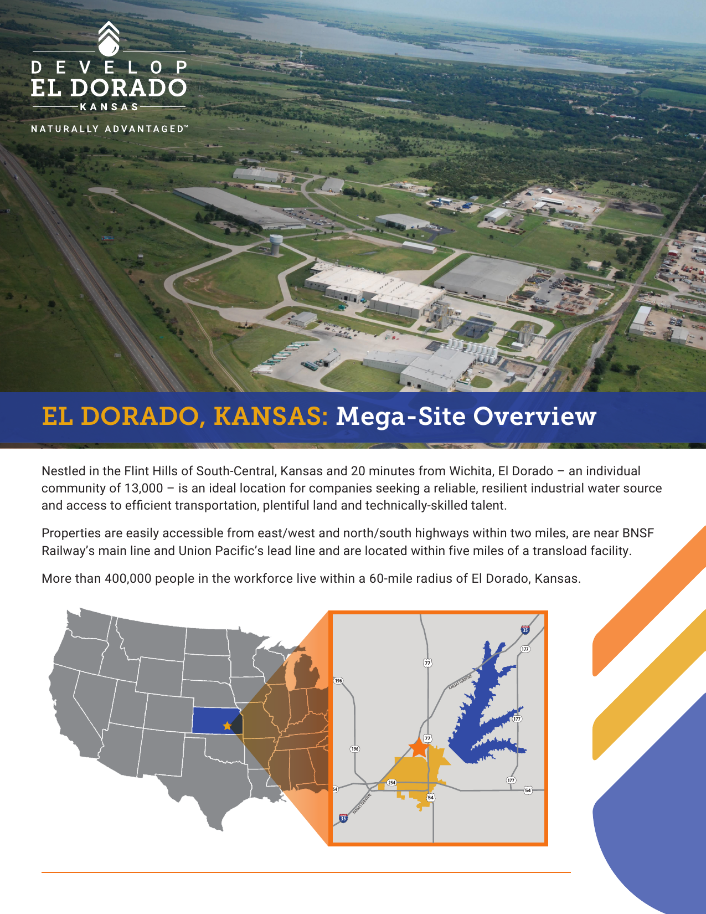
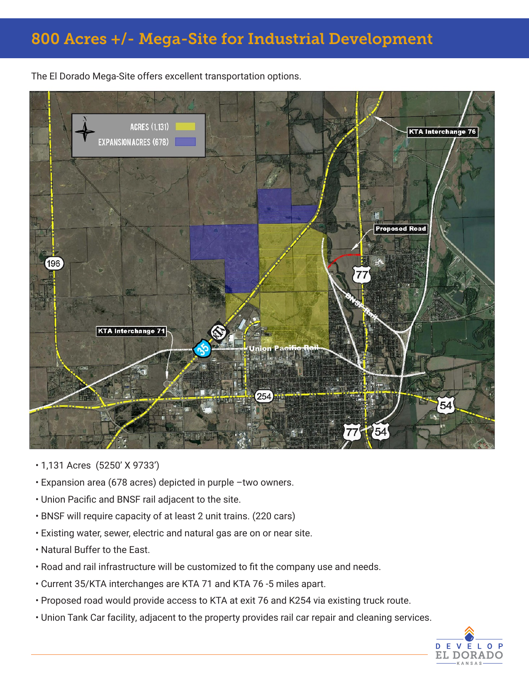
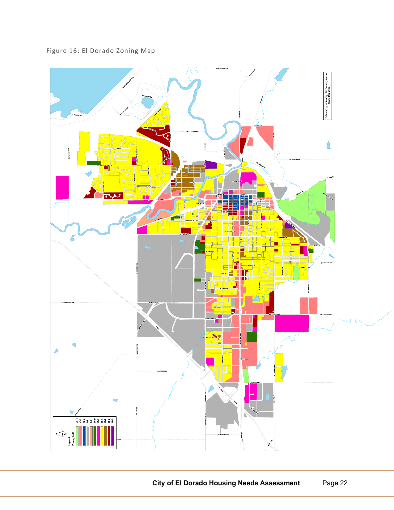

A comprehensive 15-year blueprint for economic growth, neighborhood quality, lake-driven tourism, and 21st-century infrastructure — rooted in El Dorado's oil-boom heritage and positioned for a new era.
El Dorado has always punched above its weight. On October 5, 1915, the Stapleton No. 1 well came in — the first oil discovery in the nation made using scientific geologic mapping, pioneered by State Geologist Erasmus Haworth. Within 3 years El Dorado's population tripled and the field was producing 9% of all U.S. oil, fueling the allied forces in World War I. That same entrepreneurial grit — combined with one of Kansas's largest lakes (8,400 acres), the 2nd-largest community college in Kansas, and a location 29 miles from Wichita's city center — makes El Dorado uniquely positioned for a 21st-century resurgence.
This plan is not a wish list. It is a prioritized, phased, and financially grounded roadmap built on assets that already exist and advantages that no comparable Kansas city can match simultaneously.
New district linking downtown to the lake
Diversified economy beyond legacy oil
Butler CC as the workforce engine
Housing for every stage of life
Fiber, power, water, flood mitigation
Kansas's greatest untapped waterfront
Vibrant, walkable city center
Quality of life that retains residents
Connections that open opportunity
Infrastructure for a growing city
"El Dorado doesn't need to import someone else's vision. It needs to excavate its own — from the oil fields that made it, from the lake that defines its landscape, from the people who chose to stay."— Vision 2040 Planning Framework
Click any marker for project details. Dashed lines show transportation corridors. Toggle the Zoning & Planning Map for flood zones and improvement districts.
Vision 2040 does not succeed as a city government initiative alone. These six anchor partners bring institutional capital, workforce pipelines, infrastructure investment, and political credibility that transform a plan into a movement.
El Dorado's only hospital and Butler County's primary acute care facility. Under new CEO Melissa Hall (appointed 2024, 20+ years healthcare leadership experience), SBA Hospital is a foundational partner in the Vision 2040 Regional Medical Campus expansion — committing to a new surgical center, behavioral health wing, and expanded specialty clinics that will capture the 40% of Butler County patients currently traveling to Wichita for routine specialty care. The hospital's Home Health Care division received the prestigious HHCAHPS Honors Award in 2023 for patient satisfaction excellence.
Founded in 1927, Butler CC is El Dorado's most powerful and most underutilized development asset. With approximately 6,800 students, 90+ programs, and an El Dorado main campus, Butler CC sits at the center of every sector in this plan. The proposed North Gateway satellite campus and employer-aligned program redesign will make Butler CC the most strategically aligned community college in Kansas — the headline in every economic development pitch deck the city sends out.
The HF Sinclair El Dorado Refinery (formerly HollyFrontier) has operated continuously since 1917 — the largest refinery in Kansas at 135,000 barrels/day capacity, with ~400 employees and an estimated $177.6M in annual revenues. Connected to the Cushing, OK crude hub by direct pipeline, it serves the eastern Rocky Mountain slope and mid-continent markets including Denver. As the city's energy sector evolves toward renewables and carbon capture, HF Sinclair's technical infrastructure, industrial footprint, and workforce represent irreplaceable assets for energy transition planning, workforce reskilling, and Kansas Oil Museum expansion.
Evergy is El Dorado's primary electric utility, with a residential rate of 13.80¢/kWh — 3.6% below the Kansas average and 17.5% below the national average. Industrial rates are similarly competitive. Reliable, affordable power is the #1 site selection factor for data centers, manufacturers, and renewable energy producers — the three largest targets in this plan. A proactive Evergy partnership to expand substation capacity, co-develop the community solar microgrid, deploy smart grid technology citywide, and pre-extend industrial power to shovel-ready sites is not optional: it is what makes "ready to build" actually mean something to a corporate site selector.
As the Butler County seat, El Dorado's Vision 2040 plan is inseparable from county priorities. The county controls EMS resources, county road funding, zoning on adjacent unincorporated land, the tax base that funds USD 490 schools, and the political alignment needed for TIF and STAR Bond approvals. A formal Memorandum of Understanding between El Dorado and the Butler County Commission — locking in shared commitments on EMS, roads, regional parks, and economic recruitment — is a first-year priority.
KDOT controls El Dorado's most important economic development infrastructure — US-54 and US-77, the highway junction that is the city's front door to the region. Every major project in this plan — the US-54/77 interchange upgrade, North Lake Road improvement, EQA airport runway extension, commuter bus corridor, and long-term Amtrak Thruway connectivity — requires active KDOT partnership. El Dorado should establish a dedicated liaison with KDOT's District 4 office and apply to every applicable T-WORKS funding cycle through 2040.
Beyond the six anchor partners, Vision 2040 success depends on buy-in and coordination from a broader network of community institutions, state agencies, and local organizations — each with a specific stake in El Dorado's growth.
K–12 pipeline into Butler CC and the local workforce. Population growth adds students and state per-pupil aid; industrial assessed value growth strengthens school finance. Dual enrollment and CTE expansion are joint city-school commitments.
Primary interface between the city and the business community. Leads retail void analysis, coordinates downtown recruitment, hosts annual employer roundtables, and is the public face of the "El Dorado — Kansas's Lake & Heritage Capital" tourism brand.
Critical stakeholder for any North Gateway development on agricultural land, the AgriTech Hub, and USDA rural broadband applications. Farmer buy-in de-risks land assemblage for the North Gateway District and renewable energy corridor and enables agricultural technology partnerships with Butler CC.
Leads the Oil Museum expansion capital campaign, manages naming rights negotiations with HF Sinclair, and coordinates with the Butler County Historical Society on oil-boom heritage programming. The Museum Foundation's nonprofit status unlocks charitable contribution matching and foundation grant eligibility unavailable to the city directly.
State tourism marketing partner. El Dorado Lake and the Heritage Tourism Circuit must appear in Visit Kansas's regional marketing materials, travel guides, and digital campaigns to reach out-of-state visitors. The ICT airport shuttle and Amtrak Thruway connection are co-marketing opportunities with Visit Kansas's fly-in tourism programs.
Permitting authority for all lake development within or adjacent to El Dorado State Park. Concession agreement partner for the glamping village and eco-cabin program. KDWPT's capital grant programs fund fishing infrastructure upgrades and boat ramp improvements that the city cannot fund independently.
El Dorado falls within WAMPO's planning boundary. WAMPO controls the Transportation Improvement Program (TIP) — the list of federally funded transportation projects in the region. Getting the commuter bus corridor, bike network, and US-54/77 interchange onto WAMPO's TIP is a prerequisite for federal CMAQ and RAISE funding. City representation on the WAMPO Policy Board is an immediate priority.
Community banks and credit unions headquartered in El Dorado and Butler County are natural partners for the downtown storefront loan program, small business incubator financing, and housing development lending. Local institutions have incentives under the Community Reinvestment Act (CRA) to deploy capital in qualifying El Dorado projects — a channel that is largely untapped today.
Partner for the downtown arts district, First Friday gallery walks, mural commission program, and artist residency. The Arts Council manages grant relationships with the Kansas Creative Arts Industries Commission (KCAIC) and the National Endowment for the Arts — both of which fund exactly the programming proposed in the downtown arts district.
Administers STAR Bond applications, Opportunity Zone certification, Kansas Industrial Training (KIT/KIR) programs, HEAL grants (Historic Economic Asset Lifeline — for adaptive reuse projects), and the statewide economic development recruitment pipeline. El Dorado aligns with all five of KDC's Framework for Growth target sectors (Advanced Manufacturing, Aerospace, Distribution/Transportation, Food & Agriculture, Professional & Technical Services) — a formal Framework partnership designation from KDC's Business Development team should be requested in Year 1. El Dorado should maintain a dedicated KDOC point of contact and submit an annual project pipeline update to ensure the city appears on KDOC's radar when matching prospects to available sites.
The Small Business Administration's Kansas office provides free consulting (SCORE), low-interest 7(a) and 504 loans for small business expansion, and micro-loan programs for startups. SBA resources directly support every element of the downtown small business strategy — the food hall tenants, the incubator graduates, and the specialty retail recruits all qualify for SBA assistance that reduces the city's direct subsidy burden.
The city's public-private economic development organization, focused on attracting companies requiring high-volume industrial water. Manages the Develop El Dorado program (developeldorado.com), maintains the 1,131-acre mega-site marketing pipeline, and provides confidential site selector support. 2025 win: AMAZONE (Germany) — 30,000 sq ft North American parts & distribution facility. Contact: 316.321.1485 · info@developeldorado.com.
Custodian of El Dorado's documented history — the 1915 oil discovery records, early city photography, and oral history collections that are the raw material of the heritage tourism circuit. Partnership with the Historical Society ensures the Oil Museum expansion and oil-boom walking tour use historically accurate content and gives the Society a formal role in the city's tourism identity.
El Dorado's designated regional EDA Economic Development District — a 14-county organization (including Butler County) headquartered in Bel Aire, KS. SCKEDD is both a Certified Development Company (CDC) and EDA district, meaning it can administer SBA 504 loans (up to $5.5M for fixed assets), SBA 7(a) Community Advantage loans, SBA Microloans (under $50K for startups), EDA loans, and USDA business loans within the region — all at below-market rates. For every business loan needed in El Dorado's incubator, downtown redevelopment, or manufacturing recruitment, SCKEDD is the first call. El Dorado should establish a formal annual pipeline-sharing relationship so SCKEDD's loan officers know the city's active projects and can proactively match prospects. Contact: sckedd.org · 9730 E 50th St N, Bel Aire KS · (316) 771-0768.
Network Kansas is the statewide entrepreneurship support organization that administers the E-Community Partnership — El Dorado's active program through the Chamber of Commerce providing low-interest gap loans to Butler County entrepreneurs. Beyond the E-Community loans, Network Kansas provides: free business coaching through the Resource Navigator, the Kansas Small Business Development Center (SBDC) connection, and in 2025 launched the K-State 105 Entrepreneurial Blueprint Initiative (11 communities selected statewide for entrepreneurship ecosystem planning). El Dorado should apply for the 2026 K-State 105 cohort — it's the most structured, state-funded framework for building a small-city innovation ecosystem available in Kansas. New E-Community partner applications open in 2026. Contact: networkkansas.com.
The ~100-member professional organization representing cities, counties, regional development groups, and industry partners across Kansas — covering 80%+ of the state's population. KEDA's core value for El Dorado: legislative advocacy. When El Dorado needs STAR Bond district designation, a new rural housing incentive, or enhanced PEAK program access, KEDA is the statewide voice lobbying on behalf of its member communities at the legislature. El Dorado Inc. should hold full membership; El Dorado's City Manager and economic development director should attend KEDA's annual conference. The professional development network also allows El Dorado's small ED team to benchmark practices against comparable Kansas cities. Contact: kansaseda.com.
The county-level economic development office (121 S. Gordy Suite 202, El Dorado · 316-322-4325) coordinates with the Butler County Commission on industrial land, county road funding, county-wide zoning, and regional economic development strategy. The County EDO is El Dorado's primary coordination point for any project that crosses city limits — North Gateway infrastructure, county road improvements to the mega-site, Butler County Comprehensive Plan 2025–2028 alignment, and the proposed Regional Water Authority. A formal joint economic development agreement between El Dorado and Butler County (with annual target-setting and shared reporting) formalizes a relationship that is currently informal and project-by-project.
National organizations provide resources, technical assistance, policy advocacy, and network connections that state and local partners cannot replicate. El Dorado should formally affiliate with each of these networks.
El Dorado already participates in the Kansas Main Street program. Main Street America's national accreditation — "Accredited Main Street America" status — is the highest designation and unlocks: federal policy advocacy (2025–2026 Policy Agenda pushes for expanded HTC funding and Main Street tax incentives), inclusion in national travel guides and tourism databases, eligibility for exclusive MSA grant competitions, and the right to market the MSA brand nationally. MSA's research documents $18.03 in private/public investment for every $1 in program operating cost — the highest-ROI economic development program in the US. El Dorado should pursue national accreditation alongside its existing state participation. Contact: mainstreet.org.
The National Trust is the national policy advocate for the Historic Tax Credit (HTC) program — the 20% federal credit + 25% Kansas credit stack that finances El Dorado's downtown adaptive reuse, boutique hotel, and Oil Museum expansion. The Trust's Main Street America program and its Preservation Action advocacy arm lobby Congress to expand, protect, and simplify HTC access for small cities. Joining the National Trust as an institutional member ($250/yr) gives El Dorado access to the Trust's legal and financial advisory network for historic property transactions, the Preservation Leadership Forum, and early notice of any federal historic preservation funding changes that affect the plan. Contact: savingplaces.org.
Rural Development Partners received $90M in New Markets Tax Credit (NMTC) allocation from the US Treasury in December 2025 — one of the largest rural-focused NMTC awards in the country. RDP specializes in deploying NMTC capital specifically in rural underserved communities where conventional CDFI funds don't reach. NMTC is the mechanism that makes El Dorado's proposed boutique hotel ($5–8M), food hall incubator ($3–4M), and innovation campus ($8–12M) financially viable for private developers who would otherwise require city subsidy. RDP's rural NMTC allocatee focus makes El Dorado — a rural, low-income census tract community with Opportunity Zone designation — a priority candidate. Contact: Rural Development Partners through the CDFI Fund database.
PPS is the leading national organization for placemaking — the practice of creating public spaces that function as genuine community gathering points rather than leftover space between buildings. PPS has partnered with Main Street America programs in dozens of small cities to transform underused downtown squares, lakefronts, and civic plazas into economic anchors. El Dorado's proposed Central Plaza, Walnut River Promenade, and lake amphitheater are all placemaking investments — PPS's free "Placemaking Spark" evaluation process and their Power of 10+ framework (10 destinations in a city, 10 things to do in each) would structure El Dorado's public space strategy around proven activation principles rather than physical design alone. Contact: pps.org.
The Office of Rural Prosperity (within Kansas Dept. of Commerce) advocates specifically for rural Kansas communities and administers: SEED Grants (Strategic Economic Expansion and Development — up to $25K for quality-of-life projects in communities under 5,000; El Dorado as a city is above the threshold, but county-level rural communities and surrounding townships may qualify for projects that benefit the regional economy); Grassroots ED 101 training program (free economic development capacity building, curriculum from University of Northern Iowa); and rural policy advocacy at the legislature. ORP's annual Rural Prosperity Summit is the premier networking event for rural Kansas leaders. Contact: kansascommerce.gov/orp.
Two Kansas Department of Commerce programs with direct El Dorado applications: Love, Kansas is KDC's remote worker and returning-Kansan relocation platform — El Dorado should register as a participating community so that Kansas-connected remote workers searching for affordable places to live are directed to El Dorado's housing listings, quality-of-life assets, and homeownership incentives. Sunflower Summer is Kansas's family outdoor recreation program distributing free state park passes — El Dorado State Park (Kansas's most-visited park) is the state's #1 Sunflower Summer destination, driving 1M+ annual visits. El Dorado should co-market as the "Sunflower Summer HQ" with designated dining, camping, and downtown itineraries for visiting families, partnering with KDWPT and Visit Kansas on materials. Contact: kansascommerce.gov.
Kansas's 2021 Framework for Growth identifies five sectors for accelerated state investment — and El Dorado qualifies in all five: (1) Advanced Manufacturing (1,131-acre mega-site, BNSF/UP rail, FTZ #28, AMAZONE win); (2) Aerospace (29 miles from Wichita aerospace cluster, EQA executive airport, Bombardier/Textron supply chain); (3) Distribution, Transportation & E-Commerce (I-35 at Exit 71/76, US-54/US-400, BNSF 46 trains/day, Savage Services transload); (4) Food & Agriculture (Butler County ag base, AgriTech hub, food manufacturing district, USDA VAPG-eligible); (5) Professional & Technical Services (Innovation Quarter, Butler CC pipeline, Opportunity Zone downtown tract). This alignment makes El Dorado one of the few Kansas cities that maps to every Framework sector — a strategic positioning argument that KDC should be making on El Dorado's behalf when it presents to site selectors. El Dorado Inc. should request a formal Framework for Growth partnership designation from KDC's Business Development team.
Vision 2040 succeeds only when City Hall and Main Street work together. El Dorado's small businesses are the city's economic immune system — they fill storefronts, employ neighbors, pay local taxes, and give the city its character. Their success depends on the public decisions City Hall makes: where to invest in streetscapes, how to structure zoning, which events to support, and how quickly to process permits. This section lays out the formal cooperation framework that makes both parties stronger.
Designate one City Commissioner as the formal Small Business Liaison — a rotating 1-year appointment with monthly office hours at the downtown library and a direct email/text line accessible to any registered El Dorado business. The Liaison attends all Main Street El Dorado board meetings, quarterly Chamber of Commerce breakfasts, and an annual Small Business Town Hall. The Liaison's annual report to the full Commission presents the business community's top 5 priorities for the upcoming budget cycle. This creates a structured feedback loop where small business owners have a guaranteed seat at the table — not just at election season but year-round. Budget: $0 (commission duty). Political capital generated: significant.
El Dorado currently charges no business license fees — a competitive advantage over most Kansas cities that should be marketed more aggressively to businesses considering relocation. Build on this by implementing a 72-hour business permit guarantee: any new business permit application receives a response (approval, denial, or request for additional information) within 72 business hours. Assign a dedicated Business Development Permit Coordinator in City Hall as the single point of contact for all new commercial applications — one phone call, one person, one timeline. Track and publicly report average permit processing times quarterly. This measure alone differentiates El Dorado from Wichita (where permits often take 30–60 days) and positions the city as a serious competitor for small business relocation and startup formation. Cost: one FTE position ($58,000–$72,000/yr). Return: every business that opens here rather than elsewhere.
Establish a formal Local Procurement Preference Policy for the City of El Dorado and encourage USD 490, SBA Hospital, and Butler CC to adopt the same framework: for any purchase under $50,000, a registered El Dorado business that bids within 5% of the lowest non-local bid is awarded the contract. For purchases $50K–$250K, the local preference applies within 3%. This policy — already used in Dodge City, Hutchinson, and Salina, KS — keeps institutional spending dollars circulating in the local economy rather than exiting to Wichita suppliers. Estimated annual impact if City + USD 490 + hospital adopt: $600,000–$1.2M in incremental local business revenue. Register a "Buy Local El Dorado" business directory on the city website with every El Dorado vendor available for institutional procurement.
Formalize and expand the Main Street El Dorado program into a statutory Business Improvement District under Kansas BID law (K.S.A. 17-4760 et seq.), which allows downtown property owners to self-assess a supplemental levy (typically $0.02–$0.05 per $1 of assessed value) that funds streetscape maintenance, marketing, event programming, and facade grants without drawing from the general fund. A BID self-funds the flower baskets, the parklet program, the mural maintenance, and the downtown events coordinator's salary — taking those recurring costs off the city's general budget permanently. Comparable BIDs in Abilene, Concordia, and Emporia KS operate on budgets of $85,000–$200,000 annually. Main Street El Dorado already has the organizational infrastructure; formalizing as a BID provides stable, multi-year funding certainty. A downtown that is visibly maintained and programmed attracts the private investment that a general fund cannot directly produce.
Co-locate three existing business support resources into a unified "El Dorado Business Launch Center" — Butler CC's Small Business Development Center (SBDC), the Network Kansas E-Community program, and the city's economic development office — in a single downtown storefront (targeting a vacant or city-owned commercial property on Central Avenue). Offer: free 1-hour consultations (no appointment required on walk-in Tuesdays); $0-cost business plan review; connection to SCKEDD SBA 504/7A/Microloan financing for businesses needing $25K–$5M in capital; access to the Kansas Entrepreneurial Blueprint (105 Blueprint) curriculum from K-State's regional extension; and a monthly peer group of 8–12 El Dorado small business owners meeting to share challenges and referrals. Additionally, establish a City Façade Grant Program for the downtown BID zone: $5,000–$15,000 matching grants for exterior improvements (paint, signage, awnings, lighting) with a simple one-page application and 30-day review. Target: 20 façade grants per year from Phase 1. Every dollar of façade grant generates $3–$5 in private investment from the business owners who match it.
Establish a mandatory annual Economic Summit co-hosted by City Hall, El Dorado Inc., the Chamber of Commerce, and Main Street El Dorado — a full-day event open to all businesses, residents, and elected officials. Agenda: morning keynote from KDC or a regional economic development leader; afternoon breakout sessions on three specific plan priorities for the coming year; a public review of the previous year's measurable outcomes (jobs created, permits issued, tax base change, housing units completed); and a "Community Vote" on the top three quality-of-life investments residents want prioritized in the upcoming budget. The Summit is recorded, transcribed, and posted publicly within 30 days. This event replaces performative public input processes with substantive ones — and holds both government and business accountable to stated goals in front of everyone who matters. Cost: $12,000–$18,000 per year for venue, A/V, materials, and speaker fees. Value: irreplaceable.
Vision 2040 is grounded in data, not aspiration. Understanding El Dorado's actual demographic and economic position — and the gap between where we are and where comparable cities have reached — is what makes this plan a necessity, not a wish list.
El Dorado peaked at 13,021 residents in the 2010 Census — then lost approximately 150 people by 2020 (Census: 12,870). The 2024 estimate of 12,694 shows continued gradual decline, and doing nothing is not a neutral choice. Every year without a growth strategy is a year the tax base shrinks, schools lose per-pupil funding, and retail loses the spending density it needs to survive. Vision 2040's population target of 18,200 by 2040 requires deliberate action starting in 2025 — not incremental drift.
Source: U.S. Census Bureau; 2024 estimate; Vision 2040 projections
USD 490 El Dorado serves 2,133 students across 6 schools. Current proficiency scores are significantly below state averages — and the district's own stated goal is to reach 95% graduation rate. This is not a failure of teachers or students; it is a symptom of high poverty, limited pre-K access, and a workforce with the second-lowest college attainment rate of any comparable-size Kansas city. Fixing these outcomes is the long-term work of every other section in this plan.
Sources: NCES, Ballotpedia, Public School Review, U.S. Census Bureau ACS 2022-24
Education attainment comparison: El Dorado vs Kansas
El Dorado's HPSA designation means 40% of Butler County health spending — ~$120M/year — exits to Wichita. The plan's Health Economy section adds a surgical center, behavioral health wing, telehealth hub, senior campus, and dental clinic to capture that leakage.
→ See Health EconomyButler County is a childcare desert by federal definition. Without licensed childcare, working parents reduce hours or leave the workforce — capping El Dorado's ability to staff new employers. The plan adds 200+ licensed slots through a campus, employer consortium, and home-based network.
→ See Childcare & HousingEl Dorado hosted one of the most significant oil discoveries in US history (1915) and has intact oil boom-era architecture — but captures <25K annual cultural visitors from the 1M+ who use El Dorado Lake State Park annually. The plan expands the museum, creates a heritage trail, builds a performing arts center, and establishes four annual signature events.
→ See Arts & HeritageVision 2040 closes the income and education gaps that have held El Dorado families back for a generation. Higher wages, better schools, and more housing options — those outcomes start with the industry and infrastructure investments in this plan.
El Dorado's below-state median home values ($153K vs $175K KS) and 62.1% owner-occupancy signal a market with room to grow. The city offers IRB property tax abatements up to 85% for 10 years, CID financing, and a B.A.S.E. grant-funded industrial infrastructure — the financial stack most comparable cities can't match.
The 9.5% combined sales tax rate and existing ½-cent capital project threshold fund structure mean Vision 2040 investments can be staged within current fiscal constraints. The $3M B.A.S.E. grant (water + sewer + industrial site) and $50K ROOMS grant already awarded prove state partnership is achievable.
The median wage gap ($40K local vs $48K statewide) and low college attainment (16.9% bachelor's) create both a challenge and an opportunity: Butler CC's workforce pipeline, coupled with employer-aligned certificate programs, can deliver trained workers at below-Wichita cost for the right companies that commit early.
El Dorado's most important undeveloped opportunity: a cohesive urban village filling the gap between downtown and El Dorado Lake. Currently scattered agricultural land and aging commercial strips, the North Gateway corridor has the geography to become El Dorado's signature address — close enough to downtown to walk, close enough to the lake to bike.
300-unit mixed walkable neighborhood — single-family, townhomes, and courtyard apartments in a connected block structure. Phase 1 targets 150 units by 2029. Designed around the linear park spine with front-porch setbacks, alley-loaded garages, and a village center at the heart.
Phase 1–2 · Est. $45M privateA new 150-slip full-service marina on the western shore of El Dorado Lake — filling the critical access gap between the city and the water. Includes fuel dock, ship store, electric boat charging (the first in Kansas west of KC), pump-out station, wave attenuator breakwater, and seasonal boat rentals. Complements the existing east marina for full-lake coverage.
Phase 1–2 · Est. $9M250-unit comprehensive boat storage — 80 enclosed/climate-controlled units, 120 covered carport-style, 50 open paved. Located between the marina and US-77 for easy dry-launch access. Year-round access road. Managed in partnership with the marina operator. This facility alone addresses a major unmet need that forces current boaters to store outside Butler County.
Phase 2 · Est. $6MA private-development lake amenity district entirely outside El Dorado State Park — solving the problem that the park's concession rules restrict commercial development within its boundaries. Proposed program: 2–3 waterfront restaurants (including one floating deck), a full-service outdoor outfitter and kayak/SUP rental, a private event venue (weddings, corporate), and a marine fuel and convenience stop.
Phase 2 · Est. $18M privateA city-operated 4-lane public ramp with courtesy dock, fish cleaning station with running water, and 100-space paved trailer parking lot. Free to the public. The current east-side public launch is inadequate for demand on summer weekends. This west-side launch reduces congestion and opens the lake to a new user base from the north and west.
Phase 1 · Est. $2.5MA 1.5-mile linear greenway connecting the residential neighborhood to the lake shore — a paved walking and biking trail, pocket parks with seating every 500 feet, native prairie plantings, and stormwater bioswales integrated into the park design. This spine is what makes the North Gateway a neighborhood rather than just a subdivision. Connects to the citywide Walnut River Greenway.
Phase 1–2 · Est. $3.5M80 full-hookup RV sites, 20 tent/primitive sites, and 8 cabin rentals on city-leased land operated by a private concessionaire. Open year-round, pet-friendly, with a camp store and laundry. Captures the large RV travel market that currently bypasses El Dorado entirely. Revenue-shares with the city at 8–12% of gross.
Phase 2 · Est. $4M privateA 15,000-sq-ft satellite Butler Community College facility in the North Gateway Village Center — housing marine mechanics, outdoor recreation management, landscape/horticulture, and building trades certificate programs. Co-located with the village commercial node, it brings student activity to the neighborhood and provides credential programs directly relevant to the district's employers.
Phase 2 · Est. $5M (Butler CC bond)Upgrade North Lake Road from a narrow residential street to a 4-lane collector road — center turn lane, curb and gutter, 5-ft sidewalks on both sides, 6-ft protected bike lane, and LED street lighting. This single infrastructure investment unlocks the entire North Gateway District by providing reliable, safe access from US-77 to the lake. Fundable through KDOT Enhancement grants.
Phase 1 · Est. $4.5M (KDOT + city)A plan that tries to improve everything everywhere at once improves nothing. Vision 2040 identifies six priority districts for concentrated, sequenced investment — each with a distinct character, a distinct gap, and a distinct strategy. Focused investment in these zones produces the visible transformation that builds community confidence and attracts private capital. A city that shows it can change one block changes how investors think about the next ten.
The highest-priority investment zone. Central Avenue from Main Street to E. Central is El Dorado's civic identity, cultural destination, and economic backbone. Current vacancies (estimated 18–22% storefront vacancy) represent both a problem and an opportunity — the buildings are largely intact, the oil-boom architecture is irreplaceable, and the infrastructure (utilities, sidewalks, parking) already exists. Strategy: Historic Tax Credit–driven building rehabilitation; Main Street BID streetscape program; anchor tenant recruitment for the three largest vacant ground-floor spaces; loft apartment conversions on upper floors to create a residential population that supports ground-floor businesses 7 days a week; and the Coutts Museum / Oil Museum / Oil Heritage Trail circuit that creates a reason to walk the entire avenue. Key milestones: 15 buildings rehabbed (2026–2030); 60–80 loft apartments occupied (2027–2031); storefront vacancy below 8% (2033). Estimated investment catalyzed by public action: $18M private, $2.5M public.
Phase 1–3 · Lead tools: Historic Tax Credits, TIF, Main Street BID, Coutts Museum activationThe primary growth district for new residential and mixed-use development. The 1,600 contiguous developable acres north and west of the city on the US-77 corridor represent El Dorado's largest population and tax base growth opportunity. The district is already activated by the AMAZONE manufacturing win (1220 N Haverhill Rd), the B.A.S.E. grant water main extension, and Butler CC's satellite campus planning. Strategy: develop the North Gateway Linear Park spine first (it makes all adjacent residential lots more valuable before the first house is built); execute the TIF district to fund infrastructure ahead of private investment; recruit a mixed-income anchor development (150–300 units) to establish the residential market; and place the North Gateway Elementary School site in Phase 2 to serve the growing family population. This district converts El Dorado's greatest under-investment (land) into its greatest asset (tax base). Key milestone: 500 housing units occupied north of the railroad by 2032. Estimated total investment: $85M private + $18M public infrastructure.
Phase 1–3 (10-yr buildout) · Lead tools: TIF, B.A.S.E. grant extension, LIHTC, North Gateway Linear ParkEl Dorado's industrial engine and the city's primary economic development recruitment zone. The 1,131-acre certified mega-site on this corridor is the single asset most likely to produce the transformational investment El Dorado needs in the 2026–2035 window. The AMAZONE win (2025) has proven the site works. Strategy: complete the site certification and utility extension to all 1,131 acres; actively market through El Dorado Inc., KDOC, SelectUSA, and direct outreach to JETRO/KOTRA/GTAI FDI targets; maintain the rail connectivity (BNSF + UP) as the primary competitive differentiator; and invest in Haverhill Road corridor improvements that make the first impression on every site visitor match the quality of the site itself. Adjacent to this zone: protect the HF Sinclair buffer, maintain the FTZ #28 designation, and ensure the Savage Services transload terminal is marketed in every industrial pitch package. Key milestone: second major industrial tenant committed by 2028. Estimated total investment catalyzed: $200M–$500M private depending on tenant type.
Phase 1–2 (active recruitment now) · Lead tools: Mega-site certification, FTZ, SB 98 tax exemption, El Dorado Inc., SelectUSAThe tourism and quality-of-life investment zone with the highest short-term return potential. El Dorado Lake is already drawing 1M+ visitors per year — the only city infrastructure needed to capture that spending is the commercial layer between the park boundary and the city. The West Marina site, the Lakeside Village residential development, and the US-54 commercial frontage on the lake approach corridor are the three components of this district. Strategy: execute the West Marina development agreement in Phase 1; recruit the boutique lakeside hotel operator simultaneously; use the marina's success to catalyze Lakeside Village residential sales; and expand the Walnut Valley Sailing Club infrastructure and competitive race calendar to extend the season. Key milestone: West Marina and first lakeside restaurant open by 2028; 200 Lakeside Village units occupied by 2031. Estimated catalyzed investment: $55M private.
Phase 1–2 · Lead tools: West Marina development agreement, boutique hotel operator RFP, Lakeside Village master plan, Sailing Club partnershipEl Dorado's east-side neighborhoods — the legacy housing stock east of the Walnut River, established in the oil-boom era and maintained by generations of working families — are the city's most stabilizing force and most under-invested zone simultaneously. The housing assessment confirms: 75% of the housing stock was built before 1980, median home values are $40,000–$60,000 below the county average, and 29% of renters are cost-burdened. These neighborhoods will not improve through benign neglect. Strategy: deploy the CDBG-funded rehabilitation revolving loan fund to target the 200 highest-priority structures; install street trees, sidewalks, and neighborhood lighting as public investment that makes private rehab decisions easier; use the Land Bank to acquire and remediate the worst-condition vacant properties; and connect the east side to downtown via the Walnut River pedestrian bridge and Greenway trail — eliminating the geographic isolation that currently makes east-side residency feel cut off from city life. Key milestone: 100 homes rehabbed; east-side walkability score improved by 2030.
Phase 1–4 (ongoing) · Lead tools: CDBG Rehab Revolving Loan, Land Bank, Walnut River Bridge, Greenway Trail, street tree programThe corridor connecting Susan B. Allen Memorial Hospital, Butler Community College, and the proposed Senior Living Campus on the Walnut River greenway forms a natural Health and Education District — a concentration of institutions that, if planned together, can function as El Dorado's second economic anchor after the industrial corridor. Strategy: coordinate hospital expansion, Butler CC health program growth, and senior campus development as a unified district rather than three separate projects; create a shared parking and pedestrian access plan; develop a fitness and wellness trail loop connecting all three institutions to the Walnut River Greenway; and recruit ancillary health services (dental, vision, behavioral health, physical therapy) into the district's commercial spaces to create a comprehensive health economy cluster. Key milestone: District 6 master plan completed by 2027; hospital surgical center open by 2029; senior campus Phase 1 (60 units) complete by 2030. Estimated investment: $80M+ across all institutions and partners.
Phase 2–3 · Lead tools: SBA Hospital master plan, Butler CC health program expansion, USDA Community Facilities grant, HRSA Health Workforce grantsDiversify beyond agriculture and legacy oil — building new economic sectors on El Dorado's existing strengths: skilled trades workforce, available industrial land, highway access, Butler CC, and proximity to Wichita's aerospace cluster.
Butler County receives some of the strongest wind resources in Kansas, and solar irradiance rivals the southwestern US. Develop a 500-acre renewable energy industrial park on the city's north side attracting wind turbine component manufacturing, solar panel assembly, battery storage systems, and grid modernization equipment companies seeking proximity to Wichita's freight logistics network.
Wichita — 29 miles west — is the "Air Capital of the World," home to Textron Aviation (Cessna/Beechcraft), Boeing Wichita Structures (formerly Spirit AeroSystems, reacquired Dec 2025), and Bombardier (U.S. HQ since 2022). El Dorado's south industrial corridor and EQA airport access make it a natural site for Tier-2 aerospace parts manufacturing, composite materials fabrication, and aviation MRO services. Butler CC's expanding Aviation Maintenance Technology program directly feeds this pipeline.
Partner with Butler CC to create a precision agriculture research and commercialization center. Focus on drone-based crop monitoring, soil sensing arrays, AI-assisted irrigation management, and livestock analytics. Recruit agri-data startups with affordable lease space, laboratory facilities, and test acreage on the adjacent Butler County farmland. Connect to Kansas State University extension networks for research partnerships.
Susan B. Allen Memorial Hospital — a 74-bed not-for-profit facility and Cancer Center of Kansas affiliate — is the only acute care provider for all of Butler County's 70,000 residents. Yet an estimated 40% of Butler County residents travel to Wichita for routine specialty care. Expand the existing campus with a surgical center, behavioral health and addiction treatment wing, cardiology and orthopedic specialty clinics, and a telehealth coordination hub for rural Butler County communities.
El Dorado's 1915 oil legacy isn't a liability — it's a story. Work with existing operators to modernize Hugoton Basin operations toward carbon-capture-ready production, recruit cleantech retrofitting and well-monitoring technology companies, and expand the Kansas Oil Museum into a regional heritage and energy-futures education center targeting 50,000+ annual visitors from the Wichita metro.
El Dorado's existing light manufacturing base (metal fabrication, food processing, plastics) provides a foundation for diversified advanced manufacturing. Develop 5 shovel-ready industrial pads (5–50 acres each) with pre-extended utilities, graded sites, and environmental clearances. The EDA's Public Works program funds exactly this type of rural industrial site preparation at up to 80% federal cost share.
Butler County's agricultural base — wheat, sorghum, soybeans, and beef cattle — is the raw material for a food and beverage manufacturing cluster that no comparable Kansas city has fully developed. Recruit grain-to-product food processors, a craft brewery anchoring a downtown taproom, a craft distillery tied to Kansas grains, specialty meat processing targeting the local ranching community, and a commercial cannery for locally-grown produce. Pair with Butler CC's culinary program for trained production workers and quality control technicians. Tie into the farm-to-table downtown brand for a vertically integrated local food economy.
Remote workers are the fastest-growing in-migration segment to small cities near metros. El Dorado's cost-of-living advantage over Wichita — 25–35% lower housing costs, negligible traffic, and lake access — is a compelling pitch. Build a purpose-built remote work campus near downtown: private offices, podcast studios, video production suites, high-spec maker space, and community amenities. Market aggressively to Wichita corporate employees with permanent remote status. Every remote worker household adds $60,000–$90,000 in annual consumer spending to the local economy and brings no demand on city services comparable to a new industrial employer.
The intersection of El Dorado's water resources, agricultural heritage, and Flint Hills prairie ecosystem creates a natural home for environmental consulting firms, soil and water testing laboratories, prairie restoration enterprises, and cleantech startups developing carbon sequestration, water remediation, and precision resource management solutions. Partner with Kansas State University's agricultural extension programs and the Natural Resources Conservation Service (NRCS) to establish El Dorado as the field headquarters for Flint Hills environmental research — a niche with both federal grant funding and private market demand that no other city in Butler County is positioned to capture.
The SBA Hospital expansion creates an anchor around which a broader health services economy can form. Recruit independent specialist physician groups (orthopedics, cardiology, behavioral health) to lease clinical space adjacent to the hospital. Develop a health and wellness commercial district — physical therapy, sports medicine, optometry, dental specialists, medical equipment suppliers, and health-tech startups — that captures the health spending of Butler County residents currently traveling to Wichita. Butler CC's expanding health science programs supply the medical assistant, radiology tech, and phlebotomy workforce this cluster requires. Telehealth coordination hub extends the cluster's reach to all rural Butler County communities.
El Dorado's position at the US-54/US-77 junction, 29 miles from Wichita's freight network and 15 miles from I-35, makes it an ideal location for last-mile distribution, cold-chain food logistics, and regional warehousing that would otherwise locate in Wichita's more expensive industrial corridors. Develop a 200,000-sq-ft speculative warehouse on the south industrial corridor — a "spec warehouse" built before a tenant is confirmed, funded by a private developer with an EDA-backed city loan guarantee. This converts a conversation with a logistics company into a signed lease in 60 days rather than 18 months. Cold-chain specifically targets the regional food distribution market tied to the food manufacturing cluster.
Kansas has been actively pursuing a state film tax credit — a 30% credit passed the legislature in 2024 but was vetoed. A re-introduced incentive is likely in the 2025–26 cycle, and El Dorado should be positioned to capitalize the moment it passes. El Dorado's dramatic Flint Hills landscape, oil-boom era architecture, El Dorado Lake waterfront, and aviation access via EQA airport create a diverse, authentic backdrop that film and commercial production companies actively seek. Convert a downtown warehouse into a 10,000-sq-ft flex production studio with green-screen capability, equipment rental, and post-production suites. Partner with Kansas Film Commission for active recruitment of productions. Butler CC's proposed digital media program supplies local crew. A single feature film production spends $500K–$2M locally during its shoot — with zero infrastructure requirement beyond the studio.
El Dorado is actively positioning itself to compete for hyperscale data center investment. No specific project has been proposed, reviewed, or approved — but El Dorado Inc. launched eldoradodatacenter.com as an educational resource, and the City Commission unanimously approved a new zoning ordinance in June 2026 establishing clear standards for data centers and large-scale battery storage facilities. The ordinance does not obligate approval of any project; it means El Dorado is prepared to respond quickly when a developer approaches. City Manager David Dillner and the Commission have committed to transparency as any future project develops.
The financial case is compelling. El Dorado currently generates approximately $7 million per year in total property tax revenue from all sources. A single 100MW data center with a $200M appraised value would — even during a 10-year, 85% tax abatement — deliver ~$430K/yr to the city. After abatement: $2.8M+/yr to the city alone ($8.2M+ across all jurisdictions). Critically, franchise fees of ~$2.5M+/yr from electricity consumption are not subject to abatement and flow from day one — representing a 250%+ increase in the city's current ~$1M/yr franchise revenue. Kansas passed SB 98 providing sales tax exemptions on qualifying data center equipment purchases.
A grassroots group formed in April 2026 after learning the planning and zoning committee was considering zoning changes for data centers. Primary concerns: water consumption, power grid impacts on residential rates, and transparency in the decision-making process. Mayor Bill Young responded publicly: "No data center project is currently proposed, under review, or up for a vote." The June 2026 zoning ordinance was designed in part to respond to these concerns by ensuring any future project faces modern, public standards — not rushed ad hoc approvals. Community engagement must precede any project approval.
Butler CC's expanding IT and Cybersecurity programs would provide an immediate local talent pipeline — associate degrees and industry certifications in network operations, cloud infrastructure, and security operations matching data center job requirements (typical 30–150 direct jobs per facility).
El Dorado's certified mega-site is one of the largest shovel-ready industrial land pools in the Wichita MSA — combining dual Class I rail access, 10 MGD drought-resilient water, two I-35 interchanges within 2 miles, and a 400,000+ workforce within a 60-mile radius.

Aerial view of El Dorado's industrial corridor — existing facilities, BNSF mainline, and undeveloped mega-site acres. Source: Develop El Dorado, 2024.

Site layout: 800+ primary acres (yellow) + 678-acre expansion zone (purple), KTA interchanges 71 & 76, dual Class I rail access. Source: Develop El Dorado, 2024.
All manufacturing machinery and equipment is exempt from Kansas personal property tax — a direct, permanent cost advantage vs. most competing states that tax industrial equipment annually.
Zero business license fees in El Dorado — no annual registration costs imposed on operating businesses, regardless of size or industry sector.
Mill levy: 161.683–165.583 per $1,000 assessed value. Commercial property assessed at 25% of appraised value. IRB abatements up to 10 years for qualifying manufacturing projects.
State 6.5% + City 1.0% = 7.5% base rate. Data center equipment exempt under SB 98. FTZ #28 (Butler County) enables duty deferral and inverted tariff savings on imports.
German agricultural machinery manufacturer AMAZONE selected El Dorado for its 30,000 sq ft (2.63-hectare / 6.5-acre) North American parts, distribution, and final assembly facility — opened December 2, 2025 at 1220 N Haverhill Rd. In AMAZONE's own press release, they cited El Dorado's position "in the heart of one of the most important agricultural regions in the United States" and I-35 access. AMAZONE USA Inc. was founded in Delaware in 2021; its North American team (30+ employees across the US and Canada) now operates from El Dorado. This is the city's first confirmed foreign direct investment win under the Develop El Dorado program.
Confidential site selection support available · El Dorado Inc. · 316.321.1485 · info@developeldorado.com
Susan B. Allen Memorial Hospital is Butler County's only acute care facility — serving 70,000 residents across 1,428 square miles. Yet an estimated 40% of Butler County's healthcare spending exits to Wichita. Capturing that leakage, expanding behavioral health services, and building a healthcare-adjacent business cluster represents a $120M+ annual economic opportunity that no other plan has seriously addressed.
Butler County has one acute care hospital (74 beds) for 70,000 residents — a ratio of 1.06 beds per 1,000, well below the Kansas average of 3.8 and the national average of 2.8. The county is a federally designated Primary Care Health Professional Shortage Area (HPSA) and a Mental Health Professional Shortage Area (MHPSA). An estimated $120M in annual healthcare spending by Butler County residents exits to Wichita — money that could employ hundreds of people and circulate through El Dorado's economy. The plan below captures that leakage systematically: starting with surgical and specialty expansion, then behavioral health, then a surrounding health-services commercial district that creates the "health mile" El Dorado needs to retain working families.
Expand Susan B. Allen's surgical capacity with an attached ambulatory surgical center (ASC) — a freestanding outpatient facility handling same-day procedures that currently require a 37-mile drive to Wichita. ASCs nationally generate 40–60% lower costs per procedure versus inpatient settings, dramatically increasing El Dorado's competitive draw from across Butler County. Add orthopedic and cardiology specialty clinics in leased space on the hospital campus, anchored by physician groups from Via Christi and Wesley Medical systems. USDA Community Facilities Direct Loan Program (2.75–4.25% fixed rate) is designed precisely for rural hospital expansions — covering up to 75% of project costs. A functioning surgical center also enables SBA Hospital to grow into a regional referral destination for procedures currently bypassing Butler County entirely.
Butler County has no dedicated inpatient psychiatric facility and no residential substance abuse treatment center. Residents in crisis travel to Wichita or — more often — present to the SBA emergency department with no psychiatric care available. Kansas ranks 47th nationally in mental health provider access. The rural opioid and methamphetamine overdose rate in central Kansas counties exceeds the state average by 35%. Build a 24-bed behavioral health and addiction treatment wing co-located on the SBA campus — leveraging the hospital's existing billing infrastructure and medical backup capacity. SAMHSA State Opioid Response (SOR) grants ($500K–$2M), HRSA Behavioral Health Workforce Education Training grants, and FEMA Pre-Disaster Mitigation funds for community health resilience collectively cover 60–70% of project cost. This is the single most urgent community health investment in the Vision 2040 plan.
El Dorado's Velocity fiber buildout and SBA Hospital's existing electronic health records infrastructure create the backbone for a rural telehealth hub serving all of Butler County's communities — Augusta, Andover, Douglass, Towanda, Leon, Latham, and Rosalia. The hub coordinates virtual specialty consultations (psychiatry, dermatology, endocrinology), remote patient monitoring for chronic disease management, and digital triage services that reduce unnecessary ER visits. USDA Distance Learning & Telemedicine Grant (up to $1M) and the FCC Connected Care Pilot Program specifically fund rural telehealth infrastructure at up to 85% federal cost share. Every averted unnecessary ER visit saves the patient $1,200–$2,500 and reduces SBA Hospital's uncompensated care burden. FQHC Lookalike designation qualifies the telehealth program for enhanced Medicare/Medicaid reimbursements 15–30% above standard rates.
Butler County has a critical dental provider shortage — fewer than 6 dentists serve the full county, against a national standard of 1 per 1,500 residents (implying a need for 46). Dental disease is the leading cause of chronic pain, missed school days, and missed workdays in rural Kansas — and untreated dental problems cost employers an estimated $154/employee/year in lost productivity. Partner with UMKC School of Dentistry and Wichita State's Dental Hygiene Program to establish a dental teaching clinic in El Dorado — providing reduced-cost care while training providers in a rural setting. Delta Dental Foundation grants, HRSA Oral Health Workforce grants, and FQHC designation provide the funding framework. Pair with a co-located vision clinic. The teaching clinic model creates a documented pathway for dental graduates to remain in Butler County post-residency — the most cost-effective long-term rural provider recruitment strategy available.
Butler County's 65+ population is projected to reach 23% of El Dorado's total by 2035 — up from approximately 17% today. Seniors requiring assisted living or skilled nursing care beyond existing El Dorado facility capacity must currently relocate to Wichita or Augusta, removing them — and their spending — from El Dorado's local economy. Develop a Senior Care Campus near the Walnut River greenway: a continuum-of-care community including memory care (12-unit secure dementia facility), skilled nursing (20 beds), assisted living (40 units), and independent living cottages (60 units). HUD Section 202 Supportive Housing for the Elderly provides capital grants up to $22M for nonprofit-sponsored senior housing. Every senior who can age in place rather than relocating represents $40,000–$80,000 in annual consumer spending retained in El Dorado's local economy — and avoids the family disruption that relocating an aging parent to Wichita represents.
Cluster health-adjacent private businesses near the SBA Hospital campus in a designated Health & Wellness Zone with streamlined permitting and TIF-eligible buildout incentives: physical therapy and sports medicine, optical and hearing centers, medical equipment suppliers, specialty pharmacy, fitness studios, nutrition counseling, and integrative medicine providers. This "health mile" captures spending from the 70,000-person Butler County health market currently going to Wichita commercial corridors. Butler CC's expanding Health Sciences programs supply the medical assistant, phlebotomy, and pharmacy technician workforce this cluster requires — creating a closed-loop health workforce pipeline within El Dorado. Target: 15–20 health businesses, ~$10M in private investment, and 150+ healthcare-adjacent jobs by 2035.
Butler CC's Health Science division is the only locally-accessible healthcare education pipeline for Butler County. Currently offering Nursing (ADN), Medical Assistant, Phlebotomy, Radiology Technology, and Surgical Technology, the program should expand in direct partnership with SBA Hospital to add: Respiratory Therapy, Physical Therapy Assistant, Mental Health Technician, Emergency Medical Science (Paramedic), and Dental Hygiene. Each program should carry a contractual "Local Employer Preference" placement track — pre-committing new graduates to local healthcare jobs before they can be recruited away to Wichita's larger systems. HRSA Health Workforce Education and Training grants fund exactly this type of rural healthcare workforce pipeline development at up to $500K/year.
The proven model: SBA Hospital co-funds clinical instructor positions at Butler CC, receiving in return a pipeline of graduates on 2-year local retention agreements — subsidized by NHSC (National Health Service Corps) loan repayment, which pays $25K–$50K/yr of student debt for rural health service. This costs the hospital far less than recruiting travel nurses or locum physicians from Wichita agencies, and builds a community-rooted health workforce that stays. A new primary care physician generates approximately $1.5M in annual economic activity for the community they serve.
El Dorado's HPSA designation is not just a problem label — it's a funding lever. Providers committing to 2-year rural service qualify for NHSC loan repayment of $25,000–$50,000 per year. Kansas SHARP (State Loans for Health Workforce) supplements with an additional $20,000–$35,000 annually. For a new physician graduate with $250,000+ in medical school debt, this is a decisive financial incentive to choose El Dorado over Wichita. El Dorado should actively market these programs to KU Medical Center's residency programs and provide a housing and practice setup subsidy funded through a City–SBA partnership.
El Dorado's future workforce begins in K-12 classrooms. USD 490 serves 2,133 students across 6 schools. This plan provides $25M+ in targeted investments to close achievement gaps, expand career pathways, and position USD 490 graduates for success in college, careers, and civic life.
Current Reality:
Vision 2040 Goal:
Root Causes: Child poverty, housing instability, limited parental work-flexibility, and a K-12 system stretched thin on resources. Vision 2040's residential development, childcare expansion, and workforce stability initiatives directly address these structural constraints. K-12 excellence is not separate from economic development — it is central to it.
Target: Universal Pre-K for all 4-year-olds in El Dorado
Current: Limited availability, ~200 slots
Goal: 500+ slots by 2028
Investment: $1.5M–$2M (facility + staff)
ROI: $7–8 return for every $1 invested (research)
Target: Raise math proficiency from 24% to 50%+
Strategy: Dual enrollment with Butler CC in STEM courses
Focus: Algebra, geometry, physics foundations
Investment: $500K (curriculum + equipment)
Timeline: 2026–2028
Target: Reading proficiency 32% → 75%+
Strategy: Summer reading camps, family literacy nights, 1-on-1 tutoring
Focus: K–3 foundational reading skills
Investment: $400K annually
Staffing: 6–8 reading specialists
Target: 300+ CTE enrollment by 2030
Programs: Building trades, welding, HVAC, automotive, medical assisting
Pathway: High school → apprenticeship → $50K+ wage
Investment: $1.5M (labs + equipment)
Employer partners: 10+ active sponsors
Target: Reduce chronic absenteeism to 10%
Strategy: Emergency housing fund, food support, wraparound services
Focus: Address poverty barriers to attendance
Investment: $2M over 5 years
Impact: Every day matters for graduation
Target: Parent participation 40% → 75%
Strategy: Translation services, evening events, childcare at meetings
Focus: Immigrant family integration
Investment: $300K annually
Outcome: Higher family advocacy
Timeline: High school CTE → 2-yr apprenticeship → Employment
Entry wage: $45K–$55K | Mid-career: $70K–$95K
Employers: NG Products, HF Sinclair, Construction consortium
Timeline: High school → Butler CC nursing/medical → SBA Hospital
Entry wage: $40K–$48K | Career max: $90K+
Employers: SBA Hospital, Regional Medical Campus
Timeline: High school IT → Butler CC cybersecurity → Data center
Entry wage: $50K–$65K | Mid-career: $85K–$125K
Employers: Project Horizon, IT contractors
Timeline: High school → Butler CC precision ag → AgriTech Hub
Entry wage: $42K–$52K | Management: $75K–$110K
Employers: Butler AgriTech Hub, AMAZONE
Timeline: High school → 2 yrs Butler CC → KSU/Wichita State transfer
Entry wage: $50K–$65K | Career: $85K–$150K+
Support: Transfer scholarships, employer tuition assistance
Timeline: High school entrepreneurship → Downtown incubator → Business owner
Support: $5K seed grant, SBDC mentoring, $15K microloan
Success target: 10+ grad entrepreneurs by 2030
Every major Vision 2040 employer commits to hiring USD 490 graduates, offering paid internships, and co-developing CTE curricula:
NG Products
Welding, electrical, manufacturing technician
HF Sinclair
Refinery operations, safety, process technician
SBA Hospital
Nursing, clinical, medical assistant
Project Horizon Data Center
IT operations, cybersecurity, network technician
AgriTech Hub
Precision agriculture, drone operations, data analyst
Construction Consortium
Carpentry, plumbing, HVAC, electrical apprentices
Goal: 100% of USD 490 CTE graduates have employer commitment letter before graduation
$25M+
Total Investment (2026–2040)
1,000+
USD 490 Graduates Impacted
Annual Investment Breakdown:
ROI: Every $1 invested in K-12 excellence returns $10–15 in lifetime earnings growth, reduced incarceration costs, improved health outcomes, and tax base expansion for the community.
Butler Community College is El Dorado's most powerful planning partner and most underutilized economic development asset. This plan places Butler CC at the center of every major sector — not as an afterthought, but as the primary workforce engine.
Founded in 1927 as El Dorado Junior College, Butler CC is now Kansas's 2nd-largest community college and 6th-largest educational institution statewide — serving ~6,800 students (2024) across 7 campuses with 90+ programs. The main campus is right here in El Dorado. With a 31:1 student-teacher ratio and programs spanning liberal arts, nursing, IT, agriculture, fine arts, and business — Butler CC sits at the center of every sector in this plan.
The question is not whether Butler CC can support El Dorado's growth — it absolutely can. The question is whether El Dorado is bold enough to make it central to every recruitment conversation.
For each major employer or sector recruited to El Dorado, Butler CC commits to designing or expanding a credential program that produces qualified graduates within 18–24 months of the employer's arrival. This is the model that has worked in manufacturing corridors across the Midwest — and it's how a community college becomes the most important line item in an economic development pitch deck.
Butler CC's Small Business Development Center (SBDC), already on campus, also provides free consulting, market research, and loan packaging to El Dorado entrepreneurs — directly supporting the downtown incubator, lake-based tourism businesses, and agri-startups.
A proposed 15,000-sq-ft Butler CC facility in the North Gateway district — bringing marine mechanics, building trades, outdoor recreation management, and landscape certificate programs directly to the district it serves. Opens Phase 2.
Wind turbine technician, solar installation, battery storage operations, and electrical grid modernization certificates — aligned with the Flint Hills Energy Corridor employers.
FAA-certified AMT program expansion — airframe and powerplant mechanics, avionics, and composite materials training for the aerospace supply-chain campus and EQA operators.
Expand nursing, radiology, EMT/paramedic, and surgical tech programs to fill the Regional Medical Campus. Butler CC's existing healthcare programs are the fastest path to local hires.
Associate degrees and industry certifications (CompTIA, Cisco, AWS) in network operations, cloud infrastructure, and security operations aligned with the Project Horizon data center.
Professional culinary arts, hotel/resort management, and event coordination certificates — building the workforce for the lake economy's restaurants, amphitheater, glamping, and boutique hotel.
Drone operation, soil science, GPS/GIS mapping, and agri-data analytics — training technicians for the Butler AgriTech Hub and the region's expanding precision farming operations.
Carpentry, plumbing, electrical, HVAC, and welding apprenticeship pipelines producing the construction workforce for 1,000+ new housing units and commercial development city-wide.
EMT, paramedic, fire science, and criminal justice AAS degrees feeding directly into El Dorado PD and EDFD hiring — especially critical as the North Gateway district demands a second fire station.
Associate degrees and certificates in warehouse operations, freight brokerage, inventory management, transportation logistics, and supply chain analytics — directly aligned with the speculative warehouse, regional distribution hub, and Wichita's existing freight economy. CDL licensing integrated into the program for commercial driver pipeline.
Business administration, accounting, entrepreneurship, small business banking, and grant writing certificates giving downtown incubator graduates and independent business owners the financial literacy to manage growth, access capital, and build sustainable enterprises. SBDC-aligned curriculum with real client case studies.
Water quality testing, wetland ecology, prairie restoration, environmental compliance, and GIS mapping certificates aligned with Walnut River watershed management, El Dorado Lake stewardship, flood mitigation monitoring, and the AgriTech Hub's soil and water science needs. NRCS and KDHE internship placements.
Graphic design, video production, social media strategy, content marketing, podcast production, and brand management certificates producing the creative workforce that downtown businesses, tourism operators, the film hub, and regional employers need to compete in a digital-first economy. Capstone projects serve real El Dorado businesses.
Early childhood development, social work assistant, community health worker, and family services programs addressing Butler County's underserved social services sector — and filling the childcare gap that prevents workforce participation among young families relocating to El Dorado. Childcare worker pipeline directly supports the residential recruitment strategy.
PLC programming, robotic systems operation, CNC machining, industrial automation, and quality control certificates aligned with the advanced manufacturing park's demand for technicians who can operate automated production lines — a skill set commanding a 15–20% wage premium over traditional manufacturing roles. Industry-4.0 lab with actual collaborative robots.
A specialized certificate program in craft beverage production — fermentation science, grain-to-glass brewing, distillation chemistry, sensory evaluation, and taproom operations management. Directly aligned with the craft production district's brewery and distillery recruitment. Graduates are immediately employable at new craft beverage employers and can launch microbreweries independently through the downtown incubator.
Kansas real estate licensure prep, property management certification, and construction project management courses targeting the growing workforce required to manage 1,200+ new housing units, commercial development projects, and rental properties created by Vision 2040. Creates an internal real estate professional pipeline so Butler County development is managed locally, not by Wichita firms.
USD 490 serves 2,133 students across 6 schools with a student-teacher ratio of 18.6:1. The district's current 79% graduation rate (vs. 89% statewide) and math proficiency of 24% (vs. 31% statewide) represent the most urgent long-term challenge in this plan. USD 490's own stated goal is to reach a 95% graduation rate and reduce chronic absenteeism to 10%. Vision 2040 supports that goal by attacking root causes: child poverty (22.8%), housing instability, and limited workforce opportunity. El Dorado's public schools (USD 490) are a direct pipeline into Butler CC and the local workforce. Strengthen that pipeline with structural programming — not just aspirational partnerships.
For Vision 2040 to succeed, Butler CC programs must be co-designed by the employers who will hire the graduates — not developed in isolation and then marketed to industry.
Every economic development initiative in this plan depends on one assumption: that El Dorado can recruit and retain working families. That assumption is currently false for two systemic reasons — there is not enough licensed childcare for two-parent households to work full-time, and there is not enough quality affordable rental housing to attract the young workforce a growing economy requires. These are not social programs. They are economic infrastructure, as essential as water mains and industrial pads.
A "childcare desert" is defined as any area with more than 3 children under 5 for every licensed childcare slot. Kansas Action for Children estimates childcare shortage costs Kansas businesses $1.5 billion annually in absenteeism, turnover, and lost productivity. When a family cannot find childcare, at least one parent reduces hours or exits the workforce entirely — statistically, the mother. Every family forced out of the workforce by lack of childcare represents $35,000–$55,000 in lost wages, lost tax revenue, and lost local consumer spending. Kansas passed the Child Care Contribution Tax Credit providing a 50% state tax credit for qualifying employer investments in childcare — making 2026–2030 the optimal window for El Dorado to build its childcare infrastructure with meaningful state subsidy support. This plan creates 200+ new licensed childcare slots in El Dorado — a transformative supply expansion for a city of 12,700.
Build a purpose-designed 120-slot early learning facility in the North Gateway district — collocated with the proposed Butler CC satellite and residential development for maximum family access. Serve children ages 6 weeks–5 years in evidence-based, high-quality programming. Partner with Butler CC's Early Childhood Education program for student teacher placements (reducing staffing costs 15–20%) and Kansas State University Extension for family support services. Sliding-scale tuition funded through KDHE's CCDF (Child Care and Development Fund) subsidies. Capital funding: 50% Kansas Child Care Contribution Tax Credit on qualifying donations + USDA Community Facilities Grant. This single facility absorbs the waitlist currently forcing El Dorado families to commute to Andover or Wichita for infant and toddler care — the most acutely undersupplied age group. Early childhood programs that meet Kansas quality ratings (KDHE KOALA standards) attract additional state operating support of $3,000–$5,000 per child annually.
HF Sinclair (~400 employees), Susan B. Allen Hospital (~300), Butler CC (~300), and the City of El Dorado (~200) together employ approximately 1,200 working adults — many with children under 5. Establish a formal Employer Childcare Consortium in which each institution contributes to a shared childcare benefit fund and receives reserved slots at the Early Learning Campus and contracted family childcare providers. Employer-provided childcare benefits reduce employee turnover by 15–25% and absenteeism by 30–40% nationally. For HF Sinclair alone, a 10% reduction in skilled workforce turnover saves an estimated $1.5–$2.5M annually (average replacement cost for a trained refinery operator: $35,000–$55,000). The Kansas Child Care Contribution Tax Credit makes each employer contribution 50% deductible at the state level — a compelling economics for large employers. The City of El Dorado should lead the consortium formation as an economic development priority, not a human services issue.
Family childcare homes — licensed providers caring for 6–12 children in a residential setting — are often the most accessible and affordable option for rural families, especially for infants (who have the fewest center-based slots), families needing non-traditional hours, and children with special needs who thrive in smaller settings. Kansas Childcare Aware's El Dorado/Butler County coordinator currently supports approximately 8–12 licensed family childcare homes. Vision 2040 targets 20+ providers — adding 8–12 new home-based providers through: $10,000 startup grants, training and certification support through Butler CC, a shared substitute teacher pool so providers can take sick days without closing, and a group purchasing cooperative for supplies. 12 new family providers × 7 average slots = 84 additional slots. Home-based providers also create entrepreneurship opportunities for caregiving adults who cannot commute to traditional employment.
El Dorado's largest employer — HF Sinclair's 135,000 bbl/day refinery — operates 24 hours a day, 365 days a year on rotating shifts. Susan B. Allen Hospital also operates around-the-clock nursing shifts. Yet every licensed childcare center in Butler County operates on daytime, weekday schedules. Evening, overnight, and weekend childcare — so-called "non-traditional hours care" — is the single most critical unmet childcare need for shift workers. Establish an Evening & Weekend Care Program, operating 5pm–7am and Saturdays/Sundays, housed within the Early Learning Campus building using existing licensed space. Staff it with Butler CC Early Childhood Education students as paid field practicum workers — providing both the workforce and the training credit hours. This is achievable at low incremental cost once the campus is built: an additional $200K/year in operating subsidy covers non-traditional hours programming for 30–40 shift-worker families.
El Dorado's median home value of $153K–$198K is among the most affordable in the Wichita MSA — a genuine competitive advantage. But affordability alone is insufficient when the housing stock is aging (median construction year: 1958), quality is inconsistent, and the rental market has seen virtually no new construction in two decades. A teacher earning $40,000/year can afford a $120K–$140K mortgage — but only if move-in-ready units in that range are available, which they frequently are not. A nurse or paramedic recruited from Wichita expects a quality apartment without a waiting list. The gap between El Dorado's price advantage and its housing quality and availability is the primary reason new hires at SBA Hospital, HF Sinclair, and USD 490 choose to commute from Wichita rather than relocate. Every commuter household represents a family not investing in El Dorado's tax base, businesses, schools, or civic life.
Develop 80–100 units of new workforce rental housing targeting the $800–$1,200/month price point — the critical gap between subsidized housing and Wichita's market-rate apartments. Located near SBA Hospital and Butler CC for maximum accessibility to the two largest employers. Finance with Low Income Housing Tax Credit (LIHTC) equity — Kansas allocates 9% credits for rural areas, generating roughly 70 cents of equity per dollar of credit capacity. Layer USDA Section 538 Guaranteed Rural Rental Housing loans at favorable fixed rates and the Kansas Housing Investor Tax Credit (HITC) state credit. The 9% LIHTC in Kansas is competitive (oversubscribed 3:1 historically) — a strong application emphasizes El Dorado's HPSA designation, healthcare and education employment anchors, and documented housing shortage. Target completion 2028 in Phase 1.
El Dorado has approximately 1,200+ housing units built before 1960 — many structurally sound but suffering from deferred maintenance: aging HVAC systems, outdated electrical panels, failing roofs, and inefficient windows. Establish a $5M Housing Rehabilitation Revolving Loan Fund providing 10-year, 2% interest loans of $15,000–$40,000 for owner-occupied homeowners earning below 80% of Area Median Income (AMI). As loans are repaid, they recycle to fund subsequent borrowers — creating a perpetual program with a single capital investment. Federal funding: HUD Community Development Block Grant (CDBG) funds housing rehabilitation specifically. Kansas HOME Investment Partnerships Program provides the state match. A fully-deployed fund rehabilitates 125–150 housing units over its first five years — directly reducing vacancy, increasing property tax revenue, and creating a stock of quality starter homes for incoming workforce members.
Target El Dorado's renter households — especially young families and workforce in-migrants — with a structured path to homeownership. Stack three resources: KHRC (Kansas Housing Resources Corporation) First-Time Homebuyer assistance ($3,000–$8,000 down payment); employer down-payment match programs (SBA Hospital, HF Sinclair, Butler CC, City of El Dorado agree to match KHRC grant 1:1 for employees purchasing within El Dorado city limits); and HUD-approved homebuyer counseling. Pair with the land bank program to provide move-in-ready homes from the rehabilitated vacancy pool. Target: 50 first-time homebuyers per year by 2028. Homeowners are dramatically more likely to invest in their community, participate in civic life, and remain long-term residents — building the stable tax base El Dorado's growth requires. A household buying a $160,000 home generates ~$2,400/year in property tax revenue and $40,000–$60,000 annually in local consumer spending.
El Dorado, like most small Kansas cities, carries a significant inventory of vacant, abandoned, and tax-delinquent properties that neither generate tax revenue nor contribute to neighborhood quality. A Land Bank Authority — enabled by Kansas statute (K.S.A. 12-5901 et seq., enacted 2021) — gives the city the legal mechanism to acquire tax-delinquent properties efficiently, clear title, and transfer them to developers and owner-occupants for productive use. Kansas enacted Land Bank enabling legislation in 2021; El Dorado has not yet established one.
The pipeline: (1) Identify 50–100 vacant/blighted properties through existing code enforcement records. (2) Acquire via the Kansas tax delinquency process (2-year timeline under state law). (3) Partner with the Housing Rehabilitation Revolving Loan Fund for targeted structural rehab. (4) Market reactivated properties to first-time homebuyers at 80% AMI or below. Every reactivated vacant property adds $3,000–$6,000 to the annual property tax roll and removes a blight anchor that depresses surrounding values by an estimated 5–10% within a quarter-mile radius.
Official data analysis from WSU's Public Policy & Management Center quantifies El Dorado's housing shortage: 6,080 units — 75% built before 1980, 12% vacant, and critical supply gaps for households earning $50K–$150K. These findings ground every housing initiative in Vision 2040.
75% of El Dorado's housing was built before 1980 — among the oldest stocks in the Wichita MSA. Aging units drive higher maintenance costs and create the case for the Rehab Revolving Loan Fund.
Population declined slightly while housing units grew modestly, creating an oversupply — but most vacant units are not market-ready, masking the true shortage of quality housing.
Household incomes rose faster than home values since 2011 — a positive sign for ownership affordability. But the rental market tightened separately, burdening low-income renters.
Nearly 30% of El Dorado renters pay more than 50% of income in rent — severely cost-burdened. This is the primary driver of workforce recruitment failure and school enrollment decline.
Source: City of El Dorado Housing Needs Assessment (WSU PPMC, 2023). Most of El Dorado is zoned R-1 Single-Family Residential (yellow), limiting housing type diversity. North El Dorado is primarily industrial (gray) — requiring rezoning to enable the North Gateway District's residential component.

Pass a City resolution to establish an RHID — reimbursing developers for infrastructure costs using incremental property tax growth for up to 25 years. Directly addresses the #1 barrier identified by stakeholders.
$2M state set-aside for housing rehabilitation, demolition, neighborhood development, or construction. Requires 25% match. Targets low-to-moderate income households.
Intentional State program targeting the middle-income housing gap — funding construction, rehabilitation, or conversion projects. Encourages public-private partnerships.
Low Income Housing Tax Credits provide 70 cents of equity per dollar of credit capacity — the most effective subsidy for rental development. Kansas allocates 9% credits for rural areas including El Dorado.
Source: City of El Dorado Housing Needs Assessment, August 2023. Wichita State University Public Policy and Management Center. Research: Nigel Soria & Isabel Ebersole. Data: U.S. Census Bureau, ACS 5-Year Estimates.
Create a full spectrum of housing — from starter homes to lakefront living — that attracts new residents and retains the workforce El Dorado's new industries will need. A city cannot grow its economy without growing its housing supply.
400-unit waterfront community on the western shore of El Dorado Lake. Mix of single-family lakefront lots, townhomes, and low-rise condos — each within a 10-minute walk or bike ride of the proposed west marina. Neighborhood retail node, pocket parks, boat-access slips, community dock, and kayak storage integrated into the HOA. Phase 1: 200 units; Phase 2: 200 additional.
280-unit workforce housing development targeting the 1,500+ households that commute daily to Wichita. Modestly priced single-family homes and duplexes on the city's west side, walkable to the US-54/77 transit hub. Prioritize Kansas Housing Resources Corporation financing and employer down-payment assistance partnerships with the aerospace and data center employers.
Convert vacant upper floors of Central Avenue's historic commercial buildings into 60–80 market-rate loft apartments. Paired with ground-floor retail activation, this creates a live-work population that sustains downtown businesses 7 days a week. Fully eligible for Kansas Historic Preservation Tax Credits (25% of qualified rehab costs) — making the project stack viable for private developers.
120-unit senior living campus along the Walnut River greenway — independent living, assisted living, and memory care under one master-planned roof. Integrate with the Walnut River Trail so residents maintain active, connected lifestyles. Kansas is under-served in rural senior housing; this fills a critical gap while generating 40+ permanent care-sector jobs.
Target El Dorado's older east-side neighborhoods with a 10-year owner-occupied rehab program: low-interest loans (3%), 50% matching facade grants, and city-funded alley and sidewalk improvements. Every $1 invested in housing rehab generates $1.40 in local economic activity within 12 months. Model after Emporia's successful rehabilitation district that stabilized 200+ homes.
150 units of affordable young-professional housing adjacent to Butler CC — studios and one-bedrooms targeting recent graduates and remote workers. Ground-floor co-working, fast fiber internet, bike storage, and a rooftop terrace. The $250-450/month rent gap between El Dorado and Wichita is the strongest recruiting tool this housing type can advertise.
Plat 50–80 large-format residential lots (2–5 acres each) on the western and northern periphery of the city with views of El Dorado Lake and Flint Hills prairie. Priced at $40,000–$90,000 per lot for custom homebuilding. Target: Wichita executives, remote work professionals, and retirees seeking space, privacy, and lake access without sacrificing city proximity. HOA covers shared lake access path, common area prairie restoration, and trail maintenance. Low infrastructure cost per lot; high tax value per acre when built out.
A 40-unit pilot community of factory-built micro-homes (400–700 sq ft) and accessory dwelling units (ADUs) on city-owned infill lots scattered through established neighborhoods. Target: single-person households, recent graduates, seniors downsizing. Base price $95,000–$140,000, putting homeownership within reach of Butler CC graduates earning $35,000–$45,000 per year. Factory construction and city-donated land reduce costs dramatically. Kansas ADU legislation (2023) streamlined approval for exactly this product type. ADU units attached to existing homes provide passive rental income for existing homeowners.
Manufactured housing is El Dorado's most underutilized attainable housing pathway. Modern HUD-code manufactured homes built today are energy-efficient, durable, and indistinguishable in quality from site-built homes at 30–50% of the per-square-foot cost. El Dorado's existing manufactured home parks represent critical affordable housing stock that serves the refinery workforce, trade workers, and lower-income senior households who are the backbone of the community. Vision 2040 targets manufactured housing on three tracks:
Track 1 — Existing Park Renovation: The city works with existing mobile home park owners through a park improvement loan program (funded via CDBG) to upgrade water and sewer systems, resurface internal roads, add community gathering areas (covered pavilion, playground, picnic tables, resident garden plots), and improve exterior lot screening with native plantings and decorative fencing. Target: 3 existing parks serving ~180 households upgraded by 2028. Upgraded parks have lower vacancy, higher stability, and reduced blight impact on adjacent neighborhoods.
Track 2 — Resident Ownership Cooperative: Explore conversion of one or more existing parks into a resident-owned cooperative (ROC) using ROC USA Network (a national nonprofit) financing — a model active in 20+ states that permanently removes manufactured home communities from speculative acquisition and keeps them affordable in perpetuity. USDA Rural Development 515 and Community Facilities grants support ROC conversions. One successful ROC conversion in El Dorado provides a model for the region.
Track 3 — New Manufactured Home Communities in Designated Areas: Designate 2–3 discrete zones for planned new manufactured home communities in areas that do not conflict with industrial or higher-density residential development: (a) a small community on the Southeast Corridor (US-54 east, away from refinery buffer) with 80–100 pads on city-served utilities; (b) a lakeside manufactured home community with permanent foundation homes and architectural covenants on the north shore road, targeting retirement-age residents who want affordable lake proximity; and (c) a workforce-specific community adjacent to the industrial park zone offering 60–70 pads on employer-guaranteed occupancy agreements (refinery, data center, manufacturing workers who need affordable housing close to work). All new communities require: permanent foundations, architectural review standards, minimum unit dimensions (900 sq ft), resident-shared green space (10% of site area), and modern utility connections. Site selection avoids flood zones, noise corridors, and active freight rail corridors.
Formal employer down-payment assistance program for major employers — data center, aerospace campus, refinery, hospital — to subsidize employee homeownership within El Dorado city limits. Employers contribute $5,000–$15,000 per employee toward down payment in exchange for a 3-year city residency commitment. City matches 25% of the employer contribution from the North Gateway TIF. Modeled after programs in Newton, IA and Wichita Falls, TX that anchored corporate workforces in small cities. Direct pipeline from job offer to homeownership in under 60 days — turning job recruitment into population recruitment simultaneously.
200-unit mixed-income development on the city's eastern edge incorporating 40% affordable units (60% AMI), 40% workforce units (80–120% AMI), and 20% market-rate — all within the same planned community to avoid income segregation. Community room, shared playground, raised-bed community gardens, and on-site resident services coordinator. Kansas LIHTC and HOME financing covers the affordable tier; market-rate units cross-subsidize the project. Creates a permanent affordable housing stock that doesn't age out of affordability because the units are deed-restricted, not just priced low today.
Modern cities are built on invisible systems. These eight projects create the digital backbone, utility resilience, and environmental buffers that every other initiative depends on — and most are eligible for substantial federal cost-share.
This investment is already starting. Velocity (Butler Electric Cooperative's fiber subsidiary) is actively deploying fiber-to-the-home in El Dorado — beginning on the west and north sides of the city, which aligns precisely with the North Gateway District and West Gateway residential development zones in this plan. Currently only 1.3% of El Dorado has fiber access (83.5% have cable, 36.7% DSL). Velocity's rollout is the catalytic first step. Vision 2040's role is to accelerate completion to all 5,200 addresses, coordinate with Velocity on dark fiber for municipal uses, and ensure anchor institutions (schools, hospital, City Hall, Butler CC) receive gigabit service in Phase 1. Apply for BEAD Program funding (NTIA) to cover 50–70% of final-mile costs in underserved zones.
Est. $12–16M full buildout · Velocity partnership + BEAD + USDA ReConnect · North/West already underwayInstall a 10MW solar array west of the city feeding a community microgrid with battery storage. Partner with Evergy on a shared-savings model — subscribers receive 15–20% rate reduction. Provides grid resilience during extreme weather events (which have disrupted service 3+ times in the past decade) and sends a signal to industrial recruits about energy reliability and cost predictability.
Est. $18–24M · IRA Investment Tax Credits + utility partnershipEl Dorado's water infrastructure was largely built in the 1960s. Upgrade the treatment plant to handle a growing population and new industrial demand (especially cooling water for the data center). Add UV disinfection, replace lead service lines in pre-1986 neighborhoods, and install remote-monitoring sensors throughout the distribution network. Also required to support the North Gateway District extension.
Est. $22M · EPA WIFIA Loan Program (low-interest)The Walnut River has flooded downtown and east-side neighborhoods repeatedly (see Zoning Map for FEMA Zone AE areas). Install green infrastructure upstream — bioswales, retention basins, restored natural floodplain buffers. Elevate key road and utility infrastructure in the 100-year floodplain. This protects existing property values and enables North Gateway development on land currently subject to insurance surcharges.
Est. $9M · FEMA BRIC + HUD CDBG-DR grantsEl Dorado is actively marketing 1,600 contiguous developable acres north and west of the city — among the largest certified industrial land pools in the Wichita metro. The $3M B.A.S.E. grant (Kansas Dept. of Commerce) plus $1M KDOT stormwater co-funding is extending a 16-inch water transmission main along Central Avenue and completing site certification (environmental assessments, boundary surveys, site clearing) on the first phase. The infrastructure investment in this plan — TIF-funded utilities, graded pads, environmental clearances — converts this raw acreage into a portfolio of shovel-ready sites competitive with any in Kansas.
B.A.S.E. grant $3M + $1M KDOT (active 2024–25) · Future EDA Public Works Grant (50% match) · TIF 15-yr cost recoveryInstall smart meters citywide, deploy distribution automation (fault detection, self-healing switches), and create EV grid-readiness infrastructure in all new development zones. Pre-wire transformer capacity at the North Gateway, industrial park, and data center site so future load growth doesn't require reactive emergency upgrades. Coordinate with Evergy on demand-response programs reducing peak demand charges for industrial users by 12–18%.
Est. $5M · Utility-funded with rate recoveryReplace aging solid waste fleet with automated collection vehicles, deploy smart-fill sensors in public bins to optimize pickup routes, and establish a regional Materials Recovery Facility (MRF) shared with Augusta and Andover. Add curbside composting for residential zones. Reduces operational costs ~20% over 10 years while supporting the city's sustainability narrative as it recruits ESG-conscious industrial tenants.
Est. $4.5M · Revenue bond + County partnershipPlant 2,000 trees over 10 years along rights-of-way, in parks, and in all new development zones. Studies in comparable Kansas cities show street trees increase adjacent retail sales 12–15%, reduce cooling energy use in adjacent buildings, and directly support mental health outcomes. Establish green corridors connecting downtown to the Walnut River greenway and from residential neighborhoods to the North Gateway linear park.
Est. $1.5M · USDA Urban & Community Forestry ProgramDeploy a municipal WiFi6 mesh network in downtown El Dorado, all parks, the North Gateway district, and El Dorado Lake's public areas — providing free public wireless access and the backbone for a smart city sensor infrastructure. Smart sensors monitor traffic flow, parking occupancy, air quality, stormwater levels, and water system pressure in real time. The data layer reduces public works response time by 30–40%, enables dynamic parking pricing, and provides the city commission with objective performance metrics on every major infrastructure system. Total cost is 70% lower when deployed alongside the fiber network buildout rather than as a standalone project.
Est. $2.5M · Bundled with BEAD fiber deploymentInstall in-ground parking sensors in all downtown and North Gateway surface lots, connected to a real-time wayfinding app and dynamic signage at key intersections. Eliminates the "no parking" perception that deters downtown visitors — 30% of downtown traffic in comparable cities is drivers circling for parking. Dynamic pricing (higher on event nights, lower midweek) maximizes utilization and revenue. Real-time occupancy data feeds the BID's monthly performance report, providing objective metrics on downtown health. Revenue generated flows directly into the Downtown Improvement Fund. Phase 2 adds automated enforcement with license plate recognition cameras.
Est. $800K · Operated as a revenue-generating city utilityConstruct stormwater capture cisterns at key municipal facilities — the athletic complex, golf course, and parks maintenance yard — and develop a reclaimed water distribution system for non-potable irrigation uses. El Dorado's golf course alone uses 15–20 million gallons of treated drinking water per year on turf that can be irrigated with reclaimed water at a fraction of the cost. The reclaimed water system reduces demand on the upgraded water treatment plant, lowering long-term operating costs and extending the plant's capacity margin for new residential and industrial growth. EPA WaterSense certification qualifies the city for infrastructure loan interest rate reductions.
Est. $3.8M · EPA WaterSense partnership + utility savings offsetRelocate overhead electric and telecom lines underground along the 8-block Central Avenue streetscape improvement zone and the North Gateway main corridor. Overhead utilities are the single most damaging visual element on an otherwise historic downtown streetscape — their removal is universally cited by downtown revitalization practitioners as having an outsized positive impact on street character and adjacent property values. Kansas utilities are required to participate in undergrounding programs at cost-shared rates; timing it with the streetscape project reduces total cost by 35–45% versus a standalone utility project. Storm resilience benefit: underground lines are not damaged by ice storms or straight-line winds that average two outage events per year.
Est. $4.2M · Coordinated with KDOT streetscape + utility cost-sharingNegotiate with wireless carriers (Verizon, AT&T, T-Mobile) for accelerated 5G small cell deployment in the North Gateway district, south industrial corridor, and El Dorado Lake area — all currently underserved by 4G coverage. Small cells attach to existing street light poles at carrier expense; the city receives annual attachment fees ($1,500–$3,000 per pole per carrier). 5G coverage at the data center site and industrial park is a site-selection prerequisite that carriers will deploy faster if the city facilitates access to city-owned poles under a master license agreement. Total estimated city annual revenue from attachment fees: $120,000–$200,000 at full deployment.
Est. $0 city cost · Carrier-funded; pole attachment fees generate $120–$200K/yr city revenueInstall generator backup systems at all critical public infrastructure — City Hall, Fire Stations 1 and 2, the water treatment plant, the wastewater facility, and the community recreation center — ensuring continuity of essential services during ice storms, tornadoes, and derechos that have disrupted El Dorado operations multiple times in the past decade. Integrate 72-hour emergency fuel storage for the full generator fleet. Deploy a public shelter designation and digital notification network with quarterly tested alert systems. Pre-position emergency supply caches (water, food, medical) at Fire Station 1 and Butler CC. FEMA BRIC grants cover up to 75% of eligible resilience infrastructure costs.
Est. $2.8M · FEMA BRIC (75%) + general obligation bondEstablish a shared Materials Recovery Facility (MRF) with Augusta and Andover — handling commingled recyclables, electronics, and construction waste for Butler County. Add curbside composting for all El Dorado residential zones, diverting 30–40% of solid waste from the landfill. Smart-fill sensors in public collection bins optimize pickup routes, reducing collection vehicle miles driven by 15–20%. The regional MRF model spreads capital costs across three municipalities ($4.5M total vs. $5.5M standalone) and positions El Dorado as the sustainability leader in the region — a growing factor in corporate site selection decisions, particularly for ESG-committed industrial tenants.
Est. $1.5M city share · Revenue bond + county partnership (3-city shared facility)El Dorado State Park is both the most visited and the largest state park in Kansas — drawing over 1 million visitors annually (2022+), more than any other park in the state system. It covers 2,000 park-land acres and 4,000 wildlife acres surrounding the 8,400-acre El Dorado Lake, with 1,100 campsites across four areas, 6 boat ramps, 2 swimming beaches, 7 hiking trails year-round, and the Walnut Valley Sailing Club. Yet there is zero lakefront dining, no boutique lodging, and no commercial amenity to capture any of that visitor spending. Every dollar spent by every one of those visitors currently exits Butler County before it reaches a single El Dorado cash register.
Kansas's most-visited state park sits on El Dorado's doorstep — drawing more visitors than any other park in the state — and the city captures effectively none of the economic value. Vision 2040's lake strategy doesn't require building visitor demand. It requires building the commercial infrastructure to serve demand that already exists and is being turned away daily.
The most impactful single project for El Dorado Lake is a new full-service marina on the western shore — the side closest to the city and the North Gateway District. The existing east marina is undersized and difficult to access from downtown. A west-side facility creates a seamless connection between the new neighborhood and the water, unlocking everything else on this list.
150 slips, fuel dock, ship's store, electric boat charging (first in western Kansas), pump-out station, wave-attenuating breakwater, and seasonal dry-stack storage for 80 vessels. Managed by a private marina operator under a 25-year city lease — zero operating cost to the city after construction.
The proposed Butler CC North Gateway satellite would house a marine mechanics certificate program — training outboard, sterndrive, and inboard technicians who service the expanded marina fleet and boat storage customers.
Expand existing east marina from 80 to 250 slips. Add fuel dock, ship's store, pump-out, ADA-accessible courtesy dock, and a wave-attenuating breakwater. Dry-stack storage for 120 vessels. Clinton Lake Marina in Lawrence (comparable benchmark) generates $2M+ annually for surrounding businesses. Apply for Kansas Wildlife, Parks & Tourism capital grants.
Phase 1–2 · Est. $7M3,000-seat outdoor amphitheater on the north shore with a floating stage offering water-view performances. 20+ ticketed events per year — regional and national touring acts, the annual Butler County Fair, and the proposed new El Dorado Lake Music Festival. Visitors from Wichita, Emporia, and Hutchinson overnight in El Dorado hotels and campgrounds, multiplying the economic impact of each event.
Phase 3 · Est. $6M12-acre lakefront commercial district on the western shore: 2–3 waterfront restaurants, a 35-room boutique inn, artisan market pavilion, and an outdoor outfitter. Private operators lease land from the city at market rate. This captures the visitor spending that currently leaves El Dorado because there is no lakefront dining or lodging.
Phase 2 · Est. $22M privatePaved multi-use trail encircling El Dorado Lake, connecting to the Walnut River Trail into downtown. Four trailhead parking areas, 8 rest shelters, interpretive signage on watershed ecology and Butler County history. Trail tourism generates $100–250 per visitor per day in comparable Kansas projects. Connects to the North Gateway Linear Park for a seamless city-to-lake experience.
Phase 2–3 · Est. $5.5M40 premium eco-cabins and glamping sites within El Dorado State Park via KDWPT concession agreement. Raised platform designs preserve riparian habitat. Average nightly rate $150–250 generates $2M+ annual revenue at 70% occupancy — with minimal infrastructure footprint. Targets the fast-growing market of nature tourists priced out of Ozarks and Colorado alternatives.
Phase 2 · Est. $3.5MEl Dorado Lake has some of the best walleye and crappie fishing in Kansas. Add 4 new ADA-compliant lighted fishing piers, expand the fish cleaning station with running water, install fish attractor structures in 6 key coves, and partner with KDWPT on a trophy walleye stocking program to build a competitive fishing tournament brand. Annual bass tournaments alone generate $1.5M+ in visitor spending at comparable Kansas lakes.
Phase 1 · Est. $1.8MHilltop visitor center on the lake's east ridge — the highest elevation point with panoramic water views. Feature exhibits on Walnut River watershed ecology, Butler County history, and the future of Kansas energy. Observation deck, coffee shop, and the starting point for organized lake tours. Orientation point for all lake visitors and anchor for group tour packages from Wichita schools and churches.
Phase 2 · Est. $2.5MDedicated facility for sailing regattas, bass fishing tournaments, and youth water sports — coaching dock, equipment storage, locker rooms, and covered spectator seating for 500. Host Kansas State Sailing Championship events and partner with Wichita State to establish a collegiate sailing team based at El Dorado Lake. Year-round indoor training and event space extends the season.
Phase 3 · Est. $4M15 miles of designated quiet-water paddling routes in the lake's western coves and upper Walnut River arm, with 5 primitive campsites accessible only by canoe or kayak. GPS waypoints, interpretive signage, and a rental outfitter at the west marina. Appeals to the growing paddlesports tourism market — canoe/kayak trail systems in comparable Midwest states report 300-500 user days per mile annually.
Phase 2 · Est. $800KDesignate a dedicated wake sports zone on the northern portion of the lake — separate from the kayak/paddle quiet zones — with a professional cable wake park system and a water ski school offering structured lessons from beginner to advanced competition. Butler CC's outdoor recreation program provides certified instructors. Annual Wake Sports Festival draws competitors from Wichita, Emporia, and Salina. The cable system requires no motorized boat, reducing fuel cost and noise impact on adjacent quiet zones. Partnered with KDWPT for zone designation and liability framework.
Phase 3 · Est. $2.8MEl Dorado Lake's cold-weather potential is almost entirely undeveloped. Launch a branded winter recreation program: ice fishing tournament series (Kansas Bass Federation-sanctioned, 150+ team entries), cross-country ski trail grooming on the circumnavigation trail when snow allows, winter bird-watching guided tours (the lake hosts bald eagle populations November–February — one of Kansas's premier eagle-viewing sites), and lakeside ice skating maintained by the state park concession operator. Winter programming extends the visitor season and generates revenue in months currently producing near-zero lake tourism activity.
Phase 2 · Est. $600KEl Dorado Lake sits directly on the Central Flyway — one of four major North American migratory bird routes — and hosts significant concentrations of waterfowl, shorebirds, and raptors during spring and fall migration. Install 4 permanent elevated wildlife observation platforms, a dedicated spotting scope area at the scenic overlook, and interpretive signage identifying 250+ bird species documented at the lake. Partner with Audubon Kansas and the Kansas Ornithological Society for guided birding weekends. Birding tourism in the US is a $41B annual industry — El Dorado's lake is a world-class birding destination that costs almost nothing to develop beyond trail access and signage.
Phase 1 · Est. $350KA 3-day annual boat show and lake festival drawing dealers from Wichita, Topeka, and Emporia to display runabouts, pontoons, bass boats, and personal watercraft — with test rides on the lake, food vendors, live music, and kids' activities. Vendors pay booth fees to the city; 8,000–15,000 attendance over the weekend generates $800K–$1.5M in direct economic activity. The boat show simultaneously markets the west marina, the lake's recreational potential, and El Dorado as a boating destination to exactly the audience most likely to buy a slip or a lakeside property.
Phase 2 · Est. $500K (recurring annual event)Develop a dedicated youth outdoor education campus on city-leased land adjacent to the lake — cabin lodging for 80 youth, large-group cooking facilities, a climbing wall, archery range, orienteering course, and waterfront access for swimming and canoeing. Available for Boy Scouts, Girl Scouts, 4-H, church groups, USD 490 outdoor education programs, and summer day camps. Managed by a nonprofit operator under a long-term concession agreement. Fills beds on weekdays when commercial lakeside amenities are lightly used and creates a pipeline of young visitors who experience El Dorado Lake before they're old enough to make their own travel decisions.
Phase 2 · Est. $2.2MDesignate 3 protected quiet-water coves on the lake's western arm as wellness zones — restricted to non-motorized craft from 5:30–9:00 AM, with a private concession offering guided sunrise paddle experiences, lakeside yoga sessions, and meditation programs. Targets the fast-growing wellness tourism market (the fastest-growing travel segment globally at $639B). Package with the glamping village for a "digital detox weekend" product. Floating yoga platform in Phase 3. Low infrastructure cost — primarily trail access, a small dock, and signage — but high per-visitor revenue potential at $75–$150 per person per experience.
Phase 2 · Est. $180KPartner with KDWPT to host monthly free Youth Fishing Days at the new ADA-accessible fishing piers — rods provided, bait provided, instruction provided. Target: 200+ youth participants per event, many experiencing fishing for the first time. Annual Youth Fishing Tournament (ages 6–15) with trophies and sponsored prizes from local businesses. Fishing is the most accessible outdoor recreation activity for low-income families; a well-run youth fishing program builds lifelong attachment to El Dorado Lake that translates into resident retention decades later. ADA pier design ensures participation by all ability levels.
Phase 1 · Est. $120K (annual program)Install a network of 6 NOAA weather alert stations with audible sirens and digital displays around El Dorado Lake's perimeter — providing 10–15 minutes advance warning of severe weather for boaters and beach users who may not have access to a phone signal. Emergency call boxes at every boat ramp and major day-use area connecting directly to KDWPT rangers and EMS. Coast Guard-approved throw rings and life preserver stations at 20 lake access points. Water rescue capability training and equipment stationed at the west marina. As visitor traffic increases, water safety infrastructure is not optional — it is the infrastructure that keeps the lake insurable and legally operable.
Phase 1–2 · Est. $480KA city is only as strong as its center. El Dorado's downtown has good bones — the El Dorado Commercial Historic District, the Kansas Oil Museum at 383 E. Central Ave., a walkable Victorian grid, and an active El Dorado Main Street program already running façade grants and zero-interest Investment Without Walls loans up to $20,000. The goal is acceleration, not starting from scratch.
Widen sidewalks to 12 ft, add 80 new street trees in structural soil cells, install consistent period-appropriate lighting, decorative crosswalks, and 20 new public benches. Calmed traffic design — speed tables and curb extensions — improves pedestrian comfort and has been shown to increase retail sales 20–40% on comparable Main Street programs in Emporia, Pittsburg, and Leavenworth.
The Kansas Oil Museum at 383 E. Central Ave. already houses the best collection of vintage operational oilfield equipment in the nation — including a pump house, two operational drilling rigs, a replica Oil Hill shotgun house, and the story of the October 5, 1915 Stapleton No. 1 discovery by geologist Erasmus Haworth. Current attendance is approximately 12,000 visitors per year — well below what the story deserves. Triple the museum's footprint into the adjacent vacant block. Add an immersive oil-boom era experience (scent, sound, tactile), an interactive Stapleton No. 1 drilling rig simulator, and a rotating exhibition on Kansas energy's future. Partner with HF Sinclair for naming rights (their refinery has operated continuously since 1917, directly tied to this story). Target 50,000 visitors per year — making El Dorado a required stop on every Kansas heritage tourism itinerary.
Convert the underused surface parking lot at Main & Central into a permanent public plaza — covered market pavilion, performance stage, year-round splash pad, and winter ice feature. Weekly farmers market (spring–fall), monthly food truck rally, and the annual Oil Jubilee festival. This becomes the social heart of downtown: the place you tell friends to meet you.
50% matching grants (up to $30,000 per building) for exterior renovation of downtown commercial properties — windows, awnings, masonry, signage. Funded by a dedicated downtown TIF district. 40+ eligible buildings; program runs 10 years. The psychological impact of consistent, high-quality storefronts cannot be overstated: it signals to shoppers and investors that the city is investing in itself.
Convert a vacant warehouse into a flexible co-working and retail incubator with 15 micro-storefronts (200–500 sq ft), shared commercial kitchen, event space with 150-seat capacity, and 20 co-working desks. 2-year below-market leases with graduated rent increases as businesses stabilize. Graduates tenants into permanent Central Avenue storefronts — several Kansas cities have used this model to fill previously empty blocks within 5 years.
Convert one of El Dorado's large vacant downtown buildings (former department store or historic bank building) into a 35-room boutique hotel with rooftop bar and event space. Visitor accommodation is the missing link preventing overnight tourism stays. Kansas Historic Tax Credits (25%) + New Market Tax Credits (39%) make the financial stack viable for a private developer — the city's role is to identify the building and facilitate the deal.
Commission a professionally designed self-guided walking tour of downtown El Dorado's oil-boom landmarks — the Stapleton #1 oil discovery marker, the 1915 derrick sites, the heritage commercial buildings built during the oil rush, and the Kansas Oil Museum — linked by custom period-appropriate wayfinding markers with QR codes connecting to audio narration and archival photography. A companion app with GPS navigation lets visitors explore at their own pace. The tour becomes the spine of the broader Heritage Tourism Circuit and gives the Kansas Oil Museum a reason to be Step 1 of every downtown visit rather than an independent destination. Butler County Historical Society and local schoolchildren provide the historical content at near-zero cost.
Transform downtown El Dorado's service alleys into a curated art and culture destination — commissioning large-scale murals from Kansas artists, installing accent LED lighting, adding weather-protected gallery alcoves for rotating small-scale installations, and hosting guided alley art tours as part of the First Friday gallery walk. Alley activation is a proven, low-cost urban strategy: Wichita's Delano District and Lawrence's Massachusetts Street both use commissioned alley murals as primary social media content that drives foot traffic to adjacent businesses. Budget per alley: $15,000–$40,000 — pennies per square foot of activation. The alley system connects to a "secret passages" tourism narrative that encourages exploration and discovery of less-visible downtown businesses.
Streamline El Dorado's outdoor dining permit process to a single application, 15-day approval, and flat $250 annual fee — removing regulatory friction preventing downtown restaurants from adding sidewalk seating. Launch a city-funded "parklet" program converting 2–3 on-street parking spaces per block into small public dining areas with planters, shade structures, and movable furniture. Outdoor dining increases restaurant revenue 15–30% during warm-weather months and is the single most effective strategy for increasing dwell time on a pedestrian street. The parklets become social media content — photographed, tagged, and shared by visitors who become the city's most effective tourism marketers.
Designate downtown El Dorado as a "Digital Business District" with dedicated gigabit fiber drops to every storefront, standardized outdoor LED display infrastructure for business advertising, free WiFi in all public spaces, and a Central Avenue co-working hub with podcast studios, streaming-quality broadband, and drop-in meeting rooms. This positions downtown as an attractive location for digital agencies, media companies, remote-work satellites, and tech entrepreneurs — a growing market segment underserved by El Dorado's current commercial real estate options. Digital District designation unlocks state broadband business attraction grants not available to general commercial zones.
Develop and market El Dorado as the culinary hub of the Flint Hills — a "farm-to-table capital" where the wheat, beef, and produce of Butler County agriculture appear on downtown menus, in the food hall, and at the weekly farmers market. Partner with Butler CC's Culinary & Hospitality Institute to host annual cooking competitions, chef residencies, and a "Harvest Festival" celebrating the seasonal agricultural calendar. A destination dining experience requires a story; El Dorado's is authentic and impossible for Wichita to replicate. A single Instagram-worthy restaurant on a revitalized Central Avenue does more for out-of-town reputation than a billboard on I-35.
Partner with a children's science museum organization to open a 4,000-sq-ft satellite branch in the downtown incubator building — hands-on exhibits in physics, biology, engineering, and local natural history (oil formation, prairie ecology, Walnut River watershed). Target audience: families with children 2–12, school field trips, summer camp programs. Operating model: membership-based with per-visit admission for out-of-towners. A children's museum is a proven anchor for young-family downtown traffic on weekday afternoons and weekends — the exact times when downtown foot traffic is lowest. Partnership with Butler CC's Early Childhood Education program for programming staff and student internships.
4-block arts district on the north end of downtown. 3-year reduced-rent artist leases in city-owned buildings, monthly gallery walks on First Friday, commissioned murals from Kansas artists on blank building walls, and an artist residency program drawing national talent. Culture districts statistically increase surrounding property values 10–20% within 5 years of establishment.
Extend downtown liquor license hours to 2am for outdoor-licensed venues, streamline patio dining permits (one application, 30-day approval), fund a weekend evening shuttle from Wichita's east side to El Dorado, and launch a "Third Thursday" monthly event series with live music, food vendors, and late retail hours.
The El Dorado Public Library is chronically underfunded relative to comparable Kansas cities. Expand with a maker space (3D printers, laser cutters, vinyl cutter), business resource center with dedicated SBDC office hours, and a rooftop reading garden. Anchor the north end of the streetscape as a civic institution families are proud to claim.
Install a permanent adventure playground in Central Plaza, add accessible family restrooms to the streetscape, and partner with a children's science museum organization to open a satellite branch. Young families are the demographic most likely to relocate and reinvest; design the downtown to signal "you belong here."
Identify the 5 retail categories with highest unmet demand in El Dorado's trade area (via annual retail void analysis) and actively recruit those specific businesses. A specialty outdoor gear shop, a locally-roasted coffee brand, a curated home goods store, and a Kansas-made artisan gallery are all categories with proven viability in comparable small-city revitalizations. Chamber staff dedicate 20% of time to targeted outreach rather than generic "come open here" campaigns.
Commission a downtown visual identity — consistent colors, mural themes, and wayfinding aesthetics that make every photograph taken on Central Avenue instantly recognizable as El Dorado. Install 3–5 dedicated "Instagrammable" public art installations: a large-format oil derrick sculpture, a neon "El Dorado, KS" sign, a painted crosswalk with the city's tagline. User-generated content from visitors is worth $2–5M in annual advertising equivalent at zero ongoing cost to the city.
Extend downtown liquor license hours, streamline noise permit applications for outdoor events, and adopt a formal Night Economy Policy. Third Thursday monthly event series, weekend farmers market night edition, and a "Last Call" restaurant coalition extending kitchen hours during events. A downtown that operates until midnight on Fridays and Saturdays is categorically more valuable to tourism and residential recruitment than one that closes at 9 PM.
Structure a 52-weekend downtown event calendar: monthly food truck rallies, quarterly vintage markets, seasonal art walks, Oil Jubilee Heritage Festival, Holiday Lights parade, summer outdoor movie series, and the weekly farmers market. Events are the highest-ROI downtown investment because they bring first-time visitors who become repeat customers of permanent businesses. City staff position: part-time Downtown Events Coordinator, funded by the BID.
El Dorado's Central Avenue currently functions as a vehicle throughway — a design that moves cars efficiently and keeps every other user out. Converting it to a Complete Street reallocates the same pavement width to serve pedestrians, cyclists, and business customers simultaneously. No new right-of-way is needed. The street gets redesigned, not widened.
The street one block north of Central Ave is designated one-way westbound during business hours (7 AM–9 PM). Drivers traveling through El Dorado east-to-west are directed here before reaching Central. 45° angled parking added on north side adds ~40 net new parking spaces on this corridor.
The street one block south of Central Ave is designated one-way eastbound during business hours. West-to-east through traffic is routed here, removing it from the pedestrian-priority Central Avenue corridor entirely. Same 45° parking treatment adds additional supply.
Trucks over 10,000 lbs GVWR are prohibited on Central Avenue 7 AM–9 PM. All deliveries routed to designated side-street loading zones with posted time windows (6–9 AM only, 30-min max per stop). Signs at US-54 and US-77 approaches direct freight to the bypass route before reaching downtown.
Despite removing on-street parking from two travel lanes, the conversion adds parallel parking in the recovered lane space plus 45° angled parking on the parallel routes — delivering a net increase of 25–40 downtown parking spaces overall, while eliminating the perception of "nowhere to park."
Physical improvements create the conditions for economic activity — they do not guarantee it. These seven mechanisms are designed to move capital into downtown businesses and keep it circulating locally.
Property owners self-assess at $0.15/sq ft/year — roughly $450/yr on a typical 3,000-sq-ft building, less than one month's utility bill. Generates ~$85K/yr for shared marketing, events, maintenance, and a part-time downtown manager. BID funds are controlled by a board of property owners, not the city — making building owners stakeholders rather than spectators. Kansas allows BID formation with 50%+ property owner approval under K.S.A. 12-1781.
$5,000 city grant — funded by the downtown TIF district — to any business opening in a storefront vacant 18+ months. No application, minimal paperwork. At 10–12 activations per year, total program cost is $50–60K annually. Clusters of vacancy signal disinvestment and deter further investment; the grant breaks the cycle by making the economics of opening in a vacant storefront marginally better than waiting for a "proven" location.
Many El Dorado storefronts sit vacant not for lack of tenant interest but because building owners will not invest in tenant improvements — a 1940s commercial space can cost $50,000+ to bring to restaurant or retail standards. The city matches 50¢ per dollar a building owner invests in a qualified tenant improvement allowance (max city match: $25,000 per project) for any lease signed with a net-new business. This unlocks $50,000 in private investment at a $25,000 city cost — and only pays out when a lease is signed and improvements are complete.
Retail follows restaurants — not the other way around. Every successful small-city downtown revitalization is led by 3–5 independent sit-down restaurants generating consistent pedestrian traffic that sustains adjacent retail. The incubator food hall seeds this category at below-market rent for 24 months; graduates move to permanent Central Avenue storefronts once their model is proven. The subsidy ends when the environment no longer needs it.
El Dorado's trade area — approximately 35,000 people when Butler County commute patterns are factored in — has demand for specific retail categories that is currently being satisfied in Wichita or Augusta. A professional retail void analysis, commissioned annually by the Chamber with SBDC support, identifies which categories have unmet local demand. Targeted recruitment of businesses to fill those voids dramatically reduces the risk of failure for incoming businesses — you're not asking them to create demand, you're asking them to capture demand that already exists.
All downtown parking revenue — meter fees, permit fees, city lot daily fees — is deposited into a dedicated Downtown Improvement Fund rather than the city general fund. This creates a direct connection between downtown activity and downtown reinvestment. At current and projected activity levels, parking revenue recycling generates $40,000–$80,000 per year in dedicated improvement funds at zero additional tax burden. As downtown grows busier, the fund grows proportionally — a self-reinforcing cycle.
Partner with a Kansas Community Development Financial Institution (CDFI) — such as the Kansas Department of Commerce's Community Development Network — to offer low-interest renovation loans (3%, 10-year term) to downtown property owners for qualifying improvement projects. CDFIs are designed specifically for markets where conventional bank lending is inadequate; downtown commercial properties in small cities are a textbook CDFI use case. The city provides a small loan loss reserve (est. $50,000) that the CDFI uses to leverage 3–5× in CDFI capital — deploying $150,000–$250,000 in below-market downtown renovation financing for a city contribution of $50,000.
El Dorado has one of the most dramatic origin stories of any Kansas city — platted in 1857, a frontier agricultural outpost for fifty years, then catapulted to national attention by one of the most significant oil discoveries in American history. That story, and the Flint Hills prairie landscape that surrounds it, are economic assets hiding in plain sight. A deliberately-built cultural economy generates tourism revenue, retains young residents, and creates the quality-of-life identity that separates cities people move TO from cities people move FROM.
In August 1915, the Stapleton No. 1 well struck oil in Butler County, triggering the largest oil rush in Kansas history. Within three years, Butler County was producing millions of barrels annually — supplying a significant portion of the Allied powers' petroleum needs during World War I. El Dorado's population exploded from roughly 3,500 to over 10,000 in five years. The HF Sinclair refinery (then Mid-Continent Petroleum) was built during this era and still operates today as the largest refinery in Kansas. The 1910s-era commercial blocks along Central Avenue, the Carnegie Library (1915), the Butler County Courthouse (1911 neoclassical), and the Petroleum Building are the physical legacy of that boom. Yet the Kansas Oil Museum — the state's only institution documenting this history — receives fewer than 25,000 visitors per year. This plan transforms El Dorado's oil heritage from a footnote into its primary tourism identity — while building the cultural economy infrastructure that retains talent and attracts creative professionals.
The Kansas Oil Museum (2040 Museum Blvd) is the only institution of its kind in the state — documenting the 1915 oil boom, the industrial history of the refining era, and the cultural transformation of Kansas's prairie communities by petroleum. Current facility: 22,000 sq ft, limited outdoor exhibits, no interactive technology, and modest visitor counts. Vision 2040 expansion: 50,000 sq ft with immersive oil boom experience galleries (1915 discovery to WWI), an interactive drilling simulator, a restored vintage oil field equipment park, rotating art exhibitions connecting oil industry art with Flint Hills prairie landscape painting, event rental spaces, and a 200-seat lecture hall for regional conferences. Target: 75,000+ annual visitors. Institute of Museum and Library Services (IMLS) grants, NEA Challenge America, and the Kansas Creative Arts Industries Commission (KCAIC) all fund museum capital projects. The expanded museum anchors El Dorado's heritage tourism economy and activates the surrounding South Central Avenue corridor.
El Dorado's downtown core contains a remarkable collection of 1910s–1930s commercial architecture from the oil boom period — including the Petroleum Building, the Carnegie Library (1915), the Butler County Courthouse (1911 neoclassical), and intact commercial blocks that have never been significantly altered or demolished. Nominate the Central Avenue Historic District to the National Register of Historic Places — a designation unlocking the federal 20% Historic Tax Credit (HTC) for building rehabilitation. Kansas supplements with a 25% state Historic Tax Credit. Together, these credits cover 45% of qualified rehabilitation costs — making the economics of transforming vacant storefronts into restaurants, boutiques, and apartments dramatically more attractive to private developers. The Kansas SHPO (State Historic Preservation Office) coordinates applications. Target: 15 buildings rehabilitated by 2030, triggering $18M in private investment from $8M in combined federal-state tax credits.
El Dorado currently lacks a dedicated performing arts venue of sufficient scale to host touring productions, regional orchestras, or major corporate events. The nearest mid-scale performing arts venue is Wichita's Century II Performing Arts and Convention Center (37 miles). Construct a 400-seat performing arts center on the downtown perimeter — acoustically designed, with a fly loft for theatrical productions, flexible seating for conferences, and broadcast infrastructure for recording and streaming. This venue makes El Dorado competitive as a small-market touring stop for productions that currently bypass cities under 15,000 population, and provides Butler CC's performing arts programs with a professional-caliber home stage. NEA Our Town grants fund arts infrastructure in underserved communities specifically; Economic Development Through the Arts is a named NEA funding priority. A 400-seat venue hosting 80 events/year at 75% capacity generates $1.2–$2M in direct annual economic activity through tickets, dining, lodging, and ancillary visitor spending.
Convert two or three 1920s-era oil-boom warehouses in the downtown fringe zone into a dedicated Artist Live/Work District — providing 30–40 below-market studio and live/work lofts for working artists, makers, musicians, and designers. Pair with a shared equipment facility: ceramics kilns, woodworking, metalworking, large-format printing, and a recording studio. A curated artist district creates foot traffic for adjacent retail and restaurants, increases nearby property values (documented in comparable programs in Hutchinson, KS and Salina, KS), and provides the "creative class" signal that remote workers, young professionals, and families with cultural interests look for when choosing a place to live. KCAIC provides up to $500K for creative economy facility development. NEA Creative Placemaking grants fund this exact category. An established artist district also complements the proposed Film Production Hub — shared equipment, cross-pollination of creative professionals, and a critical mass of arts activity visible to visiting producers.
Create a self-guided heritage walking and driving trail connecting El Dorado's oil-boom era landmarks: the Kansas Oil Museum, the Stapleton No. 1 historic discovery marker, the downtown Carnegie Library (1915), the Petroleum Building, the original refinery gate, the Butler County Courthouse (1911), and historic residential neighborhoods built for oil workers and executives in the 1910s–1930s. Each site features a professionally designed bilingual interpretive panel (English/Spanish), a QR code linking to rich digital content (archival photos, first-person oral histories, oil-era Sanborn fire insurance maps), and a digital audio tour via a free smartphone app. A marketing partnership with the Flint Hills Scenic Byway (K-177) positions El Dorado as the "oil heritage gateway" to the Flint Hills — extending the trail's reach to Byway travelers who already number 200,000+ annually. Investment: $800K; operating cost near zero once installed.
Cities that attract repeat visitors are cities with events that give people a reason to return. Establish four signature annual events: El Dorado Oil Boom Days (August — heritage festival, vintage vehicle show, living history, craft vendors, 5,000+ target attendance); Flint Hills Prairie Arts Festival (September — juried fine arts show, live music, prairie-themed workshops, tie-in with the Tallgrass Prairie Preserve); Lake Lights Winter Festival (December — El Dorado Lake shoreline lighting installation, ice fishing tournament, warming stations, family programming, hotel package partnerships); and El Dorado Film Showcase (March — short film festival using the new downtown production studio, industry networking, leverage the Kansas Film Commission relationship). Each event costs $150K–$300K to produce and generates $400K–$800K in direct local economic activity through visitor spending on lodging, food, fuel, and retail.
The Coutts Memorial Museum of Art (110 N Main St) is El Dorado's quietly remarkable fine art institution — holding a permanent collection of 19th- and early-20th-century American and European paintings, prints, and decorative arts assembled through the generosity of the Coutts family, whose fortune was built in the Butler County oil boom era. The museum operates in a historic building on North Main Street and represents a cultural asset that most Kansas cities of comparable size do not have. Vision 2040 treats the Coutts Museum not as a passive placeholder but as an active centerpiece of the Downtown Arts Corridor. Key improvements: exterior restoration with heritage signage and lighting that makes the building identifiable from Central Avenue; interior gallery renovation expanding display capacity by 40%; expanded programming — permanent local artist rotating exhibitions, school field trip curriculum partnerships with USD 490, monthly "Art After Hours" events pairing exhibition openings with downtown dining specials; and new interactive digital stations connecting collection pieces to El Dorado's oil-era history. The Coutts Museum anchors the southern end of the downtown cultural walk — Oil Heritage Trail starts at the museum, passes the Petroleum Building, and terminates at the Kansas Oil Museum on E. Central. With proper marketing and event programming, the museum becomes a year-round draw for culturally-curious visitors who extend their stay in El Dorado.
A city that doesn't name its own history lets others forget it. Historical plaques — on buildings, at neighborhood entrances, at regional landmarks — do something no tourism brochure can: they reach the person who wasn't looking for history and stop them with it anyway. El Dorado has the raw material for one of the richest plaque programs of any Kansas city its size: an 1857 founding, a world-changing 1915 oil discovery, intact oil-era architecture, a Corps of Engineers reservoir, a working refinery descended from the original boom, and neighborhoods built layer by layer over 170 years. This program identifies and prioritizes 34 specific plaque locations across three categories — neighborhoods, buildings, and regional landscapes — designed to be installed in phases alongside the Oil Heritage Trail and downtown revitalization work, with a unified design standard and QR-linked digital content behind each plaque.
All plaques in this program share a single physical design language: cast bronze on Kansas limestone — the same limestone that underlies the Flint Hills and was used in El Dorado's original civic buildings. Each plaque: 18"×24" cast bronze face with relief lettering; mounted on a 4"×12" limestone post or wall-mount bracket in heritage navy and gold powder coat; bilingual English/Spanish text; QR code linking to a curated digital content page on the city heritage portal (archival photographs, first-person oral histories, Sanborn fire insurance maps, Butler County Historical Society records). Cost per plaque installed: $3,200–$5,400 depending on mounting complexity. A uniform program of 34 plaques totals approximately $120,000–$185,000 — less than one downtown streetlight project. Funding: Kansas Historical Society matching grants (up to 50% of plaque cost), National Trust for Historic Preservation Preservation Funds ($2,500–$10,000 per application), Main Street El Dorado BID budget allocation, and memorial/dedication sponsorships at $5,000 per plaque allowing families and businesses to fund specific installations in honor of community members.
Mounted at the primary entry points of El Dorado's historically distinct neighborhoods. Each plaque names the district, gives its era of formation, and tells the first sentence of what makes it different from the blocks around it.
El Dorado was platted in 1857 by Rienzi Streeter and William Doyle on a bend of the Walnut River — four years before Kansas statehood. The original plat encompassed 12 blocks along the Walnut River bottom, with Central Avenue as the primary commercial spine. Settlers came first for agriculture in the Flint Hills; the economy changed forever on August 10, 1915. This plaque stands at the geographic center of that original grid.
When the Stapleton No. 1 well struck oil on August 10, 1915, El Dorado's population tripled in four years. The blocks east of the Walnut River filled with worker housing — modest bungalows, boarding houses, and two-flats built for the roughnecks, drillers, pipeline workers, and refinery operators who arrived by train from Texas, Oklahoma, and Pennsylvania. This district is the human geography of the boom: dense, practical, and alive with the sound of shift changes. Most of the 1915–1928 housing stock still stands.
The oil boom created fortunes overnight, and those fortunes built houses on the highest ground in El Dorado. The ridge north of Central Avenue became "Petroleum Hill" — where Mid-Continent Petroleum executives, independent oil operators, and refinery managers constructed the grandest homes in Butler County during the 1916–1930 period. Prairie Foursquares, Colonial Revivals, and early Tudor Revivals line the streets here — architectural evidence of wealth that arrived by train and never entirely left. Several of these homes remain occupied by families with direct oil-era lineage.
El Dorado's Carnegie Library (1915) was funded by a $12,500 grant from Andrew Carnegie — one of 2,509 Carnegie libraries built worldwide between 1883 and 1929. Its construction coincided precisely with the Stapleton oil discovery; the library was dedicated in the same year the city's population began its dramatic climb. The surrounding blocks developed as El Dorado's civic and professional center — home to law offices, physicians, and the institutions of a city suddenly aware it was becoming something larger than a farming town. The Carnegie building remains the original structure, largely unaltered.
The Butler County Courthouse (1911) anchors the governmental center of El Dorado and the county seat of the largest county in Kansas by area. The neoclassical structure — in limestone and brick — was completed four years before the oil discovery that would make Butler County one of the wealthiest rural counties in the United States. The courthouse has presided over 115 years of Butler County governance, land records, oil leasing disputes, and community life. The surrounding Courthouse Square was the civic gathering point for the community before and after the boom.
Before El Dorado was platted in 1857, the Walnut River corridor was home to the Osage Nation and later to the first Euro-American agricultural settlers who followed the river west from Missouri. The Walnut River gave El Dorado its water, its mill power, its early name as a settlement, and the geographic logic for its location. The river corridor today carries 170 years of this history in its banks — from pre-settlement Osage territory through homestead agriculture to the refinery's cooling water intake that the river has supported since 1915.
The north side of El Dorado developed in the decades before the oil boom as the preferred residential area for the city's agricultural merchant class, church leadership, and civic professionals — schoolteachers, physicians, and storekeepers who built substantial homes along the tree-lined streets north of Central Avenue. The neighborhood's pre-boom character — quieter, more spacious, closer to the churches that dominated small-town Kansas social life — provides a physical contrast to the faster-built, denser oil worker housing of the east side. Several of El Dorado's early churches and their original buildings remain in this district.
The residential blocks immediately north of the HF Sinclair refinery developed as working-class housing for the refinery workforce from the 1920s onward — a continuous settlement of generations of refinery families who could walk to their shifts. These blocks were shaped by shift schedules, union halls, and the peculiar rhythm of petrochemical work — three rotating crews, around the clock, for over 100 years. HF Sinclair's ~400 El Dorado employees today continue this tradition. This neighborhood is living labor history: the human side of the industrial economy that sustains El Dorado's tax base.
Butler Community College was founded in 1927 as El Dorado Junior College — two years after the peak of the oil boom, in the period when El Dorado's business and civic leaders were deliberately building the institutional infrastructure of a city that intended to outlast its petroleum bonanza. The college was created to keep Butler County youth from leaving for Wichita or beyond for their first two years of higher education. Nearly 100 years later, Butler CC serves approximately 6,800 students across 7 locations. The Haverhill Road campus has been the institution's primary location since the 1950s.
El Dorado Lake was created in 1981 when the US Army Corps of Engineers completed the El Dorado Dam on the Walnut River. The 8,400-acre reservoir inundated farmland, homesteads, and roads that had been occupied since the 1860s. Families who farmed the Walnut River valley for three and four generations were bought out and relocated. The lake that is now El Dorado's greatest quality-of-life asset erased a landscape of working farms, creek crossings, and rural communities that existed here for over a century. This plaque acknowledges what the lake replaced — and the families for whom it was home.
Prospect Hill Cemetery holds the graves of El Dorado's founding families — the settlers who arrived before the oil, built the first churches, farmed the Walnut River bottom, and named the streets. Their headstones document the founding era more honestly than any official history: birth years in Ohio, Indiana, and Tennessee in the 1820s and 1830s; death years in El Dorado in the 1880s and 1890s. The cemetery also contains the graves of Civil War veterans — Kansas was a Union state, and Butler County sent men to the war. Walking this cemetery is the closest El Dorado can get to meeting its founders.
Mounted on or adjacent to the building itself — either wall-mounted bronze on the facade, or post-mounted at the primary entry. Building plaques tell the structure's story: who built it, when, why, and what it meant to the people who used it.
205 W. Central Ave. Designed in Neoclassical style with Kansas limestone and brick, completed four years before the oil discovery. Wall-mounted bronze plaque at the primary south entry. Text to include: architect, construction cost ($65,000 in 1911 dollars), contractor, and the fact that it has served continuously as the seat of government for the largest county in Kansas for over 110 years. NRHP listing status research recommended as a Phase 1 action — the courthouse very likely qualifies.
321 N. Gordy St. One of 2,509 Carnegie libraries worldwide and one of only 37 surviving Carnegie structures in Kansas. Dedicated in 1915 — the same year as the Stapleton oil strike. Bronze plaque on the original limestone facade at the front entry with Carnegie grant amount ($12,500), dedication date, and the names of the library board who negotiated the grant. Kansas Humanities Council co-funding opportunity for public library plaque installations.
Downtown Central Ave. The Petroleum Building is the most visible surviving example of oil-boom commercial architecture on Central Avenue — constructed during the 1916–1922 peak of the El Dorado oil field's production. Post-mounted plaque at sidewalk level with period photographs integrated into the design, showing the building during the boom era with oil field workers visible on the street. This plaque is a natural anchor point for the Oil Heritage Trail walking circuit.
Approach to the refinery on E. Central Ave / refinery gate area. A post-mounted plaque on the public right-of-way at the refinery's main approach, telling the story of the Mid-Continent Petroleum Company founding (1915–1917), the refinery's role supplying Allied petroleum during WWI, the successive ownership changes (HollyFrontier → HF Sinclair), and its current status as the largest refinery in Kansas at 135,000 barrels per day. Coordinate with HF Sinclair's community affairs team for content approval and possible co-funding.
The exact location of the August 10, 1915 Stapleton No. 1 well strike — the most historically significant single location in El Dorado's history. A distinctive double-height plaque (24"×36") with a small bronze oil-derrick relief sculpture integrated into the mounting post. Text: the names of the wildcatters, the exact date and depth of discovery (1,100 ft), the initial production rate, and the phrase attributed to the well crew on discovery. If the precise location can be verified through Butler County land records, a GPS coordinate should appear on the plaque and link to a digital map showing the full extent of the original Butler County oil field.
110 N. Main St. Wall-mounted plaque at the museum entrance telling the story of the Coutts family — their arrival during the oil era, the fortune built in petroleum, and the decision to endow an art museum for the permanent cultural benefit of El Dorado. The plaque should note that the Coutts collection represents one of the most significant oil-era philanthropic bequests to a small Kansas city in the state's history. A direct companion to the museum's interior interpretive program.
Historic Masonic Lodge building now being converted to 124 Lofts residential (13 apartments, announced February 2026). Wall-mounted plaque on the historic facade during the renovation process — telling the building's story as a Masonic lodge, its role as a civic gathering institution in pre-oil and oil-era El Dorado, and its current adaptive reuse. The plaque becomes part of the building's marketing identity: "History Lives Here" is a far more compelling apartment brand than a generic name.
Location of the original Atchison, Topeka and Santa Fe Railway depot that served El Dorado from the railroad's arrival through the mid-20th century. The depot was the point of arrival for the thousands of oil workers who poured into El Dorado after 1915 — including the crews that drilled, operated, and expanded the Mid-Continent petroleum operation. A post-mounted plaque at or near the original depot site (to be verified via Sanborn fire insurance maps and historical photographs) tells the rail-arrival story and notes the BNSF's continued importance as the city's primary freight rail connection.
On the approach road to the water treatment facility. El Dorado is the only city in Kansas with a direct contract with the US Army Corps of Engineers for raw water supply from a major reservoir — a water rights position that gives the city 50-year drought resilience and 23M gallons/day capacity. This is one of El Dorado's most strategically significant assets. A plaque at the treatment plant entrance tells the story of the 1981 El Dorado Dam completion, the unique water rights agreement, and what this means for the city's long-term security — educating residents and site visitors about an asset that is rarely discussed in public.
El Dorado High School campus (USD 490). A plaque at the historic school building entrance telling the history of public education in El Dorado from the one-room schoolhouse era through the oil-boom-era school expansion (the discovery transformed school funding overnight) to the present. Notable alumni and the school's role in sending Butler County young people into the professional and industrial workforce for over 125 years. A natural companion to USD 490's annual graduation ceremony and a permanent tie between the school and the community it serves.
UTLX's El Dorado repair facility on the BNSF line — 40 acres, historically one of the largest tank car repair operations in Kansas. A post-mounted plaque at the facility's public road frontage tells the story of the tank car industry's connection to petroleum transport, the facility's establishment in El Dorado as a direct consequence of the oil boom (tank cars were needed to move crude oil from the field), and the operation's century-long continuity as a rail-industrial employer. UTLX is a rarely-seen part of the city's industrial heritage that most residents don't know about.
SBA Hospital campus. A wall-mounted plaque at the hospital's main entrance telling the history of organized healthcare in El Dorado — from the earliest oil-era medical care (the population explosion of 1915–1920 created immediate demand for doctors and a hospital) through the establishment of the permanent community hospital and its evolution into the 74-bed facility operating today. The plaque acknowledges the Susan B. Allen memorial endowment and the hospital's identity as a nonprofit community institution — distinct from a corporate healthcare chain — serving Butler County for a century.
McDonald Stadium entrance. The El Dorado Walnuts collegiate baseball team takes its name from the Walnut River — a living link between the city's founding geography and its summer entertainment tradition. A plaque at the stadium entrance tells the history of baseball in El Dorado from the oil-boom era (the refineries and oilfield crews fielded teams; baseball was the dominant recreational institution of early industrial Kansas) through the Butler CC Grizzlies program and the modern Walnuts summer collegiate league. Baseball history and community identity, in bronze.
Centennial Park main shelter area. The name "Centennial Park" marks a civic milestone — identifying when the park was formally dedicated relative to the city's or state's history. A plaque at the main shelter documents the park's evolution from its original dedication through the generations of El Dorado families who have used it for picnics, Fourth of July events, summer baseball, and daily recreation. The park as a social institution, not just a green space. Funding opportunity: memorial/dedication sponsorships at $5,000 allow families to fund the plaque in honor of specific community members who were associated with the park.
Placed at natural features, geographic boundaries, and landscape-scale sites where the story is bigger than a single building or block. Regional plaques position El Dorado within its larger natural, industrial, and ecological context.
Location: Walnut River Trail entry at the new downtown pedestrian bridge.
El Dorado was platted on the Walnut River's east bank because of the water, not despite the flooding. The river powered the first mills, supplied the first settlers, and carried the first commerce. The plaque tells the river's role: the Osage settlement along its banks, the 1857 platting at its bend, the refinery's dependence on its flow since 1915, and the creation of El Dorado Lake — its largest tributary reservoir — by the Corps of Engineers in 1981. A river that made a city, for 170 years.
Location: El Dorado Lake Visitor Center (KDWPT) main entry — highest-traffic visitor arrival point.
Completed in 1981, El Dorado Lake was built by the US Army Corps of Engineers for flood control, water supply, and recreation. El Dorado is the only Kansas city with a direct Corps water supply contract — giving it 23M gallons/day capacity and 50-year drought resilience. The lake now draws over 1 million visitors per year. The plaque tells the full story: who designed it, what it flooded, why it was built, and what it has become. This is the plaque the million annual visitors should see.
Location: US-54 / K-177 intersection east of El Dorado — the eastern city boundary where the Flint Hills begin.
El Dorado sits at the western edge of the Flint Hills — one of the largest intact tallgrass prairie ecosystems remaining in North America. To the east of this point: the Flint Hills Scenic Byway, the Tallgrass Prairie National Preserve (48 miles), and Cassoday (the "Prairie Chicken Capital of the World," 20 miles). To the west: the Walnut River valley, the city, and the industrial corridor. This plaque marks the ecological transition and introduces the K-177 Byway as one of the most significant scenic and ecological drives in the Great Plains.
Location: Elevated overlook point on the US-54 corridor east of downtown, where the original oil field landscape is visible.
The Butler County oil field, discovered in 1915, extended across tens of thousands of acres of Butler County farmland. At its peak in the early 1920s, Butler County was producing millions of barrels annually — supplying a significant share of Allied petroleum during WWI. The visible landscape to the east — farms, rolling hills, the occasional pump jack still operating — is the same landscape those wildcatters crossed in 1914 looking for oil. The plaque gives context to what might otherwise look like an unremarkable Kansas horizon.
Location: US-77 rest area or overlook point near Exit 71/76, visible from the turnpike approach.
I-35 (the Kansas Turnpike) passes directly through El Dorado at Exits 71 and 76 — the same corridor that was US-77 in the pre-interstate era. This route connected Kansas City to Wichita, and El Dorado sat at its midpoint. The plaque tells the history of Kansas highway development, the original US-77 designation, the Turnpike's construction in the 1950s, and El Dorado's role as an interstate node rather than a bypass town — a distinction this plan emphasizes. 12 million vehicle-trips per year pass within two miles of downtown El Dorado.
Location: Railroad crossing observation point at the safe public viewpoint on the BNSF corridor through downtown.
The BNSF main line running through El Dorado carries 46 freight trains per day — one of the highest-frequency freight corridors in Kansas. This line connects El Dorado to the BNSF Logistics Park Kansas City (134 miles northeast), the Port of Los Angeles (via the southern transcon), and the national freight network. The plaque tells the history: the original Atchison, Topeka and Santa Fe Railway arrival, its role in bringing the oil workers and equipment of 1915, and the BNSF's current operational significance to El Dorado's industrial economy.
Location: State Park scenic overlook on the lake's southern shore — broadest vista of the Walnut River valley landscape.
The Walnut Valley is the geographic region encompassing the Walnut River drainage basin from the Flint Hills to the Arkansas River — the landscape context within which El Dorado sits. The name "Walnut Valley" appears in El Dorado's history continuously since 1857: the Walnut Valley Sailing Club, the Walnut Valley Music Festival (in Winfield, 68 miles south), the Walnut River watershed. This plaque introduces visitors to the regional geography and ecology they are standing within — connecting El Dorado Lake's scenery to the broader landscape story of the Great Plains transition zone.
Location: El Dorado Lake wildlife observation platform (to be built as part of the lake birding trail).
El Dorado Lake sits directly on the Central Flyway — one of four major North American migratory bird corridors. The lake's shallow coves, wetland margins, and open water attract 250+ documented bird species during spring and fall migration. Shorebirds, waterfowl, raptors, and songbirds all use El Dorado Lake as a staging area on migrations that span thousands of miles. This plaque identifies the flyway, maps the migration routes, and names the species most commonly observed from this platform — turning a lake visit into a continental-scale ecological event.
Location: West Marina sailing center entry or the sailing club's primary dock area.
El Dorado Lake's size, orientation, and consistent Great Plains wind patterns make it one of the premier inland sailing lakes in Kansas — a fact recognized by the competitive sailing community that formed the Walnut Valley Sailing Club. The plaque tells the story of organized sailing on the lake, the club's racing series and regional reputation, and the geographic conditions (prevailing southerly winds, open fetch across the lake's longest axis) that make El Dorado a legitimate competitive sailing venue. Positions the Sailing Club as heritage infrastructure, not just a recreational activity.
11 neighborhood plaques + 14 building plaques + 9 regional plaques. Unified cast-bronze-on-limestone design with QR digital companion content. Eligible for Kansas Historical Society matching grants (up to 50%), National Trust Preservation Fund, Main Street BID allocation, and $5,000 memorial sponsorships. A complete program installed over 3 phases costs less than two downtown streetlights per plaque — and works every day for 50+ years without a maintenance budget.
The Walnut Valley Sailing Club is an active, organized sailing organization operating on El Dorado Lake — running competitive racing series, social regattas, junior sailing clinics, and on-water instruction. This is existing cultural and recreational infrastructure that most small Kansas cities would pay to acquire. Vision 2040 builds directly upon it: the West Marina improvements include a protected-water breakwater specifically configured to improve conditions for sailboat racing; the annual Walnut Valley Sailing Club Summer Regatta series becomes a signature anchor event in the lake's four-season events calendar; and a junior sailing program partnership with USD 490 and Butler CC creates a waterfront experiential education pathway. The Sailing Club's network of regional and national sailors — who travel to El Dorado specifically for regattas — represents a recurring high-spending visitor cohort. A dedicated sailing center pavilion at the West Marina (combined with the fish cleaning station and equipment storage facility) serves both the Club and general public. The Sailing Club's reputation for producing competitive regional racers is also a quality-of-life signal to the professional-class families this plan targets for recruitment.
Positioned at US-54 and US-77, minutes from El Dorado Lake, 29 miles from Wichita's city center (37 mi to ICT Airport), and steps from an Amtrak Thruway connection at Newton — El Dorado has every geographic ingredient to become the premier small-town tourism destination in Kansas. This is a deliberate brand, not a happy accident.
US-54/US-77 puts El Dorado 10 minutes from I-35 (Wichita–Kansas City). Upgraded wayfinding on I-35 exits directs travelers to "El Dorado Lake · Downtown · 20 min." — capturing the millions of I-35 pass-through travelers who currently don't know the lake exists.
Wichita Eisenhower National Airport (ICT) is approximately 37 miles west — a 40-minute drive. A dedicated seasonal shuttle from ICT to El Dorado Lake and Downtown (Memorial Day–Labor Day, 4 daily runs at $12 round-trip) opens the city to fly-in visitors and out-of-state event attendees without requiring them to rent a car.
Newton, KS — 30 miles west — is an active Amtrak Southwest Chief stop connecting Chicago, Kansas City, Albuquerque, and Los Angeles. An Amtrak Thruway motor coach from Newton station to El Dorado would place the city on the national rail network — accessible to car-free travelers, retirees, and visitors from major metros — for an estimated $280K/yr in operating subsidy. KDOT feasibility study in Phase 1.
Two branded services: the El Dorado Commuter Express (365-day weekday service for workforce commuters, $80/mo pass) and the Lake Shuttle (Memorial Day–Labor Day, 4 daily runs, $6 one-way, bike-rack equipped). Both anchor at the US-54/US-77 Park-and-Ride hub with 200 covered EV-ready spaces.
Build motorcoach-specific infrastructure — a 6-bus pull-through staging area at the Kansas Oil Museum, designated loading zones at El Dorado Lake, and a group arrivals coordinator at the Chamber. Motorcoach tours represent $300–600 per passenger per day in visitor spending. Once the Oil Museum, lake amphitheater, and golf club are operational, El Dorado qualifies for inclusion in group tour itineraries from Wichita, Kansas City, and Oklahoma City — a $4.2B travel market segment that operates entirely through tour operators and requires proactive cultivation.
El Dorado sits on US-54, a major east-west RV travel corridor from the Midwest to the Southwest. Install full-hookup RV dump stations at two city rest areas on US-54 approaches, add overnight RV parking at the Kansas Oil Museum and north marina with electric hookups at $25/night, and pursue Good Sam and Harvest Hosts designation for city-owned facilities. RV travelers average $140/night in local spending beyond their campsite. This infrastructure costs under $300,000 and captures a high-spending traveler market currently bypassing El Dorado entirely.
Map and market three branded cycling tourism routes: the Oil Heritage Loop (8 miles, downtown historic sites), the Lake Circumnavigation Route (26 miles, paved trail), and the Flint Hills Prairie Ride (50-mile gravel route connecting to Cassoday and the Flint Hills Nature Trail). E-bike rental fleet at the north marina and downtown hub enables riders of all fitness levels. Partner with Bike Kansas for trail certification and national trail guide listings that bring touring cyclists from across the country specifically to ride El Dorado's routes.
The Amtrak Southwest Chief currently stops in Newton, KS — one of Amtrak's most traveled long-distance corridors (Chicago to Los Angeles). An Amtrak Thruway motor coach connection, running Newton → Augusta → El Dorado, would place El Dorado on the national rail map without requiring a new rail line. Two daily runs aligned with Southwest Chief arrivals and departures, with a dedicated stop at the El Dorado Lake Visitor Center and Downtown plaza. If a future Heartland Flyer expansion or new Midwest corridor materializes, El Dorado's position on US-54 makes it a logical standalone Amtrak station candidate.
Advocacy path: City of El Dorado + KDOT + Butler County present a joint request to Amtrak's state partnership program. Kansas DOT feasibility study funded through T-WORKS Phase 1 allocation. Comparable Amtrak Thruway routes (Newton to Wichita) already exist, setting a direct precedent.
El Dorado Lake as Kansas's premier freshwater recreation hub — west marina, 3,000-seat amphitheater, glamping village, 26-mile circumnavigation trail, bass tournament series, and watersports events. Target: 210K+ annual visitors by 2040.
The 1915 oil discovery story is genuinely irreplaceable. An expanded Kansas Oil Museum, oil-boom walking tour with period markers, and a "past to future" energy exhibit creates a heritage circuit no other Kansas city can replicate. Target: 50K+ museum visitors/yr.
El Dorado Golf Club renovated to championship standards — combined with lake recreation and downtown dining, creates a "golf and lake weekend" package competitive with any small-city course in the region. Annual El Dorado Open amateur championship draws 200+ players.
Lakefront amphitheater (3,000 seats), El Dorado Lake Music Festival, Oil Jubilee Heritage Festival, Bass Tournament Series, downtown Third Thursday series — a 52-weekend event calendar that keeps visitors returning throughout the year.
Downtown boutique hotel (35 rooms + rooftop bar), lakeside waterfront restaurants, north shore RV campus (80 sites), and glamping village (40 eco-cabins) — El Dorado becomes a destination you spend a weekend in, not a town you pass through.
Central Avenue arts district, First Friday gallery walks, commissioned murals from Kansas artists, permanent central plaza, and the new boutique food hall incubator — a downtown that rewards an afternoon of wandering and earns a second visit.
Disc golf, 26-mile lake circumnavigation trail, mountain bike routes, wake sports park, kayak and canoe routes, climbing wall, archery range, and youth outdoor education campus — El Dorado as the outdoor recreation capital of the Flint Hills. Target the growing active-travel market from Wichita and beyond seeking challenging outdoor experiences within 30 minutes of city amenities.
Flint Hills prairie tours, farm-to-table dining experiences, harvest festival weekends, a working farm demonstration site with Butler County Farm Bureau, and the Walnut River botanical garden — connecting visitors to the agricultural story of Butler County that is as authentic and irreplaceable as the oil-boom history. Target the fast-growing agritourism market, which attracts visitors who stay 2+ nights and spend 40% more per day than conventional tourists.
The renovated athletic complex (tournament-grade turf fields), El Dorado Golf Club (KGCA-sanctioned events), lakefront amphitheater (5,000+ capacity for large events), and El Dorado Lake (fishing tournaments, sailing regattas, pickleball opens) create a multi-venue sports tourism platform. 10+ annual sanctioned tournaments generate $80,000–$300,000 each in direct visitor spending — cumulatively one of the highest-ROI tourism investments in the plan with near-zero ongoing city cost after facilities are built.
Sunrise paddle experiences, lakeside yoga, guided meditation coves, digital detox glamping packages, and the Walnut River nature education center — El Dorado as a wellness retreat destination for Wichita's 650,000-person metro population seeking accessible, affordable nature immersion. Wellness tourism is the fastest-growing travel segment globally. The combination of lake solitude, prairie landscape, and farm-to-table dining is a genuine wellness tourism differentiator that no other market within 100 miles can offer.
Kansas Oil Museum (oil discovery heritage), Walnut River Nature Education Center (prairie ecology), Butler CC campus tours (workforce development model), USD 490 CTE facility tours (career education), and the agricultural demonstration farm — El Dorado as a destination for school groups, Elderhostel/Road Scholar programs, academic field trips, and professional development tours. Educational tourism stays 1.5 nights on average and is counter-seasonal, helping fill weekday and off-peak capacity.
The Walnut Valley Music Festival — held annually since 1972 in Winfield, KS (68 miles south) — draws 10,000–15,000 acoustic music enthusiasts from across North America every September. Winfield's lodging inventory is exhausted weeks before the festival opens. El Dorado's 200+ hotel rooms sit 68 miles north, a 55-minute drive — an untapped accommodation market El Dorado currently fails to capture. A dedicated "Walnut Valley Basecamp" marketing partnership with the festival and Winfield Convention Bureau — including a shuttle option, festival-week room packages, and El Dorado restaurant promotions — could fill every hotel room in Butler County for three consecutive September weekends. The same strategy applies to the Flint Hills Tallgrass Prairie Festival (Cassoday, 20 miles south), the Wichita Riverfest (overflow crowd, 29 miles west), and any future ICT Airport fly-in events. El Dorado is the natural regional lodging and dining hub for all of these — it just has to market itself that way.
The United States' 250th anniversary (celebrated throughout 2026) is a statewide and national tourism surge event. Kansas Tourism has launched "Celebrate America 250 all year long in Kansas" — a curated state event lineup targeting historical, cultural, and heritage tourism. El Dorado is precisely positioned: platted as a frontier settlement in 1857 (predating Kansas statehood by 4 years), site of one of the most consequential oil discoveries in US history (1915), and gateway to the Flint Hills — one of North America's last intact tallgrass prairie ecosystems. A dedicated "El Dorado 1857–2026: From Prairie to Oil to Future" programming package — co-marketed through Kansas Tourism's America 250 listings — would place El Dorado in the state's official commemoration calendar at zero advertising cost. Key submissions: the Kansas Oil Museum's oil boom exhibit, the downtown heritage walking tour, and a potential "Pioneer Prairie Days" June 2026 weekend event timed to the state's America 250 kickoff. Apply at travelks.com/submit-event to secure inclusion in the statewide event directory.
Research consistently shows parks and recreation rank in the top 5 factors families consider when relocating. El Dorado already invests nearly $1.9M annually in Parks ($401K), Recreation ($1.25M), and the Swimming Pool ($249K) — a strong foundation. The city operates 14 parks, an existing bike/walking trail network, 2 splash parks, a senior center, and rental facilities. Vision 2040 builds on this base with targeted, fiscally responsible upgrades rather than replacement.
El Dorado already has a municipal pool, a baseball and softball complex, a golf course, parks, and a library. The fiscally responsible path is not to demolish and rebuild — it is to upgrade, expand, and modernize what taxpayers already paid for. Every dollar spent improving an existing facility goes further than a dollar spent on a greenfield build: land is already owned, utilities are already run, and access roads already exist. This section reflects that principle throughout.
Connect every neighborhood to a park or trail within a 10-minute walk. Integrate the Walnut River, El Dorado Lake, and downtown plaza into a continuous greenway that makes El Dorado feel larger than its population — a quality of life multiplier that retains residents and attracts families. Wherever possible, improvements build on existing public assets rather than starting from scratch.
Click any marker to see current conditions and Vision 2040 improvements. Dashed green lines = proposed trail corridors. Navy dashed line = North Gateway Linear Park (Grandview Elementary → Myers Road).
El Dorado currently maintains 9 public parks and recreation facilities totaling roughly 280 acres of public green space — from pocket neighborhood parks to the Walnut River corridor. Vision 2040 targets every existing facility for targeted, fiscally responsible upgrades rather than replacement, while adding strategic new green space in the developing North District.
The North District's primary green space investment runs along a roughly 1.5-mile north-south corridor beginning just north of Grandview Elementary School and extending to Myers Road — the planned northern edge of the North Gateway residential development. This corridor becomes the North Gateway Linear Park: a connected spine of trail, pocket parks, native plantings, and stormwater bioswales that serves as the neighborhood's social backbone. All new residential construction in the North District is required to be within a 5-minute walk of this trail corridor.
Beyond neighborhood park improvements, Vision 2040 delivers targeted upgrades to El Dorado's major recreation facilities — and adds entirely new amenities the city currently lacks.
El Dorado's existing municipal pool is a 1970s-era facility that has served the community for over 50 years — and can be dramatically upgraded in place rather than replaced. The renovation transforms it into a four-season aquatic center while using every inch of the existing city-owned site, existing utility connections, and existing parking lot. No land acquisition. No new utility runs. Upgrading in place saves an estimated $1.5–2M versus a greenfield build while delivering 95% of the recreational value.
El Dorado's existing baseball and softball complex already has the diamonds, parking, and access infrastructure in place. Phase 1 targets the improvements that cost the least and return the most: LED lighting across all existing fields (cuts operating costs 60% vs. old metal halide lights), new covered concession and restroom building, electronic scoreboards, and resurfaced infields. Phase 2 adds 2 turf multipurpose fields (soccer, flag football, lacrosse) on adjacent city-owned land — converting unused acreage already within the park boundary. Tournament-hosting capability follows Phase 2, targeting 3-day regional events that generate $150K–$300K in direct visitor spending each.
Rather than building a standalone $14M recreation center from scratch, Phase 3 explores a shared-facility model with Butler CC: the college expands its existing gymnasium and aquatic infrastructure with city co-investment, and El Dorado residents gain access through a community membership program. Butler CC absorbs a large share of the capital cost in exchange for naming rights and scheduling priority during school hours. This model has worked in Emporia (Emporia State partnership) and reduces the city's per-dollar recreation capital exposure by 40–60%.
Three off-leash dog parks strategically placed across the city: North (near North Gateway residential), South (near West Gateway workforce housing), and Downtown (adjacent to Central Plaza). Each includes double-gate entry, water stations, waste bag dispensers, agility equipment, and benches. Dog parks have an outsized impact on young professional and family demographics — exactly El Dorado's recruitment targets.
A nature and environmental education center along the Walnut River greenway — interpretive exhibits on the Walnut River watershed, native prairie ecosystems, and migratory bird corridors (El Dorado sits on the Central Flyway). Outdoor classroom, guided kayak ecology tours, and youth summer programming. Partners with Butler CC's environmental science program and USD 490 schools for field trips.
An 18-hole disc golf course in the El Dorado Lake area, integrated with the circumnavigation trail. Disc golf is the fastest-growing outdoor sport in the US, with demographics (25–45 male, active, community-oriented) that align perfectly with workforce housing targets. Adjacent skills park with BMX pump track, slackline area, and outdoor fitness stations. Low-cost, high-usage amenity.
Establish 4 community garden sites on city-owned vacant lots in each quadrant of El Dorado — north, south, east, and downtown. Each site provides 30–50 individual raised-bed plots, a tool shed, water access, and a shared composting system. Plots available on annual lottery at $50/year. Community gardens deliver measurable neighborhood social cohesion, property value lift, food access equity, and stormwater management. They are also the lowest cost-per-acre public amenity in any park budget. Partner with USD 490 schools for student garden plots and Butler CC's horticulture program for community agricultural education programming.
A 12,000-sq-ft concrete skate park adjacent to the athletic complex — bowls, rails, stairs, and street-plaza elements designed for beginner through competition level. Includes covered spectator area, bike storage, and restrooms. Skate parks are the most heavily used outdoor recreation facility per dollar invested in virtually every community that has built one — and they serve the 10–24 age demographic notoriously underserved by traditional park programming. Pair with a BMX pump track and a bouldering wall for a consolidated action sports destination that becomes a de facto youth community center.
Pickleball is the fastest-growing sport in the United States, with participation up 158% in five years — and its primary demographic (35–65, active, community-oriented) perfectly matches El Dorado's residential recruitment targets. Renovate existing tennis courts and add 8 dedicated pickleball courts with permanent surface markings, portable net storage, and a small covered pavilion for league play and tournaments. Annual El Dorado Pickleball Open draws 100–200 participants from the region and fills local hotels on tournament weekends. Cost is minimal compared to any other sport-specific facility upgrade.
A 500-person community performance pavilion in Central Plaza for weekly free programming — summer concert series, high school graduation, outdoor movie nights, civic celebrations, and arts performances. Distinct from the lakefront amphitheater (a commercial venue), this facility is a free civic asset designed for community use. Covered stage, portable seating storage, electrical hookups for touring acts, and acoustic design containing sound to the plaza. The free summer concert series alone generates $25–$40 per attendee in adjacent restaurant and retail spending on performance nights — a direct economic return on public investment.
Install a 2-mile fitness loop in Centennial Park with 20 outdoor exercise stations — pull-up bars, balance beams, parallel bars, resistance bands, step platforms, and stretching areas — designed for all ages and fitness levels. Landscaped path, solar-powered fitness timer stations, and QR codes linking to guided workout programs. Outdoor fitness infrastructure is among the highest daily-use amenities in urban parks — utilized continuously by residents who would otherwise drive to a private gym in Wichita. SBA Hospital community health program provides supervised free fitness classes at the course twice weekly as part of their community health equity commitment.
Develop a 12-acre managed natural area along the Walnut River greenway corridor combining native Flint Hills prairie plantings, a curated pollinator garden, a Monarch Butterfly Waystation, and a medicinal herb and native food plant demonstration garden. Self-guided interpretive signage teaches visitors about regional ecology. Managed in partnership with Butler CC's Environmental Science program and the Walnut River Watershed Council. Prairie restoration is also the most cost-effective bioswale strategy for reducing downstream flooding — delivering dual ecological and flood-mitigation benefits from a single investment.
Develop a city-operated campground on city-owned land adjacent to the Walnut River greenway — 30 tent sites, 20 RV sites with water/electric hookups, 4 canvas glamping platform tents, and a camp store. Priced at $20–$65/night. Distinct from the state park concession glamping village, this city facility targets budget-conscious families and serves as overflow capacity during high-demand lake weekends. Revenue at 60% annual occupancy: ~$180,000/year. Operating cost covered; net surplus funds trail maintenance budget annually.
El Dorado's existing golf course is one of the most distinctive layouts in Kansas — a course whose character reflects the city's rolling prairie terrain, oil-country heritage, and proximity to El Dorado Lake. Under Vision 2040, the El Dorado Golf Club is elevated from a local amenity into a genuine regional golf destination through a phased renovation that positions it as the centerpiece of a "Golf & Lake Weekend" tourism package marketed across the Wichita metro and beyond.
Comparable small-city course renovations in Kansas (Emporia, Liberal, Pratt) demonstrate that a $2–4M investment in course conditions, a new clubhouse, and coordinated marketing can double annual rounds played within 3 years — and that a well-branded golf destination draws overnight visitors who spend $150–250 per day in local hotels and restaurants, creating a ripple effect across the entire tourism economy.
An 18-hole regional amateur championship drawing 200+ players from Wichita, Emporia, Hutchinson, and Salina. Kansas Golf Association sanctioned event. A 200-player weekend tournament fills every hotel room in El Dorado and generates $80–120K in direct visitor spending. Year 3 target: KGCA-sanctioned state qualifier event.
Partner with the west marina and downtown boutique hotel: 18 holes Saturday morning, afternoon boat rental, downtown dinner Saturday evening, Sunday lake paddling tour or round 2. Price point $250–350/person. Marketed through Visit Kansas, Wichita metro golf associations, and ICT airport tourism partners.
Butler CC's proposed North Gateway satellite includes a turf management certificate program — graduates maintain the El Dorado Golf Club as their practical training ground, reducing the course's operating costs while providing students with real-world certification credentials recognized by golf courses statewide.
El Dorado's trail system should function as the connective tissue between every major destination in this plan — from downtown to the lake, from residential neighborhoods to employment corridors, from schools to parks. The 30-mile target is achievable within 15 years if trail segments are required as a condition of all major development approvals.
Every new residential development and commercial project in the Vision 2040 plan includes a trail connection requirement — adding segments organically rather than requiring a single large bond measure.
Empty lots, blank walls, and bare sidewalks tell every visitor and every potential resident the same story: this city has given up. Vision 2040 flips that narrative — with a citywide network of signature fountains, activated vacant lots, gateway monuments, a street tree canopy, and a public mural program that signals pride and forward momentum before a single new building goes up. Beauty is not an amenity. It is economic development.
Fountains do something no sign can do: they stop people. A well-placed fountain with evening lighting creates a gathering point, a photo moment, and an emotional anchor for a neighborhood. El Dorado's oil heritage, lake identity, and prairie character give every fountain a story to tell. This plan proposes eight distinct water features distributed across the city — from a signature downtown centerpiece to interactive splash pads and quiet neighborhood courtyard fountains.
The centerpiece of the downtown plaza redesign — a three-tier illuminated fountain with programmable LED color sequences, visible from Central Avenue in both directions. Designed as the definitive "El Dorado photo moment." Evening programming includes synchronized water and light shows timed to the summer concert series. The plaza surface wraps around it with bench seating, shade trees, and food truck hook-ups. When this fountain runs, downtown feels alive.
Located at the expanded Kansas Oil Museum campus on E. Central Ave., this fountain draws directly from the 1915 discovery story. The design features a stylized oil derrick structure with water cascading down the lattice, lit amber and gold at night — referencing the oil fire's glow that announced the Stapleton No. 1 strike. An interpretive ring around the fountain's edge embeds key dates and quotes from the discovery into the stone. A landmark in its own right before tourists even enter the museum.
A water feature embedded in the central island of the North Gateway District's signature entry roundabout at the intersection of US-77 and the new district connector road. Visible from the interstate sightline. Simple, bold, and branded — a single vertical jet with a stainless-steel prairie grass sculpture rising from its center. Drought-tolerant plantings surround it. This fountain tells every traveler pulling off I-35: something is happening here. Maintenance-minimal design: recirculating system with below-grade equipment vault.
At the new West Marina plaza, a shallow 40-foot reflecting pool flanked by native prairie plantings frames a panoramic sightline to the open water of El Dorado Lake. A low-profile bubbling jet at the center keeps the water in motion and prevents stagnation. At sunset, the reflective surface mirrors the sky and the lake beyond — an effortless photo backdrop. Functions as a quiet counterpoint to the activity of the marina; the place you walk to after dinner at the lakeside restaurant. Accessible pathways and bench seating on all four sides.
Where the proposed Walnut River Trail enters downtown near the new pedestrian bridge, a naturalistic stone cascade feature channels a controlled flow of water over locally quarried limestone into a small wading pool below. The sound of running water marks the transition from trail to city — an acoustic cue that rewards walkers and cyclists arriving from the greenway. Native riparian plantings (sedge, switchgrass, wild bergamot) frame the feature on three sides. Low-energy pump; designed to integrate with the river's natural character rather than compete with it. A meditation bench overlooks the cascade from the trail's final bend.
A ground-level interactive splash fountain in Centennial Park's family zone — 30 water jets embedded flush in a gently sloped concrete pad with drainage built-in. Jets activate by motion sensor or push-button console; no standing water. Safe for all ages from toddlers through middle school. Open Memorial Day through Labor Day. Operating cost: water ($3,200/season) + pump maintenance ($1,800/season). The highest-use per-dollar amenity in parks research: a splash pad in a park of this size generates 300–600 user-visits on a typical summer Saturday. Zero lifeguard requirement. A city that has a splash pad keeps young families from driving to Wichita on summer afternoons.
A formal reflecting pool and wall fountain at the El Dorado Veterans Memorial, replacing the existing static installation with an active water feature that brings sound and movement to the site. The granite memorial wall remains central; the fountain is positioned perpendicular to it so both elements share sightlines. In-ground lighting illuminates the water from below at dusk. American flags on the approach walk frame the arrival sequence. An annual Memorial Day lighting ceremony becomes the city's most dignified civic event of the year.
Five small courtyard-scale fountains sited in neighborhood parks, residential pocket plazas, and commercial node green spaces distributed across the city's residential quadrants. Each is a self-contained solar-assisted recirculating wall or pedestal fountain — modest in scale, high in presence. Locations prioritized in the North Gateway residential neighborhood, the West Gateway workforce housing district, the downtown residential corridor, the Lakeside Village community green, and the Senior Campus plaza. Identical maintenance specs so Public Works can service all five with a single parts inventory. Budget: $38,000 per installation.
Eight water features. Eight gathering points. Eight photo moments shared on social media by visitors who become ambassadors. At $1.78M total, the fountain network costs less than a single mile of road reconstruction — and it works every single day, telling anyone who sees it that El Dorado is a city that invests in beauty.
El Dorado — like most small Kansas cities — has a scattering of vacant lots, abandoned foundations, and underused parcels woven through its neighborhoods and downtown. Each one is a gap in the urban fabric: a missed tax dollar, a drag on adjacent property values, and a visual signal of stagnation. This program converts them systematically — not all at once, but relentlessly, one lot at a time — into green space, productive land, and community assets.
The city acquires vacant and tax-delinquent lots at low cost through the county treasurer's tax sale process, holds them in a city land bank, and releases them to qualified buyers — developers, nonprofits, neighbors — with deed restrictions ensuring productive use. The land bank gives the city first-mover advantage on infill sites before speculators snap them up and let them sit. Initial capitalization: $500K for a revolving acquisition fund. Target: 20 lots acquired in Year 1.
For every vacant lot in a residential neighborhood that the city cannot immediately develop, install a standardized Pocket Park Kit: native wildflower seeding, a simple bench, a trash can, and a QR-coded heritage or nature sign. Cost per lot: $8,000–$15,000. Installation takes one weekend. A vacant lot that looks like a pocket park is no longer a vacant lot — it's a neighborhood amenity. Program targets 10 lots in Year 1, growing to 25 by Year 3.
Convert 6–8 vacant residential lots into managed community garden programs: 20–30 individual raised-bed plots per site, rented to residents at $35/season with water access, tool storage, and compost stations provided. Butler CC's horticulture and environmental science programs co-manage soil testing and garden planning, giving students a live outdoor laboratory. Waiting lists at comparable programs in Kansas run 40–80 people — demand is proven. A community garden on a vacant lot generates 12× more social visits than a manicured lawn on the same footprint.
Convert 8–12 underused parallel parking spaces on Central Avenue and adjacent commercial streets into raised parklet platforms: outdoor café seating, planter boxes, bike racks, and shade structures that extend the sidewalk into the street. Cost per parklet: $12,000–$22,000. Applied in clusters of two to three spaces, they transform dead blocks into active pedestrian zones. Businesses adjacent to parklets report a 15–25% increase in sidewalk foot traffic. Installed seasonally April–October; stored in the public works yard in winter.
Designate 3–4 larger vacant lots in the downtown core as licensed Temporary Market Plazas — graded, graveled, and fenced spaces available for weekend farmers markets, food truck rallies, pop-up retail, seasonal pumpkin and Christmas tree sales, and outdoor movie screenings. Infrastructure cost: $25,000–$45,000 per lot (grading + gravel + basic electrical + fence). The lots pay their own carrying costs through vendor licensing fees ($50–$150/event) while awaiting permanent development. They also prove the foot traffic potential to skeptical developers.
Residents, businesses, and churches within 150 feet of a city-owned vacant lot can apply to adopt it: mowing, basic landscaping, and upkeep in exchange for zero-cost use as a side yard, garden, or passive green space — with a recorded city agreement giving the city the right to reclaim it for development. The adopted lot is maintained by someone who cares about it, and the neighbor gets effectively expanded outdoor space. No cost to the city. Self-sustaining once launched. Comparable programs in Topeka and Lawrence have activated 200+ lots.
El Dorado is entered from four directions, and none of them announce arrival. A branded gateway monument at each primary entry point — I-35 Exit 71, US-54 westbound, US-77 northbound, and the downtown historic core — gives the city a signature identity visible from the road. Each monument tells the same story: you are somewhere. Cost per monument: $80,000–$150,000 in stone, steel, and landscaping. ROI: every visitor who photographs it becomes a social media post.
Positioned at the US-77 off-ramp from I-35 northbound — the highest-volume entry point. Backlit stone monument with the city name and "Est. 1857" and prairie grass plantings. Visible at highway speed. The first impression for every through traveler who knows nothing about El Dorado.
The Wichita commuter gateway. A welcoming monument flanked by native flowering meadow plantings (blanketflower, coneflower, blue wild indigo) that bloom May–September. The meadow is a low-maintenance, high-visual-impact installation that makes the US-54 approach beautiful at every season. LED path lighting along the entry corridor after dark.
The road from Towanda and northern Butler County. An oil-heritage themed monument — a stylized derrick silhouette in weathering steel (Cor-Ten), naturally aging to a warm rust color that echoes the Flint Hills landscape. Requires zero painting or maintenance for 50+ years. Text: "El Dorado, Kansas — Oil Capital of the Great Plains."
A decorative arch spanning Central Avenue at the intersection marking the formal entry to the historic downtown district — anchoring the pedestrian experience and framing the streetscape view. Wrought iron and stone construction echoing the oil-boom era architecture of the avenue. LED uplighting at night. The functional equivalent of a downtown welcome sign that actually belongs on a historic commercial street.
Central Avenue from Main Street to the Oil Museum block deserves a complete streetscape investment: decorative lamp posts with hanging flower baskets (spring–fall), stamped and colored crosswalks at every intersection, street-level planters with seasonal plantings maintained by the Main Street program, and consistent bench and trash can hardware in a single branded design language. Cost for six city blocks: $850,000–$1.1M over Phase 1–2.
El Dorado's residential streets and downtown core are underforested relative to comparable Kansas cities. A 100-trees-per-year program, maintained for 10 years, doubles the city's canopy cover — improving air quality, reducing summer heat, and increasing adjacent property values by 3–7% on tree-lined blocks (a measurable outcome documented in municipal tree research). Species priority: bur oak, chinkapin oak, lacebark elm, and Osage orange — all native or adapted Kansas species requiring no irrigation after establishment.
A city without places to sit is a city that is telling people to keep moving. Benches, planter boxes, shade pergolas, and consistent street furniture are not decorative extras — they are the infrastructure of public life. Every bench installed in downtown El Dorado is an investment in the five-minute conversation that turns a visitor into a repeat customer, a newcomer into a neighbor, and a passing resident into someone who stays. The standard should be: no point along Central Avenue is more than 150 feet from a place to sit.
Install 40 matching bench-and-planter units along Central Avenue from Main Street to the Oil Museum approach — one pair every 75 feet on the primary pedestrian side, with additional units at the corner bump-outs and plaza areas. Hardware standard: cast-iron ends with reclaimed wood slats, powder-coated in navy and gold. Each unit includes an integrated planter box with seasonal flowers maintained by the Main Street program. The consistent hardware language creates the visual identity that signals "curated downtown" rather than "ad hoc street furniture." Cost per unit (bench + planter): $2,200–$3,400. Total 40 units: $110K–$140K installed.
Deploy 120 large-format (30"×60") planter boxes at every intersection, every building entry, and every transition point along the main commercial and civic corridors. Spring/summer mix: geraniums, petunias, calibrachoa, and ornamental sweet potato vine. Fall: ornamental kale, mums, and rudbeckia. Winter: evergreen boughs, dogwood stems, and seasonal lighting. Maintained by a contracted local nursery under a city landscaping services agreement, eliminating the volunteer dependency that causes other cities' planter programs to fail in Year 2. 120 boxes × $600/season maintained: $72K/year operating. Visual impact: incalculable. A city that blooms every spring tells everyone who sees it that someone is in charge.
Install five permanent shade pergola structures at the highest-traffic outdoor gathering points in the city: Central Plaza (downtown), North Park, Centennial Park main shelter approach, McDonald Stadium southeast corner (shade for tournament spectators between games), and the West Marina overlook. Pergola design: steel frame with powder coat, cedar cross-members, integrated LED string lighting. Each pergola accommodates 12–20 people under cover and creates a defined "room" in outdoor space — transforming an open plaza into a place. Cost per pergola: $28,000–$45,000. Five structures: $165K–$225K total. Eligible for AARP Community Challenge grants (rapid livability improvement grants of $2,000–$50,000) — apply annually.
Commission four custom sculptural benches from Kansas artists — each sited at a high-visibility park or plaza location and designed to function as both seating and public art. Themes tied to El Dorado's identity: an oil derrick cross-section bench at the Kansas Oil Museum entrance; a "Walnut River fish" bench at the downtown river trail entry; a prairie grass wave bench at the North Gateway park; and a "Golden City" abstract form bench at Central Plaza reflecting El Dorado's Spanish name. Artist commissions: $8,000–$18,000 each. Functional art at this price point generates more social media engagement per dollar than any other public investment. These four pieces become the city's visual identity on Instagram before a single marketing budget is spent.
Convert 14 acres of city-maintained mown turf along road rights-of-way, park borders, and utility easements into managed native wildflower meadows. Species mix: blanketflower (Gaillardia), purple coneflower, black-eyed Susan, wild bergamot, Kansas gayfeather, compass plant, and little bluestem grass. Meadows are mown once per year in late winter — reducing mowing cost by $380–$620 per acre per year versus maintained turf (total savings: $5,300–$8,700/year ongoing after Year 2 establishment). The meadows provide: monarch butterfly habitat (Waystation designation), native bee forage corridors, visual seasonal interest from April through November, and a visible symbol of El Dorado's prairie identity. Priority locations: US-54 west entry corridor, North Gateway park borders, Walnut River greenway edges, and the US-77 highway median.
Install six small-scale water garden features (each 6–12 ft diameter) at neighborhood park centers — naturalistic pond-style installations with water iris, pickerelweed, lotus, and water lilies in a recirculating gravel-filtration system. Each installation requires no chemicals and no heating — native cold-hardy plants, self-maintaining ecology, sealed liner. Cost per installation: $7,000–$14,000 installed. These are not formal fountains — they are naturalistic features that feel found rather than built. Placed at North Park, Harvey Park, South Park, Centennial Park south border, the North Gateway pocket park, and the Senior Campus courtyard. They provide the sound and movement of water in quiet neighborhood settings without the maintenance overhead of mechanical fountain systems. USDA Urban Agriculture and LWCF Challenge Cost-Share programs fund small-scale water feature and habitat installations.
El Dorado's blank building walls, grain elevator facades, utility boxes, and underpasses are untapped canvases. A commissioned mural program — led by the El Dorado Arts Council, funded jointly by the Main Street BID, business sponsors, and NEA grants — transforms dead surfaces into destinations. Research across dozens of mural cities shows that a large-scale mural on a blank downtown wall generates 500–2,000 incremental visits per year from people specifically seeking it out. Instagram does the rest.
A large-scale (40×80 ft) mural depicting the 1915 Stapleton No. 1 discovery scene — derricks, workers, the moment of the strike — on the east-facing wall of the Kansas Oil Museum. Commissioned from a Kansas muralist. Target for the Mural Arts Festival anchor. A piece of genuine civic art that doubles as heritage tourism infrastructure.
A panoramic prairie-to-water mural on the downtown parking garage's street-facing wall — native grasses, Flint Hills horizon, El Dorado Lake in the distance, and a great blue heron in the foreground. Visible from Central Avenue. Establishes the city's natural identity for every visitor who passes it. Funded through KCAIC's public art grant (up to $25K) and business sponsorship matching.
A mural commissioned for the main campus entry wall — celebrating the college's 1927 founding, its 100-year community impact, and the faces of El Dorado's working workforce. Co-designed by Butler CC art students as a capstone project. Text: "El Dorado Built This." A point of campus pride visible from Haverhill Road.
Four neighborhood-specific murals — one per residential quadrant — painted on prominent block walls and identified through a resident nomination process. Each depicts the specific character of that neighborhood. The nomination process itself builds community engagement and belonging. Budget: $12,000–$18,000 per mural including artist fee, materials, and prep.
Commission local and Butler CC student artists to paint every traffic signal control box and utility transformer box in the downtown district as mini-canvases. 30–40 boxes citywide. Cost: $400–$800 per box (student artist stipend). The effect is cumulative: a downtown with 35 painted utility boxes feels like a place where creativity is welcome. Kansas City, Wichita, and Lawrence all have active programs — El Dorado can launch one for under $25,000.
A three-day summer festival anchored by a live mural painting competition in the downtown plaza — 8 artists, 8 walls, 72 hours, livestreamed. Vendors, food trucks, and live music surround the active painting sites. The finished murals become permanent. The festival brings 3,000–5,000 visitors the weekend it runs and generates ongoing social media coverage of the finished works for years after. Operating budget: $85,000/yr; target revenue through vendor fees and sponsorships: $55,000.
A city that is easy to get to — and easy to move around — attracts residents, workers, and investment. El Dorado has strong highway bones. The gaps are in first/last mile, Wichita connectivity, and sustainable mobility options.
The intersection of US-54 and US-77 is El Dorado's economic front door and handles significant freight traffic from the south industrial corridor. The current design creates dangerous conflict points and congestion during industrial shift changes. Upgrade to a modern diverging-diamond interchange with dedicated freight turning lanes, coordinated signal timing, and pedestrian refuge islands.
Launch a weekday commuter bus route: El Dorado → Augusta → Wichita east side → downtown Wichita. Three morning/three evening runs. A Park-and-Ride facility at the US-54/77 junction with 200 covered spaces anchors the route. Price it at $5 each way / $80 monthly pass. Makes El Dorado viable for Wichita workers who can't afford metro rents — and positions it as a bedroom community alternative to Derby and Andover.
20 miles of connected bicycle infrastructure — protected lanes on Central Avenue and along US-77 frontage roads, plus shared-use paths in residential areas. Connects downtown to El Dorado Lake, Butler CC, the sports complex, and all major residential zones. Includes 10 bike-share stations (30 e-bikes) and secure covered parking at the transit hub, library, and recreation center.
Install 8 DC Fast Chargers and 40 Level-2 stations at strategic locations — downtown plaza, El Dorado State Park entrance, hospital campus, transit hub, industrial parks, north marina, and the data center site. Apply for NEVI Formula Program funding (Kansas received $39.5M over 5 years). Position El Dorado as the charge stop on the Wichita–Emporia corridor, capturing I-35/US-54 pass-through traffic.
Conduct a citywide sidewalk audit, repair or install 6 miles of missing sidewalk links in school zones and along major arterials. Install HAWK pedestrian signals at 8 high-risk crossings. Build a pedestrian bridge over the Walnut River connecting east-side neighborhoods to downtown — eliminating a significant barrier that forces pedestrians onto a 4-lane road crossing to reach Central Avenue.
El Dorado sits on the BNSF main line carrying 46 trains per day — one of the highest-frequency freight corridors in Kansas. Union Pacific maintains an industrial lead line from Wichita. Both Class 1 railroads provide El Dorado manufacturers direct access to national rail networks without short-line surcharges. Savage Services operates a multi-commodity transload terminal on the BNSF line (built 2011 with HollyFrontier Refining), handling liquid bulk, dry bulk, hazmat, steel, lumber, and container unloading. Union Tank Car Company (UTLX) — the largest railcar lessor in North America — operates its 40-acre El Dorado repair facility directly adjacent to the BNSF line. This rail infrastructure is a tier-1 site selection asset for any manufacturer requiring freight rail access.
El Dorado's general aviation airport is an underused asset. Wichita's Dwight D. Eisenhower National Airport is increasingly congested for business aviation. Extend EQA's runway to 5,500 ft to accommodate larger business jets, add instrument approach capability (ILS), construct 20 new T-hangar units (high demand from Wichita aviation businesses needing overflow), and install 24-hour self-serve fuel. Position EQA as Wichita's business aviation relief valve.
Newton, Kansas — 30 miles west of El Dorado — is a functioning Amtrak Southwest Chief stop on one of Amtrak's busiest long-distance corridors (Chicago–Los Angeles). An Amtrak Thruway motor coach connection, Newton → Augusta → El Dorado Lake → Downtown, would place El Dorado on the national rail network without requiring a new rail line. Two daily runs aligned with Southwest Chief arrivals and departures. A dedicated El Dorado stop at the Lake Visitor Center and Downtown plaza. If a future Heartland Flyer expansion or new Midwest rail corridor materializes, El Dorado's US-54 position makes it a strong standalone Amtrak station candidate — the city should advocate proactively and build the political case now.
El Dorado's bridges are both functional infrastructure and potential landmarks. The Walnut River runs through the heart of the city, and several key crossings are aging or aesthetically unremarkable. Vision 2040 addresses bridges on three fronts: safety and structural repair, aesthetic enhancement of existing crossings, and strategic new crossings that unlock connectivity for pedestrians and cyclists.
El Dorado's transit strategy serves two distinct markets that require two distinct branded services. El Dorado Commuter Express serves the 1,500+ residents who commute daily to Wichita — 365-day weekday service, 6 runs per day, monthly pass pricing that makes the math easy. El Dorado Lake Shuttle serves visitors heading to the lake from Wichita, the ICT airport, and regional towns — Memorial Day through Labor Day, bike-rack equipped, priced for day-trippers. Both anchor at the US-54/US-77 Park-and-Ride hub with 200 covered EV-ready parking spaces and real-time arrival displays.
A city's corridors are its economic bloodstream. Cars, trucks, cyclists, and pedestrians flow through them constantly — and their visual quality, safety, and connectivity determine whether visitors stop and spend money, or drive through without a second glance. El Dorado has six primary corridors, each with distinct character and distinct potential. This section plans each as a complete streetscape experience — not just pavement, but trees, lighting, signage, landscaping, art, and activity that signal investment and invite engagement.
Central Avenue from Main Street to E. Central (Oil Museum block) is El Dorado's primary commercial and civic spine. The corridor carries a mix of daily commuter traffic, visitor access to downtown, and pedestrian activity that is currently poorly supported. Vision 2040 treats Central Avenue as a complete street: decorative lamp posts with hanging flower baskets, stamped crosswalks, bump-out parklets, canopy street trees in grates, and a redesigned Central Plaza fountain anchor. Signal timing optimization reduces stop-and-go congestion for through traffic while pedestrian phases are extended. A dedicated left-turn storage lane at the US-77/Central Ave intersection eliminates the primary source of peak-hour delay. Underground utility burial on the four most prominent blocks removes the visual clutter of overhead wires. Target: Central Avenue becomes a street that residents use voluntarily — not just to move through, but to be on.
$1.1M streetscape · Signal optimization $180K · Underground utilities $650K (Phase 2) · Maintained by Main Street BIDUS-77 from I-35 Exit 71 south to the Central Avenue intersection is El Dorado's highest-visibility entry corridor — the route every visitor from the interstate takes. It currently presents as a generic highway approach with minimal landscaping, aging signage, and no sense of arrival. Vision 2040 interventions: landscape median plantings on the US-77 median (native grasses and flowering perennials maintained by a TxDOT-style adopt-a-highway program); a signature gateway monument at Exit 71; wayfinding signage at every key turn directing visitors to lake, downtown, museum; and coordinated LED roadway lighting at the three major intersections between I-35 and downtown. The corridor also serves the North Gateway District's primary access road — it must function as both an interstate gateway and a neighborhood street simultaneously, which requires careful design of lane widths, crosswalks, and speed management north of the railroad crossing.
$385K landscaping + signage · $310K lighting upgrades · Coordination with KDOT US-77 maintenance agreementHaverhill Road is the primary access route to the mega-site, the North Gateway industrial zone, and the AMAZONE manufacturing facility. AMAZONE (1220 N Haverhill Rd) is already generating daily freight and employee traffic — and the road they use reflects on El Dorado's industrial brand in the eyes of every supplier, visitor, and potential tenant who drives it. Investments: pavement overlay and intersection repair on the section from Central Ave to the mega-site boundary; industrial wayfinding signs directing freight to the transload terminal and mega-site entry; heavy-load capacity shoulder improvements supporting OOD (overdimensional) transport for large manufacturing deliveries; perimeter landscaping of the industrial park boundary visible from the road; and consistent LED area lighting at all major intersections. The corridor becomes El Dorado's "first impression" for every site selector and industry visitor — it must communicate competence and investment.
$520K road overlay + shoulders · $140K wayfinding + lighting · Coordinated with El Dorado Inc. site marketing materialsChase Street and the parallel east-side grid serve El Dorado's established residential neighborhoods — the legacy housing stock east of the Walnut River that the plan targets for rehabilitation and investment through the Legacy Neighborhood Revitalization program. The east-side corridor has aging sidewalks, intermittent street trees, and minimal lighting on residential blocks. Vision 2040 upgrades: complete the sidewalk network on all residential blocks within the school safe routes program footprint (connecting El Dorado Middle School and El Dorado High School to surrounding neighborhoods); install pedestrian-scale LED lighting on the corridor's major cross-streets; plant 200+ street trees over five years along Chase, Vine, and parallel residential streets — creating the visible canopy that signals neighborhood investment to potential homebuyers; and install 30 "neighborhood art" bench-and-planter installations at key block midpoints through a partnership with Butler CC art students. The east side is El Dorado's most overlooked asset. With tree canopy and walkable streets, it becomes competitive with new suburban development at a fraction of the infrastructure cost.
$380K sidewalk completion · $120K LED lighting · $290K street trees (5-yr program) · $65K bench/planter installationsThe Walnut River is El Dorado's greatest underutilized public asset after El Dorado Lake itself. The river runs through the heart of the city — through established neighborhoods, past downtown, and north toward the lake — but currently functions primarily as a flood-control channel rather than a community amenity. Vision 2040 transforms the river corridor into a continuous 6-mile linear park and trail: paved multi-use path on the east bank from the downtown pedestrian bridge north to the Walnut River campground area near the lake; three new pedestrian footbridges enabling east-west trail crossings without using vehicle roads; native riparian plantings (cottonwood, bur oak, buttonbush, wild bergamot) on both banks replacing invasive species; interpretive signage at key natural features; three formal access points with parking, restrooms, and trail-head facilities; kayak and canoe launch ramps at two locations; and habitat restoration in the widest floodplain sections creating wildlife corridors visible from the trail. The Walnut River Corridor becomes El Dorado's equivalent of the Riverwalk — a destination in itself, not just a functional drainage ditch.
$4.2M corridor-wide (Phases 1–3) · LWCF grants + EPA Recreation Economy for Rural Communities TA · City Parks budget phased contributionUS-54 from the Butler County line west to the Central Avenue intersection is the primary route used by El Dorado's 1,500+ daily Wichita commuters and by visitors from ICT Airport. It is also the corridor with the highest potential to attract commercial development as El Dorado's population grows — the US-54 frontage zone already has the zoning, utilities, and traffic counts to support a regional commercial node. Vision 2040 interventions: a welcoming gateway monument at the county/city limits boundary; native wildflower and ornamental grass median plantings from the city limits to the first traffic signal (highly visible to commuters at 55 mph); coordinated signage directing travelers to the Park-and-Ride facility and commuter bus stop; improved deceleration lanes at the Central Avenue intersection; and a commercial node plan for the US-54 frontage zone designating parcels for highway commercial development (gas, food, lodging) that capture pass-through spending currently skipping El Dorado entirely. A 2,500-car-per-day average daily traffic count on US-54 represents $35–$55M in annual potential commercial capture if one full-service interchange service area is developed.
$175K landscaping + signage · $280K intersection improvements · Commercial node plan $45K (planning phase) · KDOT US-54 maintenance coordinationGrowth without safety infrastructure is unsustainable. El Dorado's current police and fire capacity was designed for a city of 12,000. As population expands toward 18,000 and development extends north and south, response times and coverage become a genuine public safety concern — and a development liability.
Current: approximately 35 sworn officers, 1 main station downtown. The existing station serves the city well for the current footprint. As the North Gateway District, West Gateway residential, and data center campus develop, coverage gaps will emerge on the city's western and northern perimeters.
Current: Fire Station 1 downtown, mix of career and volunteer personnel. The existing station provides acceptable response times to the city core, but a second station is critical as development expands north (North Gateway District) and south (data center campus, south industrial park).
EMS in Butler County is provided at the county level. As El Dorado grows and El Dorado Lake sees increased recreational use (water emergencies, trail accidents, event injuries), the city should advocate for dedicated EMS resources and invest in supportive infrastructure.
Fire Station 2 is not a nice-to-have. It is the infrastructure prerequisite for North Gateway District development. Insurance underwriters assess residential construction risk based on ISO ratings and response times — a 12-minute response time from Station 1 to the north gateway will increase homeowner insurance premiums by 15–25%, reducing the financial viability of the $45M residential investment in that district. Station 2 costs approximately $4.5M (land + construction + equipment). It should be included in Phase 1 as an enabling investment, not deferred to Phase 3 after the problem becomes acute.
Every project in this plan has tax implications — both costs and revenues. Understanding the fiscal math is essential for responsible planning. The key finding: the long-term tax base growth substantially exceeds the public investment required to generate it.
New development adds to the city's assessed valuation base without requiring a proportional increase in the mill levy — because many costs (infrastructure) are one-time, while the tax revenue is permanent.
Tourism development (lake, downtown, events) generates taxable retail and restaurant sales. New rooftops generate grocery, service, and daily retail sales. El Dorado's combined sales tax rate is approximately 8.5%.
Short-term cost for long-term gain. Tax abatements are investments — every major Kansas economic development success story (Textron Aviation, Spirit AeroSystems/Boeing, Cerner) involved substantial public incentives. The math works when the abatement period is finite and the jobs are permanent.
Tax Increment Financing (TIF) allows the city to capture the property tax increment above a base assessment and redirect it to pay for public infrastructure in the district — without raising the mill levy or spending general fund dollars.
| Phase / Year | Public Investment | New Annual Tax Revenue | Cumulative Tax Revenue | Net Position |
|---|---|---|---|---|
| Phase 1 (2025–27) | $55M | +$1.2M/yr | $2.4M | -$52.6M |
| Phase 2 (2028–30) | $110M | +$2.8M/yr | $12.8M | -$152.2M |
| Phase 3 (2031–35) | $105M | +$4.1M/yr | $45.3M | -$211.9M |
| Phase 4 (2036–40) | $50M | +$5.8M/yr | $116.3M | -$145.6M |
| 2041–2055 (post-plan) | — | +$7.2M/yr | +$224M | +$78M net positive |
* Estimates based on comparable Kansas community development outcomes. Does not include TIF, STAR Bond, or federal grant offsets which reduce public exposure by 40–60%. Net position turns positive by approximately 2048 if all phases execute on schedule.
El Dorado is not starting from scratch — Kansas has funding and incentive programs specifically designed for cities of its size and profile. Using all available tools is not optional; it's essential to making the fiscal math work.
Population growth adds students; the Kansas school finance formula provides state aid per pupil. Industrial and commercial growth adds to the county-wide assessed valuation used in school finance calculations.
Quantified projections based on comparable Kansas community development outcomes, KDOT economic modeling, and EDA impact analysis frameworks. All figures are estimates subject to market conditions and project execution.
Vision 2040 plan vs. baseline trajectory. The baseline assumes continued gradual decline consistent with 2010–2024 trend.
Public infrastructure investment catalyzes private development. Private investment accelerates dramatically in later phases as risk decreases.
Job creation distributed across 8 sectors. Renewable energy and data center represent the highest-wage opportunities.
Total assessed valuation in El Dorado. Growth accelerates in Phase 3 as industrial, commercial, and residential development compounds.
Lake visitor growth driven by west marina, amphitheater, glamping, and circumnavigation trail. Conservative estimate based on comparable Kansas lake developments.
New housing construction by phase and type. Total 1,200+ units creates the population base that sustains commercial development.
Interactive map showing existing zoning districts, FEMA-designated flood zones (Walnut River corridor), and proposed development improvement zones. Toggle layers using the controls in the top-right corner of the map.
Flood data from FEMA NFHL. Local polygons are approximate. Consult official FIRM panels for regulatory determinations.
EQA Airport, aerospace campus, south industrial park, and the Project Horizon data center campus site along US-54.
Vision 2040 requires coordinated action from City, County, State, and Federal governments. This section identifies all elected officials, agency leaders, and coordination mechanisms needed to execute the plan.
Mayor: Bill Young
220 E. First Ave
(316) 321-9100
City Manager: David Dillner
david.dillner@eldoradoks.net
Executive coordination, policy enforcement
City Commission (5 members):
Meets 1st & 3rd Monday, 6 PM
• Public comment: End of meeting
• Agendas: 72 hours advance
Key Departments:
• Planning & Development
• Public Works
• Finance
• Parks & Recreation
Year 1 Role: Infrastructure investment, zoning approvals, tax abatement, permit expediting
County Commissioners (3):
Meets 1st & 2nd Tuesday
County Seat: El Dorado
Planning Director: Toby Stewart
tstewart@bucoks.com
County Comprehensive Plan 2025–2028
County Administrator: [Identify via bucoks.com]
(316) 322-4325
County Services:
• Planning & Zoning
• Road/Bridge Maintenance
• Sheriff/Emergency Services
• Water Authority
Year 1 Role: Land assembly, infrastructure cost-share, regional water authority coordination, Joint Economic Development Agreement
Kansas Dept. of Commerce:
David Toland, Director
Framework for Growth Partnership
SCKEDD (Regional EDA District):
(316) 771-0768 · sckedd.org
Loan authority, grant facilitation
U.S. Senators (Kansas):
• Jerry Moran: moran.senate.gov
• Roger Marshall: marshall.senate.gov
U.S. House Rep (District 2):
Nancy Boyda (D) / Jake LaTurner (R)
Contact: house.gov
Year 1 Role: Federal grant coordination, USDA/EDA partnership, CHIPS Act alignment, SelectUSA integration
Core Thesis: El Dorado success cascades across Butler County. Each project attracts skilled workers, suppliers, investors. Supply chains localize. Service businesses cluster. Regional economy amplifies.
Butler County Population Today: 70K · El Dorado: 12.7K (18% of county) · Vision 2040 Impact: El Dorado grows to 18K–20K (+40–60%); county grows to 75K–80K (+5–10%); regional economic impact compounds across all 5 tiers.
El Dorado's distinctive positioning — water rights, I-35 direct node, AMAZONE momentum, FTZ enrollment, skilled workforce — opens doors to five emerging sectors with explosive growth potential. Each sector has specific company targets, contact information, execution timelines, and financial models. This is where the next $500M–$2B in investment will come from.
Market Size: $10.8B (2024) → $29.2B (2030) | CAGR: 18%
Why El Dorado? Surrounded by 9M acres of farmland within 100-mile radius. I-35 location enables Kansas supplier network access. Butler CC workforce can support R&D and manufacturing. AMAZONE proof-of-concept validates ag-tech manufacturing in region.
First Step: Warm introductions from KDC, contact VP Operations at Climate FieldView + Raven Industries, schedule March 2026 site visits. Full execution plan in NICHE-INDUSTRIES-RESEARCH.md.
Market Size: $120B (2024) → $280B (2030)
Why El Dorado? Thermal management systems require abundant water (cooling). I-35 direct connection to EV manufacturing centers. Existing Wichita Tier-1 aerospace supplier network can transition to battery/EV supply. FTZ enrollment provides duty-free imports of components.
First Step: Partner with Kansas Commerce on CHIPS Act alignment. Contact Xylem + LG for feasibility studies by March 2026. Incentive package includes STAR Bond District + federal tax credits.
Market Size: $25B (2024) → $48B (2032) | Probiotics/Bio-Inputs: $8B, CAGR 12%
Why El Dorado? K-State partnership opportunity (College of Ag Sciences, 15 miles). Surrounded by 50M acres row crops. Existing ag-chem infrastructure. Butler CC can train biotech technicians. AMAZONE validates ag-tech supply chain positioning.
First Step: Schedule K-State partnership meeting (Dean Susan Fathnestock). Contact Indigo Agriculture + Marrone Bio by February 2026. Facility must have lab-grade specifications.
Market Size: $150B US supply chain (2024)
Why El Dorado? 29 miles from Wichita aerospace hub (Spirit AeroSystems, Bombardier, Textron). I-35 direct corridor to Oklahoma engine manufacturers. El Dorado is positioned as secondary supplier hub for Tier-2/Tier-3 manufacturing. Skilled manufacturing workforce ranked #1 nationally.
First Step: Host Wichita supply chain networking lunch (Chamber co-hosted). Contact Ducommun + B/E Aerospace by January 2026. Emphasize AS9100 certification support.
Market Size: $48B (2024) → $85B (2030)
Why El Dorado? I-35 direct corridor (KC to Dallas). BNSF main line (46 trains/day). Savage Services multimodal terminal already operational. Abundant water for temperature-controlled facilities. Strategic node for pharma, specialty ag, last-mile distribution.
First Step: Contact Geodis + ArcBest by January 2026. Coordinate BNSF rail spur grant ($300K). Focus on cold-chain pharma + specialty ag logistics angle.
Research & Warm Intros
Decision-maker identification, KDC introductions, facility specs
Outreach & Site Visits
Email campaigns, phone follow-ups, site tours begin
Negotiation & LOI
Feasibility studies, incentive packages, LOI signing
Groundbreaking
Construction begins, jobs announced, investments realized
Full execution plans, contact information, incentive calculations, and contingency strategies available in NICHE-INDUSTRIES-RESEARCH.md.
Projects are sequenced to build on each other — infrastructure and enabling investments first, then development, then the amenities that a growing tax base can sustain.
No single source funds a plan this ambitious. The strategy layers federal grants, state programs, private investment, and locally generated mechanisms so each project is viable independently — not contingent on the whole plan succeeding first.
El Dorado has already demonstrated the state partnership capability this plan requires. These recent wins prove the playbook works:
Sources: Kansas Dept. of Commerce, City of El Dorado, KWCH, Butler County Times-Gazette, Velocity/Butler Electric Cooperative — programs active as of 2025–2026
The federal government has unprecedented infrastructure and economic development funding available. El Dorado should retain a dedicated grant writer or contract with a firm specializing in rural community development grants.
Kansas has targeted funding tools for exactly the projects this plan proposes. Many are underutilized by communities that don't know they exist or don't have staff to pursue them.
El Dorado can generate significant financing locally without raising the base mill levy — by capturing value created by investments already made and structuring deals that pay for themselves.
The EPA's Office of Community Revitalization operates several no-cost technical assistance programs that deploy federal planning experts to work directly with small cities. These require no local match and no grant competition — only an application. El Dorado should apply to all that are applicable in Year 1, before any consulting dollars are spent on planning work the federal government will do for free.
Contact: EPA Office of Community Revitalization — epa.gov/smartgrowth. All programs are free to small communities and do not require competitive grant applications. El Dorado qualifies for all seven listed programs based on population, rural designation, and project scope.
El Dorado's strongest economic development competitors — Hutchinson, Newton, Emporia, and Salina — are not competing for foreign investment. That is not because foreign capital doesn't flow to small Kansas cities. It's because no one has asked. El Dorado sits in the Wichita Foreign Trade Zone, on I-35 (the primary NAFTA trade corridor), adjacent to the Air Capital of the World, with available industrial land, a certified industrial site, and an existing energy infrastructure that is among the most attractive in the central US for energy-intensive manufacturing. This section builds the strategy to attract that capital.
Foreign Trade Zone #28, administered by the Wichita Airport Authority, covers Butler County — meaning any business in El Dorado can apply for subzone designation and immediately access FTZ benefits: (1) admission of foreign goods without immediate US customs duty payment — duty is deferred until products leave the zone for US domestic commerce; (2) inverted tariff manufacturing — pay the lower of the raw material or finished product duty rate (critical for manufacturers importing components to assemble US-bound products); (3) weekly entry procedures reducing customs transaction fees by 65–80%; (4) indefinite storage of foreign goods without duty accrual; (5) goods exported directly from the zone pay zero US customs duty. For a foreign manufacturer choosing between Wichita and El Dorado, FTZ membership eliminates the "international trade logistics disadvantage" of a secondary-city location. This is El Dorado's single most undermarketed international investment advantage.
Japan is the largest single source of foreign direct investment in the United States, with over $750B in cumulative US investment. Japanese manufacturers are specifically attracted to: clean energy component manufacturing, food processing technology, advanced manufacturing automation, and precision agriculture sensors — all directly relevant to El Dorado's planned sectors. Kansas has an active trade office in Osaka and the Kansas Department of Commerce conducts annual Japan trade missions. JETRO (Japan External Trade Organization), headquartered in Chicago for the Midwest region, actively facilitates Japanese company US market entry studies and site selection. El Dorado's pitch: available 1,600-acre certified industrial site, Evergy rates 17.5% below national average, FTZ #28 membership, Butler CC workforce pipeline, and direct highway access to Wichita's Bombardier/Textron aerospace cluster (multiple Japanese aerospace component suppliers serve these OEMs). Specific targets: Yanmar (precision ag equipment), Kubota (farm tech), Mitsubishi Electric (factory automation), IHI Corporation (aerospace components), Mitsui & Co (commodity processing).
Germany is the largest European source of US manufacturing FDI, with over 3,000 German companies operating US production facilities. The German "Mittelstand" — highly specialized mid-size manufacturing companies dominating global niche markets — is actively expanding US production for supply chain resilience post-COVID. El Dorado's most compelling German pitch: proximity to Wichita's Bombardier (U.S. HQ, 1.3M sq ft), Textron Aviation, and Boeing Wichita Structures (formerly Spirit AeroSystems, reacquired by Boeing Dec 2025) creates a natural demand pool for German aerospace component suppliers. German companies such as MTU Aero Engines, Diehl Aviation, Liebherr Aerospace, Premium AEROTEC, and Hensoldt have existing Wichita supply relationships and represent prime targets for El Dorado satellite manufacturing operations. German renewable energy manufacturers (Siemens Gamesa, SMA Solar Technology, Enercon) are also expanding US production — El Dorado's wind resource and I-35 corridor logistics infrastructure are direct selling points. Gateway: German-American Chambers of Commerce USA (Chicago office), GTAI (Germany Trade & Invest), and Kansas Commerce's European recruitment program.
South Korean companies are the most active foreign investors in US clean energy manufacturing — driven by the IRA's domestic content requirements that make US production economically superior to imports. In Kansas specifically: Panasonic Energy is building a $4B battery plant in De Soto, KS (Johnson County) — proving Kansas is on Korean/Japanese battery manufacturers' radar. Korean companies such as SK Innovation, LG Energy Solution, Samsung SDI, POSCO, and Hyundai Steel are all rapidly expanding US production. El Dorado's competitive advantages for Korean battery-adjacent manufacturers: the available 1,600-acre certified industrial site (Korea's large-scale site requirements demand this), Evergy's below-national-average rates (critical for energy-intensive battery manufacturing), FTZ status (Korean companies routinely use FTZ for imported components), BNSF rail connectivity (Savage Services transload terminal), and I-35 access to the broader US market. KOTRA (Korea Trade-Investment Promotion Agency) has a Chicago office specifically serving Midwest industrial site selection for Korean companies. Kansas Commerce's Southeast Asia team actively recruits Korean manufacturers.
Canada is a uniquely accessible foreign investment source for El Dorado because the connection already exists: Bombardier's U.S. headquarters is in Wichita — a Canadian company with 1.3M sq ft of US production 29 miles from El Dorado. Canadian aerospace supply chain companies (Pratt & Whitney Canada, CAE Inc., Magellan Aerospace, Standard Aero, IMP Aerospace) that supply Bombardier are natural targets for El Dorado industrial recruitment — they already have relationships with Wichita and need production space that Wichita's industrial market can't always provide affordably. Beyond aerospace, Canadian food processing companies (McCain Foods, Saputo, Maple Leaf Foods) are among the most active foreign investors in US food manufacturing — directly aligned with El Dorado's proposed food manufacturing and craft production district. Most importantly: Canada's major pension funds (CPPIB — Canada Pension Plan Investment Board, OMERS, Ontario Teachers' Pension Plan) are among the world's most active US infrastructure and real estate investors, managing over $1.5 trillion CAD combined. These funds invest in US data centers, utility infrastructure, industrial real estate, and senior housing — all direct matches for El Dorado's Vision 2040 capital requirements. Approach via Canadian Consul General Chicago, Investment Canada, and direct engagement with pension fund infrastructure teams.
Post-Brexit trade complexity has accelerated UK company decisions to establish US production facilities for supply chain resilience and market access. UK aerospace is a natural El Dorado fit: Rolls-Royce has major US engine maintenance operations (Indianapolis) and is actively expanding its US MRO (Maintenance, Repair & Overhaul) footprint — El Dorado's EQA airport and proximity to Wichita's aerospace cluster position it as a potential MRO satellite location. BAE Systems has 30,000+ US employees and is actively expanding US defense manufacturing. UK life sciences and pharmaceutical companies are expanding US production following IRA incentives — relevant to El Dorado's emerging biomedical cluster. UK tech companies — particularly those in industrial software, AI for manufacturing, and fintech — are establishing US headquarters and development offices, and El Dorado's cost advantage over Wichita makes it viable for tech company back-office and R&D functions. Gateway: British Consulate General Chicago, GREAT Britain Campaign, UK Department for Business and Trade (DBT) USA team. Kansas Commerce has active UK relationship through the Midwest US–UK trade corridor.
The Netherlands is the world's second-largest agricultural exporter (behind the US) and home to the world's leading agri-food technology companies — directly relevant to El Dorado's Butler AgriTech Hub. Dutch companies like ASML, Philips, and Rabobank have massive US footprints; Dutch agri-tech companies (Priva, Ridder, Royal Brinkman, Rijk Zwaan) are actively expanding US precision agriculture technology sales and support operations. Belgium's AGCO Corporation (headquartered in Duluth, GA, with a major plant in Hesston, KS — 35 miles from El Dorado) manufactures Gleaner combines and Fendt tractors directly in Kansas — the most tangible existing Belgian-adjacent agricultural manufacturing connection possible. Rabobank, the world's largest agricultural bank, has a major US presence and funds agricultural processing businesses exactly like El Dorado's food manufacturing hub. Dutch and Belgian logistics companies (DP World Netherlands, DSV, Kuehne+Nagel) are expanding US distribution center networks — El Dorado's logistics position on US-54 with BNSF rail access is directly competitive for European logistics company site selection. Gateway: Netherlands-American Chamber of Commerce, Belgian-Luxembourg Chamber of Commerce USA, Flanders Investment & Trade Chicago.
The EB-5 Immigrant Investor Program (administered by USCIS) provides US permanent residency to foreign nationals who invest a minimum of $800,000 in a Targeted Employment Area (TEA) — a rural area or area with unemployment at or above 150% of the national average — and create or preserve at least 10 full-time US jobs. El Dorado may qualify as a TEA given its income levels below county and state medians, making it eligible for the lower $800,000 threshold.
The mechanism for large projects: an EB-5 Regional Center aggregates multiple investors' capital into a single project fund. Kansas has multiple existing USCIS-approved Regional Centers. For El Dorado's data center project ($500M+), senior care campus ($28M), or hotel development ($12M), EB-5 equity can fill the capital stack gap between bank debt (typically 50–60% LTV) and the project's required equity — at a cost of capital significantly below conventional equity sources, because EB-5 investors prioritize green card qualification over return-on-investment maximization. A $50M EB-5 tranche at the data center (63 investors × $800K) provides construction equity at ~4–5% preferred return vs. 15–20% conventional equity IRR hurdle — a dramatic reduction in capital cost that improves project economics for every other investor in the stack.
EB-5 works best for capital-intensive projects with clear job creation metrics and long timelines: Data Center ($500M+) — ideal EB-5 target; large capital requirement, 200+ direct jobs, existing Kansas Regional Center infrastructure; could attract 300–500 EB-5 investors. Senior Care Campus ($28M) — 90+ jobs, healthcare is historically the strongest EB-5 sector. Lakeside Hotel ($12M) — hospitality is a proven EB-5 sector; 30+ jobs at $12M/15 investors. North Gateway Manufacturing Park ($25M infrastructure) — industrial job creation matches EB-5 program criteria.
SelectUSA (US Department of Commerce) is the federal program that facilitates foreign direct investment by connecting foreign companies seeking US locations with state and local economic development organizations. Registration is free and immediate. The SelectUSA Investment Summit (annual, Washington DC) puts El Dorado on a matchmaking platform with 2,500+ international investors and companies actively seeking US locations. Kansas has participated with limited secondary-city representation — El Dorado's distinctive FTZ status, I-35 access, and available 1,600-acre certified site differentiate it from every other Kansas city in the SelectUSA database. SelectUSA's Country Teams (Japan, Korea, Germany, UK, Canada, Netherlands) provide market intelligence and specific company leads at no cost to the city.
Cost: Zero · Timeline: 30-day registration · Primary value: direct foreign company leads, country team intelligenceWichita Area Development (formerly Greater Wichita Partnership industrial recruitment arm) has existing international relationships through the International Economic Development Council (IEDC) and maintains contact with foreign company site selectors through the Wichita Aerospace industry relationships. El Dorado should negotiate a co-marketing agreement with WAD — the city provides the industrial land, FTZ access, and workforce cost advantage; WAD provides the international recruitment relationships. This is not a zero-sum competition: foreign aerospace and manufacturing companies that can't afford Wichita's industrial land prices are natural El Dorado targets, and WAD benefits from directing overflow inquiries to a well-positioned partner community rather than losing deals to Salina or Hutchinson.
Cost: Staff time + nominal co-marketing fee (~$25K/yr) · Timeline: 90-day negotiation · Outcome: access to WAD's international company database and site selector relationshipsMost foreign companies evaluating US production locations receive professional site packages from state and city economic developers. El Dorado currently has industrial site data through Kansas Department of Commerce databases, but no international-standard site package emphasizing FTZ benefits, duty savings calculations, total occupancy cost analysis (vs. Wichita, vs. Kansas City), and sector-specific worker availability data. A professional site package — created once and updated annually — is the foundation of every successful international site selection pitch. The package should feature: (1) FTZ #28 duty savings calculator for the specific manufacturing process being evaluated; (2) Total occupancy cost per square foot vs. comparator cities; (3) Workforce availability data for specific job codes; (4) Utility rate comparison with national average and international comparator; (5) Immigration and workforce visa pathway information for international employees.
Cost: $15,000–$25,000 one-time professional package development · Annual update: $3,000–$5,000 · Essential for engaging with international site selector firms (JLL, CBRE, Cushman & Wakefield) who advise foreign companiesThe Kansas Department of Commerce conducts annual international trade missions — typically to Japan (biennial), Germany (biennial), South Korea (annual), and Canada (annual). These missions are subsidized by the state (travel cost-sharing for Kansas businesses and communities) and provide direct access to foreign company decision-makers in-country, which is dramatically more effective than cold outreach from the US. El Dorado's City Manager or Economic Development Director should participate in at least two international missions per year once the SelectUSA registration and site package are complete. Each mission trip costs $3,000–$8,000 in city travel expense and typically generates 5–15 company contacts that convert to site visits over 12–18 months. The ROI on a single recruited foreign manufacturing facility (50+ jobs, $10M+ investment) exceeds 20 years of trade mission costs.
Cost: $3,000–$8,000/mission · 2 missions/yr recommended · State co-funding available through Kansas Commerce International Trade DivisionThe single most common reason foreign companies choose a competitor city over a target city is: "The building wasn't ready when we needed it." Foreign companies, especially Japanese and Korean manufacturers, operate on compressed decision timelines — they are often evaluating 5–10 US locations simultaneously and will choose the location that can deliver move-in-ready space fastest. El Dorado must commit to at least one speculative industrial building on its certified site — 50,000–100,000 sq ft, pre-built to Class A manufacturing specs (clear height 28–32 ft, 200-amp 3-phase power, loading docks, high-capacity sprinklers) — before a specific tenant is identified. EDA Public Works grants (up to 80% federal) fund exactly this type of rural industrial spec building. Without it, the best international site selection pitch in the world ends with "We'd love to be there, but we need to be operational in 18 months." With a spec building, the answer is: "Move-in date: 90 days."
Est. $4–8M · EDA Public Works Grant (up to 80%) + city TIF · Prerequisite for serious international site selector engagementForeign company executives evaluating US locations stay for 2–4 days, visiting the site multiple times, meeting city officials, touring the school and healthcare system, evaluating housing options, and assessing the community's cultural comfort level for potential expatriate employees. El Dorado currently has limited hospitality infrastructure for this experience. Investments that directly improve international executive site visits: the proposed downtown boutique hotel (essential — executives do not stay in highway motels), a dedicated international business visitor welcome package (curated dining reservations, city tour, school and hospital visits, housing tour), and a language interpretation resource list for Japanese, Korean, and German speakers. Cities that win competitive international site searches routinely cite the quality of the executive visit experience as a differentiating factor when multiple sites are technically equivalent.
Cost: $0 to $500K (hotel requires $12M, but welcome package = $0 city cost) · Impact: Site visit quality directly determines selection outcomeThe Committee on Foreign Investment in the United States (CFIUS) reviews foreign investments for national security risks. Practically for El Dorado: Chinese investment in any technology, agricultural land, critical infrastructure, or proximity to US military assets is prohibited or subject to mandatory CFIUS review — and with El Dorado's proximity to McConnell Air Force Base (37 miles), any Chinese investor in local industrial property would face mandatory review. Separately, Chinese agricultural land ownership near military installations has been subject to Congressional restrictions since 2023. El Dorado should explicitly exclude Chinese state-affiliated investment from any FDI recruitment strategy. Russian, Iranian, North Korean, and Venezuelan investment is prohibited by OFAC sanctions. All other major foreign investment sources — Japan, Germany, South Korea, Canada, UK, Netherlands, France, Australia — carry no CFIUS concern for manufacturing and commercial real estate investment. When in doubt, engage a CFIUS counsel for any foreign investment deal above $10M before agreeing to terms.
El Dorado is not just a city — it is the county seat, civic center, and service hub for approximately 70,000 Butler County residents spanning 29 townships and 13 incorporated cities. A plan built only for the city limits misses the regional leverage that makes El Dorado's investments exponentially more powerful. Vision 2040 must align with county-level assets, active planning processes, and partner communities to maximize every dollar spent.
The City of El Dorado uniquely owns the water rights to El Dorado Lake — the only city-owned storage in a major Corps of Engineers reservoir in Kansas, and the only city in Kansas to contract directly with the US Army Corps of Engineers for its raw water supply. This 50+ billion gallon, 8,400-acre reservoir can supply up to 23 million gallons per day, rated for a 50-year drought cycle — far exceeding current consumption and leaving an estimated additional 8.5 billion gallons per year available for industrial buyers (including water-intensive data centers and advanced manufacturers).
Butler Community College, anchored in El Dorado, is the second-largest community college in Kansas. Its ~6,800 students and nearly 100 programs generate $46 million annually to Butler County — returning $2.88 for every $1 of county investment, and $2.30 in regional return per $1 of tax investment.
The Butler County Regional Transit Authority already connects El Dorado, Augusta, Andover, and Wichita. But it runs severely limited hours (8:30am–4:00pm weekdays) at nominal fares ($0.50–$4.00 per ride). Vision 2040's transit proposals transform BCRTA from a social-service lifeline into a real commuter system — without building from scratch.
KDOT and FHWA are actively conducting an Environmental Assessment for a controlled-access freeway upgrade of approximately 4.25 miles of US-54/US-400 near Andover. This corridor — running Andover through Augusta to El Dorado — is Butler County's economic spine. El Dorado must be at the table, not watching from the sidelines.
Susan B. Allen Memorial Hospital is Butler County's only inpatient hospital, serving 70,000+ county residents since 1949. As the county's population grows and ages, SBA's regional role expands. Investing in the hospital campus is a county-scale public health infrastructure decision — and county funding should reflect that.
Butler County is actively executing its 2025–2028 Comprehensive Plan, focused on growth management, connectivity, and economic development. Implementation began February 2026. El Dorado, as county seat and largest city, should be the primary implementation partner — not a passive observer watching county decisions made around it.
13 incorporated cities, 29 townships. El Dorado doesn't compete with them — it serves them and grows stronger when they grow.
Butler County's median household income is $81,610. El Dorado's is $59,180. El Dorado is the county seat, the largest employment center, and the regional civic hub — yet its residents earn $22,430 less per year than the county average. This gap is not an abstract statistic. It is the clearest possible argument for every investment in this plan. Each industry recruitment, each Butler CC workforce program, each data center and aerospace job created in El Dorado directly closes this gap. Raising El Dorado's median household income to $70,000 by 2040 — just over halfway to the county level — would represent the most significant improvement in family financial security this city has seen since the 1915 oil discovery. That is the regional stakes of Vision 2040.
These initiatives cannot be accomplished by El Dorado alone. That is precisely why they are worth pursuing — county-scale cooperation unlocks federal funding categories and political coalitions that no single city can access independently.
El Dorado owns the water; Butler County needs it. The city's unique ownership of El Dorado Lake — the only city-owned storage rights in a Corps of Engineers reservoir in Kansas — is currently operated as a local utility. It should be leveraged as a regional economic development tool. Formalizing a Butler County Regional Water Authority, a joint entity between El Dorado, Butler County, and rural water districts, unlocks USDA Rural Development Water and Waste Disposal grants (up to 75% federal cost share), Army Corps Operations and Maintenance partnerships, and long-term regional water supply contracts that generate stable revenue for El Dorado's infrastructure fund. This is not referenced anywhere else in Vision 2040 and represents one of the plan's largest untapped leverage points.
The Butler County Fairgrounds in El Dorado host the annual Butler County Fair — the county's largest recurring event, drawing residents from every corner of the county. The grounds sit largely dormant for 50+ weeks of the year. A covered arena addition and facility renovation transforms the fairgrounds into a year-round regional event venue: 4-H and agricultural shows, youth sports tournaments, equestrian competitions, craft and antique fairs, regional conventions, and corporate training events. Because the fairgrounds serve all of Butler County, the capital investment qualifies for county-level funding — distributing construction costs across the full county tax base while concentrating the economic benefit (hotel nights, restaurant sales, retail spending) in El Dorado, where the facilities are located.
The data center campus proposed in Vision 2040 requires fiber infrastructure. That same backbone, once built, can serve the entire county. Rural Butler County — Leon, Towanda, Benton, Cassoday — has significant broadband gaps limiting remote work, precision agriculture, telemedicine, and school connectivity. Kansas received $166.6 million in approved federal BEAD Program broadband funding (Broadband Equity, Access, and Deployment; NTIA-approved December 2025). A county-wide grant application is dramatically more competitive than a city-only application, and routing the county backbone from El Dorado's data center campus creates a permanent infrastructure asset. Building out from El Dorado also positions the city as the county's technology and connectivity hub — attracting remote-work households that choose location based on infrastructure quality rather than proximity to a specific employer.
The Walnut River flows through El Dorado and multiple Butler County communities before joining the Arkansas River system. A multi-city Walnut River Watershed Collaborative — modeled on similar programs in Iowa and Missouri — would pursue EPA Section 319 Nonpoint Source grants, Army Corps Section 205 Flood Risk Reduction funding, and Kansas Water Authority matching grants for coordinated flood mitigation, water quality monitoring, and trail development along the entire river corridor. The Walnut River Trail proposed in Vision 2040 is currently scoped as a city-level project. Reframed as a watershed-scale initiative involving El Dorado, Augusta, and rural county communities, it becomes eligible for regional environmental grants covering 50–80% of implementation — the same trail, exponentially more federal funding, and a multi-community coalition that makes federal reviewers take the application seriously.
El Dorado sits at the intersection of three major U.S. highways including I-35, 29 miles from Wichita's city center, 48 miles from the Tallgrass Prairie National Preserve, and midway between Kansas City and Oklahoma City. Understanding this regional position is essential for targeting the right industries, tourism markets, and funding coalitions.
I-35/Turnpike (Exits 71 & 76), US-54/US-400, and US-77 converge at El Dorado — positioning the city as a genuine highway nexus, not just a bypass. Click markers for detail.
I-35 (the Kansas Turnpike) passes directly through El Dorado at Exit 71/76 via the US-77 interchange. This is one of North America's most critical logistics arteries, connecting Canada to Mexico and placing 90% of U.S. markets within a three-day drive. El Dorado is not a bypass town — it is a direct I-35 node.
Wichita holds the designation "Air Capital of the World," with 30,000+ aerospace workers at Boeing Wichita Structures (formerly Spirit AeroSystems, reacquired Dec 8, 2025), Textron Aviation (Cessna/Beechcraft), and Bombardier. At 29 miles, El Dorado is closer to the Wichita aerospace corridor than many western suburbs — with land at a fraction of the price.
The Flint Hills National Scenic Byway (K-177) is a 47.2-mile drive traversing North America's largest remaining tallgrass prairie. The Tallgrass Prairie National Preserve in Chase County draws 29,000+ annual visitors. Cassoday, KS — at the southern end of K-177 — is less than 25 miles from El Dorado. El Dorado is the natural lodging and services gateway to the Flint Hills.
Newton, KS — approximately 35 miles northwest of El Dorado — is an active Amtrak Southwest Chief stop on the Chicago–Los Angeles corridor. Harvey County is home to AGCO Corporation (farm equipment manufacturing) and a new GAF $300M+ shingle manufacturing plant. The Newton connection expands El Dorado's regional economic reach.
Emporia State University (60 miles north on I-35) is a public university with 200+ academic programs anchoring Lyon County's economy. The I-35 corridor between El Dorado and Emporia is an underexploited economic development zone. Emporia offers education pipelines; El Dorado offers industry.
Butler County is part of the Wichita Metropolitan Statistical Area alongside Sedgwick, Harvey, and Sumner counties. Wichita's healthcare, aerospace, and professional services sectors generate overflow demand for lower-cost communities. Andover proved this model — El Dorado can capture the next wave of MSA residential and commercial spillover.
El Dorado vs. neighboring counties and regional benchmarks (2024 estimates)
Miles to major regional destinations via primary highway routes
Interstate 35 — the Kansas Turnpike — passes directly through El Dorado at Exits 71 and 76. This is not a minor detail. I-35 is one of North America's most strategically important logistics corridors, stretching from Laredo, Texas to Duluth, Minnesota and handling an enormous share of the continent's north-south freight movement. El Dorado sits where I-35/Turnpike, US-54/US-400, and US-77 converge — three major federal highways in a single interchange, with US-54/US-400 providing a seamless 29-mile corridor to Wichita's Kellogg Expressway (K-254). Combined with inclusion in the Wichita Foreign Trade Zone, this makes El Dorado one of the best-positioned small cities in Kansas for logistics, distribution, light manufacturing, and corridor commerce. The North Gateway and South Industrial districts should be marketed as I-35 corridor sites, not just "El Dorado sites" — because site selectors search by highway access first, city name second.
Home of Wichita (pop. 400,000+). Primary employment hub for the region. Aerospace manufacturing capital. El Dorado's core economic relationship: bedroom community, satellite operations, and workforce supplier.
Home of Tallgrass Prairie National Preserve and Flint Hills Scenic Byway (K-177). Tourism anchor 48 miles from El Dorado. Partnership for Flint Hills tourism marketing and prairie conservation corridor.
Newton county; Amtrak Southwest Chief stop. AGCO farm equipment manufacturing; GAF $300M shingle plant. Kansas Logistics Park. Amtrak Thruway connector opportunity to Newton.
Home of Emporia and Emporia State University. 60 miles north via I-35. Education and I-35 corridor development partnership; ESU graduate workforce for El Dorado employers.
Kansas' 5th largest county by area; rolling Flint Hills character. Agricultural region to El Dorado's southeast. Regional broadband expansion and agritourism corridor partner.
Arkansas City anchor. Active economic development focus on agritourism and rural development. Southern Butler County neighbor; potential coordinated I-35/US-77 corridor development partner.
A plain-language explanation of the federal programs, state initiatives, financial tools, and planning concepts referenced throughout Vision 2040. Understanding these mechanisms is key to understanding how the plan gets built and paid for.
These are programs administered by the U.S. government. Many cover 50–90% of eligible project costs, making them essential to the fiscal viability of nearly every major project in this plan.
Broadband Equity, Access, and Deployment Program
A $42.5B NTIA program funding high-speed broadband infrastructure in unserved and underserved communities. El Dorado's citywide gigabit fiber network qualifies for 50–70% federal cost coverage. Funds are distributed to states, which then award grants to local providers and municipalities.
Congestion Mitigation and Air Quality Improvement Program
Federal transportation funding for projects that reduce traffic congestion and improve air quality. Covers bike lanes, transit, and pedestrian infrastructure at up to 80% federal cost share. El Dorado's connected bike network and commuter bus corridor are both eligible.
Economic Development Administration Public Works Program
Funds infrastructure in economically distressed communities at up to 80% federal cost share. The #1 federal source for industrial site preparation, water/sewer extension to new development zones, and similar enabling infrastructure. Requires a local Economic Development District designation.
Federal Aviation Administration Airport Improvement Program
Funds airport capital projects — runways, taxiways, hangars, lighting, navigation aids — at 90% federal cost share for general aviation airports like El Dorado's EQA. The EQA runway extension and ILS instrument approach are fully eligible. Grants are awarded annually through the FAA's state block grant program.
Building Resilient Infrastructure and Communities
FEMA's pre-disaster mitigation grant program, covering up to 75% of costs for flood mitigation projects including bioswales, retention basins, floodplain restoration, and elevated infrastructure. The Walnut River flood mitigation system is a direct BRIC target. Projects must be completed before a disaster occurs, not after.
Community Development Block Grant
Flexible federal funding allocated to states and cities for housing rehabilitation, public infrastructure, economic development, and public services in lower-income communities. El Dorado's legacy neighborhood rehab program and east-side infrastructure upgrades are strong CDBG candidates. Kansas administers CDBG through the Department of Commerce.
Inflation Reduction Act (2022) — Clean Energy Tax Credits
A suite of federal tax credits reducing the upfront cost of solar arrays, battery storage, wind energy, and EV infrastructure by 30–50% of project cost. The community solar microgrid and EV charging network both qualify. Credits can be transferred or sold by entities that don't have sufficient tax liability to use them directly — a key tool for municipalities.
National Electric Vehicle Infrastructure Formula Program
A $5B federal program funding EV charging stations along designated Alternative Fuel Corridors (including I-35 and US-54/US-77 in Kansas) at 80% federal cost share. Kansas received $39.5M over 5 years. El Dorado is positioned as a natural charge stop on the Wichita–Emporia corridor, capturing I-35 pass-through traffic that currently has no charging option between those cities.
Rebuilding American Infrastructure with Sustainability and Equity
Competitive U.S. DOT grants for surface transportation projects with significant regional impact — typically $5M–$25M per award. The US-54/US-77 diverging-diamond interchange upgrade and the pedestrian bridge over the Walnut River are RAISE-eligible projects. Applications are accepted annually; rural communities receive priority consideration.
U.S. DOT Safe Streets and Roads for All Program
Competitive federal grants funding pedestrian and cyclist safety planning and infrastructure — sidewalk gaps, crosswalk signals, protected bike lanes, and pedestrian bridges. El Dorado's 6-mile sidewalk program, 8 HAWK pedestrian signals, and Walnut River pedestrian bridge are all eligible uses. Awards range from $200K to $25M per grant.
USDA ReConnect Loan and Grant Program
USDA rural broadband funding targeting areas currently lacking 25 Mbps download / 3 Mbps upload service. Provides grants, loans, or loan/grant combinations. Works in parallel with BEAD — USDA ReConnect often funds the "last mile" rural connections while BEAD funds the core urban infrastructure, making the two programs complementary for El Dorado's countywide broadband strategy.
Water Infrastructure Finance and Innovation Act
A low-interest federal loan program for large water and wastewater infrastructure projects (minimum $5M). Interest rates are tied to Treasury rates — historically 1–2%, far below conventional municipal borrowing. El Dorado's water treatment plant modernization ($22M) is a textbook WIFIA candidate. Loan repayment begins 5 years after project completion, giving the city time to recover costs from new development fees.
Kansas has targeted tools specifically designed for communities the size of El Dorado. Many are underutilized simply because local governments don't have staff dedicated to finding and applying for them.
Sales Tax and Revenue Bond Districts
A Kansas financing mechanism allowing tourism-anchor developments to use future sales tax revenue generated by the project to repay the capital bonds used to build it. Rather than drawing from the general fund, the project essentially pays for itself over 20–25 years. The Kansas Oil Museum expansion, lakefront amphitheater, and downtown food hall are strong STAR Bond candidates. Requires Kansas Commerce Department approval.
25% State Credit on Qualified Rehabilitation Costs
Kansas offers a 25% income tax credit on qualified rehabilitation costs for certified historic buildings. This is what makes adaptive reuse of El Dorado's downtown commercial buildings financially viable for private developers — a $2M renovation generates $500K in state tax credits, dramatically improving the project's return on investment. Stacks with the 20% federal Historic Tax Credit for a combined 45% benefit.
Kansas DOT Multi-Year Transportation Plan
Kansas DOT's long-range transportation funding program providing multi-year project commitments for highways, bridges, transit, and aviation. Getting a project into the T-WORKS program provides funding certainty that allows cities to plan and design ahead of construction. El Dorado should pursue T-WORKS inclusion for the US-54/77 interchange, North Lake Road, and commuter bus corridor.
Kansas Rural Opportunity Zone Program — Butler County Not Eligible
A Kansas incentive program for new residents moving to designated rural counties — offering up to $15,000 in student loan repayment assistance over 5 years and a 5-year state income tax exemption. Butler County is explicitly listed as "Not ROZ" in the Kansas Department of Commerce county participation registry, along with other non-rural counties including Douglas, Johnson, Sedgwick, and Shawnee. El Dorado cannot use the Kansas ROZ program as a resident recruiting tool. However, El Dorado does hold a federal Opportunity Zone census tract designation in the downtown core, which provides different investor-facing incentives (capital gains deferral) for real estate and business investment.
Industry-Driven Applied Customized Training (Butler CC)
A Kansas program allowing employers to partner with community colleges (like Butler CC) to design and receive state-funded customized workforce training. The employer describes the skills needed; Butler CC designs the curriculum; the state pays for instruction. Available to new and expanding businesses. It is the single most powerful tool El Dorado has to guarantee that recruited employers find trained workers on day one.
Kansas Dept. of Wildlife and Parks — Private Concession Agreements
Allows private operators to develop and run commercial amenities — glamping villages, boat rentals, restaurants, guided tours — within state parks like El Dorado State Park, under a revenue-sharing lease. The state receives a percentage of gross revenue; the operator funds construction and takes on operating risk. This is how the glamping village and eco-cabin proposals get built without public capital.
State Housing Finance Agency
Kansas's housing finance agency administering federal Low-Income Housing Tax Credits (LIHTC), HOME Investment Partnership funds, and other programs. KHRC financing is the primary tool for making workforce housing — like the West Gateway District — affordable to develop. Developers apply annually in a competitive allocation cycle. Projects serving households earning 60% or less of area median income are prioritized.
Kansas Industrial Training / Kansas Industrial Retraining
KIT provides state funds to train new workers for expanding or relocating businesses; KIR helps retrain existing workers whose jobs are being restructured due to modernization. Both are administered through Kansas community colleges. For El Dorado, KIT supports training for the renewable energy corridor and aerospace campus workers, while KIR supports refinery workers transitioning to updated production roles.
Kansas Data Center Sales Tax Exemption
Kansas Senate Bill 98 (signed April 2025, effective July 1, 2025) provides a 20-year full state and local sales/use tax exemption on qualifying data center construction, equipment, and labor — for facilities investing at least $250M and creating 20+ jobs. Similar to laws in Virginia and Iowa.
— servers, networking gear, cooling systems, and power infrastructure. For a hyperscale facility spending $200M+ on equipment, this exemption can represent $15–25M in avoided taxes, which is often the deciding factor between competing states in a site selection process.The tools that let a city invest in growth without simply raising taxes — capturing value created by new development to pay for the infrastructure that enabled it.
Value-Capture Infrastructure Financing
TIF freezes the property tax base in a defined district at its current value, then redirects all new property tax revenue — the "increment" created by new development — to repay bonds used to fund public infrastructure in that district. Existing taxpayers outside the district pay nothing extra. When the TIF expires (typically 20–25 years), the full tax base flows back to the city, school district, and county. El Dorado's downtown, North Gateway, and south industrial TIF districts are the backbone of the plan's infrastructure financing.
39% Federal Credit for Community Investment
A federal program providing a 39% income tax credit (spread over 7 years) to investors who place capital into qualifying low-income community projects through Community Development Entities. The credit makes otherwise marginal projects — a boutique hotel in a struggling downtown, a food hall incubator, a medical clinic — financially viable by reducing the effective cost of equity capital by nearly 40 cents on the dollar.
Voter-Approved Municipal Debt
A municipal bond repaid by the general property tax base — meaning all taxpayers in the city share in repayment. GO bonds typically require voter approval and carry the lowest interest rates of any municipal borrowing because they're backed by the city's taxing authority. Used for large capital projects with broad community benefit: recreation centers, schools, fire stations. The community recreation center and sports complex are likely GO bond candidates.
Self-Liquidating Project Financing
A municipal bond repaid from the revenues of the specific facility being financed — marina slip fees, utility bills, parking revenues — rather than from general taxes. Revenue bonds carry slightly higher interest rates than GO bonds because repayment depends on project performance, but they don't require voter approval and don't expose the general tax base to risk. The west marina and water treatment plant are revenue bond candidates.
Targeted Property Assessment District
A defined area where property owners collectively fund specific improvements — streetscape lighting, sidewalk maintenance, landscaping, security cameras — through a per-square-foot assessment on their properties. Property owners must vote to create the district. The logic: improvements that directly benefit specific properties should be funded by those properties, not by the broader tax base. Central Avenue's streetscape lighting and maintenance program is a natural special benefit district.
Federal Capital Gains Deferral for Community Investment
Federally designated economically distressed census tracts where investors can defer and reduce capital gains taxes by rolling gains into a Qualified Opportunity Fund that invests in the zone. El Dorado already holds a designated Opportunity Zone census tract in its downtown core (designated under the 2017 Tax Cuts and Jobs Act). Prior OZ-era investments in the tract include the YMCA, Intrust Bank, Emprise Bank, Community National Bank, Butler Rural Electric, and Susan B. Allen Hospital professional buildings. The city is currently pursuing retail and high-density residential development within the zone — at no direct cost to the city or state.
Insurance Services Office — Public Protection Classification
A 1–10 scoring system (1 is best) used by insurance companies to set homeowner and commercial property insurance premiums. Ratings are based on fire department staffing, equipment, water supply, and dispatch quality. Moving from Class 4 to Class 3 — achievable through Fire Station 2 and the new ladder truck — reduces insurance premiums for every property owner in El Dorado, effectively giving every homeowner a raise. It also makes new residential development cheaper to insure, supporting housing market growth.
Shared Risk / Shared Reward Development Structure
A contractual arrangement where a private operator develops, funds, and operates a facility on city-owned land in exchange for a long-term lease and revenue share. The city retains land ownership and receives annual lease payments; the private partner takes on construction cost and operating risk. The west marina, north shore RV camp, and glamping village are all structured as P3 agreements — the city builds the enabling infrastructure (access road, utilities), the private partner builds and operates the facility.
The vocabulary of land use, real estate, and community planning that frames how the physical city gets built.
Repurposing Existing Buildings for New Uses
Converting an existing structure to a different use rather than demolishing it — turning a vacant department store into a boutique hotel, or a former warehouse into a food hall incubator. Adaptive reuse typically costs 20–40% less than new construction of equivalent space, preserves historic character, avoids demolition waste, and maintains the building's contribution to the street-level urban environment. Kansas Historic Tax Credits make adaptive reuse financially competitive with ground-up construction.
Combining Residential, Commercial, and Civic Uses
Projects that combine two or more uses in a single building or development — retail on the ground floor with apartments above, or offices alongside a hotel. Mixed-use creates walkable, active environments that support street-level retail by ensuring foot traffic throughout the day, not just during business hours. The North Gateway Village Center and downtown loft district are both mixed-use proposals.
Pre-Cleared Industrial or Commercial Sites
A shovel-ready site has completed all permitting, environmental review, design, and funding before a company tours it — meaning construction can begin within weeks of a signed lease. A pad-ready industrial site has been graded, had utilities extended to the property line, received environmental clearances, and has road access in place. El Dorado loses economic development deals to Augusta and Andover today specifically because those cities have pad-ready sites and El Dorado does not. The $6M industrial site preparation program exists to solve this.
High-Risk 100-Year Floodplain Designation
A FEMA-designated area with a 1% annual chance of flooding (commonly called the "100-year floodplain"). Properties in Zone AE face mandatory flood insurance requirements for federally backed mortgages, higher insurance premiums, and restrictions on new construction. The Walnut River corridor through El Dorado carries Zone AE designations — the flood mitigation project aims to reduce this footprint through green infrastructure, potentially lowering insurance costs for affected property owners and unlocking development potential on adjacent land.
Design-First Land Use Regulation
A zoning approach that regulates the physical form of buildings — height, setback, facade treatment, parking placement — rather than use. This enables mixed-use development that conventional use-based zoning would prohibit, and creates more predictable, walkable street environments. The North Gateway District and downtown revitalization both benefit from form-based zoning overlays that allow the village-center character envisioned in the plan.
Property Tax Rate
The property tax rate expressed in mills (1 mill = $1 per $1,000 of assessed value). El Dorado's combined mill levy (city + county + school + state) is approximately 130–145 mills. A key goal of Vision 2040 is to grow the assessed value base fast enough that the mill levy does not need to increase to fund city services — the same rate applied to a larger base generates more total revenue. Every new house, business, and industrial building added to the tax rolls dilutes the per-property burden of existing taxpayers.
The infrastructure and service concepts behind how people and goods move to, from, and within El Dorado.
Amtrak-Branded Bus Connector Service
A network of buses and ferries operated as extensions of Amtrak train routes, allowing passengers to purchase a single through-ticket from an Amtrak station to a city not served by rail. Thruway buses connect to train schedules, accept Amtrak reservations, and are listed on Amtrak.com. Newton, KS is the current nearest Southwest Chief stop — an El Dorado Thruway connection would place the city on the same booking platform used by travelers from Chicago, Kansas City, and Los Angeles to plan their trips.
Amtrak Long-Distance Train — Chicago to Los Angeles
One of Amtrak's most traveled long-distance routes, running daily between Chicago Union Station and Los Angeles Union Station via Kansas City, Newton (KS), Dodge City, Albuquerque, and Flagstaff. Travel time from Newton to Chicago is approximately 8.5 hours; to Kansas City, 3 hours; to Los Angeles, 26 hours. The Southwest Chief's Newton stop is the hook that makes an El Dorado Thruway connection geographically and commercially viable.
Modern High-Efficiency Highway Interchange Design
A contemporary interchange design where lanes temporarily cross to the opposite side of the road at the overpass, eliminating the left-turn conflict points that make conventional diamond interchanges dangerous and congested. DDIs move 20–30% more traffic than conventional interchanges, have significantly lower crash rates, and handle heavy trucks more safely. The KDOT-preferred design for the US-54/US-77 upgrade — already used at multiple Kansas locations including the I-135/K-96 interchange in Wichita.
High-Intensity Activated CrossWalK Beacon
A pedestrian-activated traffic signal installed at mid-block crossings where a full traffic signal is not warranted. When a pedestrian pushes the button, the signal cycles through yellow, red, and flashing red to stop traffic, then returns to dark (off) when the crossing is clear. HAWK signals reduce pedestrian fatalities at mid-block crossings by up to 69% in peer-reviewed studies and cost a fraction of a full traffic signal. El Dorado's 8 targeted HAWK installations focus on school zone crossings and downtown arterials.
Commuter Transit Transfer Facility
A parking facility where commuters leave their personal vehicles and transfer to a bus, carpool, or other shared transportation to complete their journey. Park-and-rides reduce highway congestion, lower the effective cost of commuting, and are essential to making commuter bus service viable — without them, workers have no practical way to access the bus route. The proposed 200-space covered facility at US-54/US-77 is the anchor for El Dorado's entire transit network.
Precision Aircraft Navigation Aid
A radio navigation system that guides aircraft to runway centerline and glide slope during low-visibility conditions — clouds, fog, night. Without ILS, pilots must divert when visibility drops below minimums, making an airport unreliable for business aviation. Adding ILS to El Dorado Airport (EQA) transforms it from a fair-weather-only facility into a dependable business travel option that Wichita corporate users can rely on year-round, making the T-hangar investment commercially viable.
El Dorado's energy future — from its oil heritage to renewables and data center power demands — involves technology and infrastructure concepts worth understanding.
Localized, Islanding-Capable Energy System
A localized electricity network that includes its own generation (solar, in this case) and battery storage, and can disconnect from the main utility grid to operate independently during outages. El Dorado's 10MW community solar microgrid would provide power continuity during severe weather events that have disrupted Evergy service multiple times in recent years — critical for the hospital, data center, and industrial employers who cannot tolerate outages. Subscribers receive 15–20% lower electricity rates through the shared-savings model.
CO₂ Capture and Storage Technology
Technology that captures carbon dioxide emissions from industrial processes — like petroleum refining — before they enter the atmosphere. Captured CO₂ is either stored permanently in geological formations or converted into useful products. Making the HF Sinclair refinery "carbon-capture-ready" means building the infrastructure hooks that allow capture equipment to be added as the technology becomes economically viable, protecting the facility's long-term regulatory standing as carbon regulations tighten.
Digital Two-Way Electricity Infrastructure
A modernized electrical grid using digital communication between the utility and customers to enable real-time usage monitoring, automated fault detection (power restores itself in minutes rather than hours), time-of-use pricing, and seamless integration of distributed generation like rooftop solar. Smart meters give homeowners visibility into their own consumption; smart grid infrastructure gives Evergy the ability to detect and isolate outages before they cascade — and to manage the additional load from EV chargers and the data center without building new power plants.
Voluntary Load Reduction During Peak Grid Periods
A program where large electricity users — factories, data centers, the refinery — voluntarily reduce consumption during peak demand periods (typically hot summer afternoons) in exchange for significantly lower electricity rates. By flattening peak demand, the utility avoids building expensive peaker plants that run only a few hundred hours per year. For El Dorado's industrial employers, demand response can reduce peak-period electricity costs by 12–18% — a meaningful operating cost reduction that factors into their decision to locate here.
Large-Scale Cloud Computing Facility
A data center operating at massive scale — typically 100,000+ servers consuming 100MW or more of power — operated by cloud providers like Amazon Web Services, Microsoft Azure, Google Cloud, or large enterprise users. Hyperscale facilities require vast flat land parcels, reliable high-capacity power (often requiring dedicated utility substations), abundant cooling water, low-latency fiber connectivity, and favorable tax treatment. El Dorado's US-54 corridor has all of these. A single hyperscale campus represents more private investment than Butler County has ever seen in a single project.
Fiber-to-the-Premises Infrastructure
Fiber-to-the-premises (FTTP) means running a dedicated fiber optic cable directly to each home and business — providing symmetrical gigabit speeds (1,000 Mbps download and upload) that cable and DSL systems cannot match. "Last mile" refers to the final stretch of fiber from the neighborhood distribution point to the individual building — historically the most expensive part of broadband deployment and the primary gap BEAD funding is designed to close. For El Dorado's remote workers and data-intensive employers, FTTP is non-negotiable infrastructure.
The local institutions, landmarks, employers, and history that define El Dorado's identity and form the foundation every project in this plan builds upon.
Kansas's #1 Most-Visited & Largest State Park — 4,000 Park Acres, 8,400-Acre Lake
Operated by the Kansas Department of Wildlife and Parks (KDWPT), El Dorado State Park is both the most visited and the largest state park in Kansas, surrounding the 8,400-acre El Dorado Lake with four main camping areas (Bluestem Point, Boulder Bluff, Shady Creek, Walnut River), 1,100 campsites, 2 swimming beaches, 6 boat ramps, 7 hiking trails, and the Walnut Valley Sailing Club. The park surpassed 1 million visitors in 2022 — yet all commercial spending exits Butler County because no lakeside dining, lodging, or commercial amenity exists within or adjacent to the park. Vision 2040's lake strategy is entirely built around capturing that spending without altering the park itself.
The Discovery Well — October 5, 1915
The oil well that changed El Dorado's destiny. Drilled on October 5, 1915, the Stapleton No. 1 was the first well in the United States located using scientific geologic mapping rather than intuition or surface signs. State Geologist Erasmus Haworth identified the El Dorado Anticline — a dome-shaped subsurface structure favorable for oil accumulation — through systematic field work. Within three years of the discovery, El Dorado's population tripled and the field was producing approximately 9% of all U.S. oil, with production peaking at 29 million barrels in 1918 and directly supplying Allied forces during World War I.
The Geological Structure Behind the Oil Boom
A dome-shaped fold in subsurface rock formations beneath El Dorado, mapped by Erasmus Haworth in the years before the 1915 discovery. Anticlines trap migrating oil and gas beneath impermeable cap rock — the same principle that makes them target #1 for petroleum geologists worldwide. The El Dorado Anticline represented the first time scientific geologic mapping was used to deliberately target an oil well location rather than simply drilling in areas where oil showed at the surface, making the El Dorado field a landmark in petroleum exploration history.
383 E. Central Ave., El Dorado — National Collection
Located at 383 E. Central Ave., the Kansas Oil Museum houses the best collection of vintage operational oilfield equipment in the nation — including a pump house, two working drilling rigs, a replica Oil Hill shotgun house, and comprehensive exhibits on the 1915 discovery and its national impact. Current attendance is approximately 12,000 visitors per year — well below the story's potential audience. Vision 2040 proposes tripling the museum's footprint and targeting 50,000+ annual visitors, making it a required stop on every Kansas heritage tourism itinerary.
Public-Private Economic Development Partnership
Founded in 1987, El Dorado Inc. is the city's primary economic development organization — a public-private partnership governed by a board of directors drawn from local businesses, banks, utilities, and city appointees. Directed by Sarah Hoefgen (as of 2025), El Dorado Inc. is the entity that maintains the city's site inventory, manages economic development incentive negotiations, and represents El Dorado to state and regional economic development partners. Every major industry recruitment in this plan runs through El Dorado Inc. as the point of contact.
Major Industrial Employer — Operating Since 1917
The HF Sinclair Corporation (formerly HollyFrontier) El Dorado Refinery has operated continuously since 1917 — just two years after the Stapleton No. 1 discovery. With a crude oil distillation capacity of 135,000 barrels per day, it is the largest refinery in Kansas and one of the largest in the Mid-continent region. The facility employs approximately 400 people locally, generates an estimated $177.6M in annual revenues, and maintains a direct pipeline connection to the Cushing, Oklahoma crude hub. It serves markets across the eastern Rocky Mountain slope and mid-continent, including Colorado and the Denver metropolitan area. HF Sinclair employees raised $449,522 for the local United Way chapter in 2024 alone.
Railcar Repair Facility — Active Expansion
Union Tank Car Company operates a railcar repair and maintenance facility in El Dorado on 40 acres directly adjacent to the BNSF main line — the same company that bills itself as the largest manufacturer, lessor, and maintainer of rail tank cars in North America. Originally built by UTLX in the early 1960s, the El Dorado facility expanded in 2018 (announced via the Kansas Department of Commerce) adding exterior blast and paint capabilities and approximately 70 new positions. UTLX's continued presence demonstrates El Dorado's viability for rail-dependent industrial operations and validates the freight rail case this plan makes for future manufacturing recruitment.
74-Bed Regional Hospital — Only Acute Care in Butler County
Founded in 1949, Susan B. Allen Memorial Hospital is a 74-bed not-for-profit facility and El Dorado's only hospital, serving as the sole acute care provider for all of Butler County. As the city's largest healthcare employer (with 88–168+ staff), SBA Hospital anchors El Dorado's healthcare economy. Vision 2040's Regional Medical Campus expansion — surgical center, behavioral health wing, specialty clinics, telehealth hub — is designed to capture the estimated 40% of Butler County patients who currently travel to Wichita for routine specialty care, keeping that healthcare spending local.
Award-Winning Water Treatment — "Best Tasting Water in Kansas"
El Dorado's water treatment system has received national recognition including "Best Tasting Water in Kansas" designation — a significant quality-of-life and industrial site-selection asset that most peer cities cannot claim. The facility uses a constructed wetlands system for secondary treatment, combining ecological function with cost-effective water reclamation. The system provides 23 million gallons per day of industrial water supply capacity — a critical resource that makes El Dorado competitive for water-intensive industries including data centers (which require substantial cooling water) and advanced manufacturing.
First in Kansas — Adopted March 1917
El Dorado holds the distinction of being the first city in Kansas to adopt the commission-manager form of government, doing so in March 1917 with Bert C. Wells serving as the first city manager on July 1, 1917. In this model, elected commissioners (currently Mayor Bill Young, and Commissioners Kelly Tetrick, Gregg Lewis, Leon Leachman, and Kendra Wilkinson) set policy while a professional City Manager (currently David Dillner) handles day-to-day administration. This structure promotes professional management and continuity across election cycles — an institutional strength that supports long-term planning like Vision 2040.
Unified School District — 2,133 Students, 6 Schools
Unified School District 490 serves El Dorado's K–12 population across 6 schools with 2,133 enrolled students (2023–24), 114.6 full-time classroom teachers, and a student-teacher ratio of 18.6:1. The district's current graduation rate of 79% (vs. 89% state average) and math proficiency of 24% (vs. 31% state average) represent the most urgent educational challenge in the community — and a direct reflection of El Dorado's 22.8% child poverty rate. The district's own goal is 95% graduation. Vision 2040's housing, workforce, and industry strategies attack the poverty roots of these outcomes over 15 years.
Active Downtown Economic Development Initiative
El Dorado operates an active Kansas Main Street Program providing façade improvement grants, zero-interest "Investment Without Walls" loans (max $20,000 per applicant for building purchase, renovation, or business operations), window and signage design assistance, and active business recruitment services. The program's ROOMS initiative — $50,000 state-funded — is converting upper-floor downtown building space into 18 new residential units. Vision 2040 builds on the Main Street foundation by providing TIF financing, a BID structure, and the increased foot traffic that makes downtown businesses viable long-term.
Geographic & Ecological Identity
El Dorado sits at the eastern edge of the Flint Hills — the last major expanse of tallgrass prairie in North America, stretching from the Kansas-Nebraska border south through the Osage Hills in Oklahoma. The Flint Hills are characterized by chert-rich limestone soils that historically resisted cultivation, preserving native prairie. For El Dorado, the Flint Hills provide the ecological backdrop for prairie restoration projects, the AgriTech Hub's research focus, the renewable energy corridor (exceptional wind resources), and El Dorado Lake's natural setting — making "Flint Hills" a brand asset, not just a geographic label.
El Dorado's Primary Water Feature and Greenway Corridor
The Walnut River flows through El Dorado before reaching El Dorado Lake — the source of the city's award-winning water supply. The Walnut River Watershed Council coordinates conservation and water quality efforts across the river's watershed. In Vision 2040, the Walnut River corridor becomes the backbone of a 6-mile linear trail greenway connecting downtown El Dorado to the lake, with nature education facilities, botanical gardens, campground, and prairie restoration areas located along its banks. The river's flood corridor (Zone AE designation) also makes it the focus of FEMA BRIC-funded stormwater infrastructure investment.
Annual September Festival — Existing Regional Draw
El Dorado's signature annual festival, held in September (2025 dates: September 24–26), drawing regional visitors to downtown for music, food, and community celebration. Gold Fest is one of two existing anchor events (alongside the Kansas Oil Museum's Old Fashioned Christmas in December) that already demonstrate El Dorado's capacity to draw outside visitors. Vision 2040 expands the events calendar to 12+ annual destination events — building on the existing Gold Fest audience as a foundation rather than starting from scratch.
Active Fiber-to-the-Home Deployment
Velocity is the fiber internet subsidiary of Butler Electric Cooperative, actively deploying fiber-to-the-home (FTTH) service in El Dorado — beginning on the west and north sides of the city, which directly aligns with the West Gateway residential district and North Gateway District development zones. Currently only 1.3% of El Dorado has fiber internet access (vs. 83.5% cable, 36.7% DSL). Velocity's rollout represents Phase 1 of citywide broadband modernization. Vision 2040 coordinates with Velocity on dark fiber access for municipal uses and BEAD grant applications for final-mile buildout to underserved zones.
The economic frameworks, metrics, and concepts behind how communities grow, attract investment, and measure their own health over time.
Consumer Spending That Exits the Local Economy
Retail leakage occurs when residents spend money outside the community — driving to Wichita for restaurants, entertainment, specialty retail, or healthcare — rather than spending it locally. Each dollar spent outside Butler County creates no local multiplier effect: it doesn't pay local employees, doesn't generate local sales tax, and doesn't cycle back through local businesses. Retail leakage is measurable (comparing taxable sales to expected sales based on population and income) and a primary driver of El Dorado's below-state-average commercial tax base. Every Vision 2040 downtown, tourism, and healthcare project is a direct attack on leakage.
How Dollars Circulate Through the Local Economy
When a dollar is spent locally — at a restaurant, hardware store, or medical clinic — a portion of that dollar becomes wages, which are spent again at other local businesses, which pay local suppliers, and so on. Each cycle of spending generates additional economic activity beyond the initial transaction. Studies consistently show that locally owned businesses generate 2–4× more local economic activity per dollar of revenue than national chains, because a larger share of their costs (labor, supplies, professional services) is purchased locally. This is why attracting locally owned restaurants to downtown generates more lasting economic benefit than a national fast-food franchise on the highway.
The Tax Base — Foundation of Municipal Finance
The total dollar value of all taxable property in El Dorado as determined by the Butler County Appraiser, to which the mill levy is applied to calculate property tax revenue. Residential property is assessed at 11.5% of appraised value in Kansas; commercial property at 25%. Growing the assessed valuation — through new construction, building renovations, and property value appreciation — is how Vision 2040 increases city revenue without raising the mill levy. The goal is to grow the base so that the same tax rate generates significantly more revenue, reducing per-property burden while funding better services.
Building a Stronger Economy — Kansas Commerce Dept.
A Kansas Department of Commerce grant program for cities investing in economic development infrastructure. El Dorado received a $3 million B.A.S.E. grant for water infrastructure improvements, industrial site certification, and sanitary sewer upgrades — exactly the "invisible" infrastructure that makes a site shovel-ready and attractive to industrial recruiters. B.A.S.E. grants represent the state's recognition that El Dorado is a serious economic development target, not just an applicant. This award is the strongest external validation of Vision 2040's industrial strategy.
Residential Opportunities on Main Street — Kansas Commerce
A Kansas Department of Commerce initiative funding the conversion of vacant upper-floor space in downtown commercial buildings into residential units — addressing two problems simultaneously: downtown housing shortage and upper-floor vacancy. El Dorado received $50,000 to create 18 new residential units in upper floors of Central Avenue buildings. The ROOMS model proves that downtown residential is viable in El Dorado, creating the proof of concept that private developers need to see before committing their own capital to upper-floor loft conversions.
Promoting Employment Across Kansas
A Kansas state incentive retaining 95% of new employees' state payroll withholding tax for qualifying businesses that create jobs above a wage threshold. Rather than paying that withholding to the state, the employer keeps it — effectively reducing labor costs for the qualifying period (typically 10 years). For a company hiring 200 workers at $50K/year in El Dorado, PEAK generates approximately $950,000 in annual tax relief — one of the most powerful large-employer recruitment tools in the state's incentive toolkit.
The Economic Consequence of Inaction
El Dorado's current trajectory — a −1.1% annual population decline — produces a specific, quantifiable future: by 2040, the baseline projects a population of approximately 11,828, compared to 18,200 under Vision 2040. That 6,372-person gap represents approximately 2,750 fewer households, $165M in foregone taxable retail spending, reduced school enrollment (and lower state per-pupil aid), and a shrinking tax base that makes maintaining current service levels increasingly difficult. The cost of doing nothing is not zero — it is approximately $12M in foregone annual tax revenue and $165M in annual retail spending that exits Butler County every year by 2040.
Attainable Housing for Working Households
Housing affordable to households earning 60–120% of Area Median Income (AMI) — the nurses, teachers, police officers, and skilled trades workers who staff essential community services but often cannot afford market-rate housing in higher-cost cities. El Dorado's median home value of $153,000 already makes ownership attainable for households earning $40,000+, but the pipeline of new construction has not kept pace with Vision 2040's employment targets. The West Gateway District (280 units) and North Gateway District (300 units) are designed to add workforce housing ahead of employer demand, rather than scrambling to house workers after a large employer arrives.
Distributing Tourism Revenue Across the Calendar
A tourism development strategy deliberately spreading visitor demand across all 12 months to prevent the revenue concentration and service-burden peaks common in seasonal destinations. El Dorado Lake currently attracts the bulk of its visitors May–September — leaving 6 months of near-zero lake tourism. Vision 2040's winter programming (ice fishing tournaments, bald eagle viewing [El Dorado Lake hosts significant November–February eagle populations], cross-country ski grooming, lakeside ice skating), holiday events (Oil Museum Old Fashioned Christmas), and indoor golf simulator at the golf club are all year-round economy investments.
Travel Motivated by History and Cultural Identity
A growing travel segment where visitors are primarily motivated by authentic historical experiences — oil-boom architecture, pioneer stories, working-era equipment, local food traditions. Heritage tourists stay longer and spend more per trip than general sightseers, and they are far less price-sensitive than leisure tourists. El Dorado's 1915 oil discovery story is genuinely nationally significant — it changed how the petroleum industry finds oil worldwide. The Kansas Oil Museum expansion, oil heritage walking tour, and energy transition narrative are the pillars of El Dorado's heritage tourism positioning.
How Companies Choose Where to Locate
Corporate site selection is a formal process where companies evaluating new facility locations score potential sites on 30–80 criteria including utility capacity, labor availability and cost, transportation access, incentive packages, quality of life, and real estate cost. Most site selection decisions are made by consulting firms acting as agents for undisclosed clients. El Dorado must maintain an updated, accurate, and professional online presence — including GIS site maps, utility capacity data, labor market studies, and incentive term sheets — because the site selector's first impression of El Dorado is almost always a website search, not a visit.
EDA-Designated Regional Development Entity
A planning organization designated by the U.S. Economic Development Administration (EDA) to coordinate economic development across a multi-county region. EDD designation is required to access EDA Public Works grants (up to 80% federal cost share for industrial site infrastructure) and EDA Economic Adjustment Assistance. Butler County's EDD status — and El Dorado's active role in it — determines whether EDA funding flows to this region. Strengthening El Dorado's EDD relationship is a prerequisite for pursuing EDA grants that are critical to the industrial park and airport improvement programs.
The specialized vocabulary of lake recreation, outdoor tourism, and amenity-driven economic development that frames the lake and parks strategy.
Kansas Department of Wildlife and Parks
The state agency operating El Dorado State Park, setting concession rules within the park, managing wildlife and fishing regulations for El Dorado Lake, administering boat ramp permits, and controlling the lake's water surface management plan. Every commercial development proposal adjacent to or within the park requires KDWPT review and approval. KDWPT's concession program is the mechanism by which private operators (glamping villages, boat rentals, restaurants) can build and operate within state park land at zero public capital cost.
High-Density Marina Storage System
A marina facility that stores boats on multi-story racks on land rather than in the water, using forklifts to launch and retrieve vessels on demand. Dry-stack storage eliminates the need for individual boat owners to maintain trailers, allows year-round storage in a climate-controlled environment, and allows a marina to store 3–5× more boats per acre than traditional wet slips. Dry-stack facilities generate recurring monthly storage revenue ($200–400/month per vessel) that gives a marina predictable income independent of daily weather. The proposed west marina includes dry-stack storage for 120 vessels.
Motorless Wakeboarding / Water Ski System
A water sports facility using an overhead cable system — rather than a motorboat — to pull wakeboarders and water skiers around a defined course. Cable parks require no motorized boats, dramatically reducing noise, fuel consumption, and operating cost compared to traditional boat-based water sports. They can operate in a dedicated lake zone without conflicting with other boaters, making them compatible with El Dorado Lake's existing use patterns. The cable wake park targets the growing 18–35 urban-outdoor recreation demographic and provides year-round potential with a heated water area.
Glamorous Camping — Upscale Outdoor Accommodations
Fully furnished, climate-controlled outdoor accommodations — canvas safari tents, geodesic domes, treehouse platforms, or A-frame cabins — that provide outdoor immersion without traditional camping inconveniences. The glamping market has grown 20%+ annually since 2015, with average nightly rates of $150–350 and a demographic skew toward 25–45 year-old urban travelers. For El Dorado Lake, glamping through a KDWPT private concession agreement requires zero public capital: a private operator funds all construction and operations, while the state receives a revenue share and the public gains an amenity.
November–February Wildlife Tourism Anchor
El Dorado Lake hosts significant bald eagle populations from approximately November through February each year, when eagles concentrate at the lake to feed on fish and waterfowl. Bald eagle viewing is one of Kansas's most distinctive winter wildlife tourism draws — comparable events in Topeka and Wichita generate measurable winter visitor traffic. El Dorado Lake's scale and remote lake access make it a superior viewing site. Guided eagle viewing tours, a December–January eagle count event, and social media photography programs (eagle sightings generate high-engagement content) are the foundation of a four-season outdoor tourism calendar.
Public Lake Access Infrastructure
A paved or concrete ramp allowing boats on trailers to be backed into the water for launch and retrieval. El Dorado Lake currently has 6 boat ramps distributed around the lake, managed by KDWPT. Vision 2040's west-side public boat launch upgrade adds a 4-lane ramp with courtesy dock, fish cleaning station with running water, and 100-space paved trailer parking lot on the western shore — the side currently underserved relative to the east-side concentration. Quality boat ramps directly drive fishing tournament hosting capability, weekend recreation demand, and associated commercial spending.
Existing Sailing Organization at El Dorado Lake
The Walnut Valley Sailing Club is an existing active organization using El Dorado Lake for competitive and recreational sailing. Their presence represents existing organized recreational infrastructure — club racing, social events, sailing instruction — that Vision 2040 builds upon rather than creates from scratch. The west marina's wave attenuator breakwater specifically improves protected water conditions for sailing, and the annual Walnut Valley Sailing Club race series is a natural anchor event for the lake's four-season programming calendar.
Competitive Angling as Economic Driver
Competitive fishing tournaments — bass, crappie, catfish, walleye — generate concentrated overnight visitor spending: entry fees, hotel rooms, restaurants, fuel, tackle, and boat services all spend locally during the event weekend. El Dorado Lake supports 13+ fish species including largemouth bass, smallmouth bass, spotted bass, walleye, crappie, wiper, and channel catfish — qualifying it for sanctioned Kansas Bass Federation, Bass Angler Sportsman Society (B.A.S.S.), and national tournament circuits. A Bass Angler Sportsman Society Bassmaster event draws 150–300 boat entries, fills every hotel room in a 30-mile radius, and generates $500K–$2M in direct visitor spending over a 3-day event.
Organized Group Travel — High Per-Visitor Spend
A $4.2B+ travel market segment organized around tour operators booking 30–55 passenger motorcoach itineraries for senior travel clubs, church groups, corporate outings, and affinity organizations. Motorcoach visitors average $300–600 per person per day in local spending and stay 1.5 nights on average. Getting El Dorado listed in tour operator catalogues requires anchor attractions (Oil Museum expansion, lake amphitheater), group-friendly infrastructure (bus staging areas at key stops, group menu availability at restaurants), and active sales by the Chamber of Commerce to tour operators in Wichita, Kansas City, and Oklahoma City.
RV Overnight Network — Tourism Revenue Model
A membership network connecting RV travelers with participating farms, wineries, breweries, museums, and other unique venues for free overnight parking in exchange for patronizing the host's business. Harvest Hosts members average $64 in on-site spending per night — and they're already driving through El Dorado on US-54. RV dump stations ($300K investment) at two US-54 rest areas, overnight RV hookups at the Kansas Oil Museum ($25/night), and Harvest Hosts designation for city-owned facilities positions El Dorado to capture an estimated $140/visitor/night in total local spending from a market that is currently bypassing the city entirely.
Campground Rating & Marketing Programs
Good Sam is the largest RV membership and campground rating organization, with millions of members who specifically book campgrounds listed and rated in the Good Sam directory. Harvest Hosts is the overnight venue network described above. Both designations provide immediate marketing reach to the RV traveling community — a high-spending, demographically desirable visitor segment. El Dorado's proposed campground on the Walnut River greenway should be designed to qualify for Good Sam ratings (minimum amenities, restrooms, hookups), and the Oil Museum overnight spots should pursue Harvest Hosts listing as an immediate, low-cost action.
The Flagship El Dorado Lake Trail Project
A proposed 26-mile multi-use trail encircling the entire shoreline of El Dorado Lake, connecting to the Walnut River Trail into downtown El Dorado — creating a continuous non-motorized recreation corridor from city center to lake perimeter. Trail tourism in comparable Kansas projects generates $100–250 per visitor per day in local spending, with trail users occupying local lodging, dining at local restaurants, and purchasing trail supplies. The circumnavigation trail is the single project that converts El Dorado from a passive lake destination into an active outdoor recreation destination with the kind of trail infrastructure that drives deliberate travel from Wichita and beyond.
The terms behind El Dorado's housing market, neighborhood conditions, and demographic profile — and why they matter to the plan's success.
Spending More Than 30% of Income on Housing
A household is "cost-burdened" when it spends more than 30% of gross income on housing costs (rent or mortgage + utilities). Cost-burdened households have less disposable income for local spending, saving, healthcare, and education — the exact behaviors that drive economic mobility and community vitality. El Dorado's combination of moderate median income ($59,180) and a 9% rental vacancy rate suggests a relatively affordable rental market, but pockets of cost burden exist among the 22.8% of children living in poverty — families that Vision 2040's workforce development and housing programs directly target.
Low-Income Housing Tax Credit
The primary federal tool for financing affordable housing construction and rehabilitation — a dollar-for-dollar tax credit awarded to investors who finance qualifying affordable housing projects. Developers sell the credits (typically at 85–92 cents per dollar of credit) to generate equity capital for the project, reducing the debt required and making the project financially viable at below-market rents. LIHTC properties must remain affordable for 30+ years. The West Gateway District's affordable component and any workforce housing serving households below 60% of AMI would pursue LIHTC financing through the Kansas Housing Resources Corporation.
HUD's Regional Income Benchmark
The midpoint household income for a specific metropolitan or rural area, calculated annually by HUD and used to determine eligibility for housing programs. AMI varies by household size. Most affordable housing programs target households earning 30%, 50%, 60%, or 80% of AMI. For Butler County, AMI is approximately $72,000 for a family of four (2024 estimate). A household earning $43,200 (60% AMI) that spends $1,080/month on rent is at the edge of cost burden — the income level where LIHTC programs aim to cap rents.
Kansas Resident Recruitment Incentive — Butler County NOT Eligible
A Kansas program offering two incentives to new residents relocating to designated rural counties: (1) up to $15,000 in student loan repayment assistance paid over 5 years ($3,000/year), and (2) a 5-year Kansas state income tax exemption. Butler County is explicitly excluded from the ROZ program (listed as "Not ROZ" in the KDOC registry alongside Douglas, Johnson, Sedgwick, Shawnee, and Wyandotte counties). El Dorado may not offer ROZ benefits to prospective residents. The equivalent program to reference instead is El Dorado's federal Opportunity Zone census tract designation, which offers investor-level capital gains deferral — not the same as resident student loan repayment, but a real incentive tool for development capital attraction.
Proportion of Housing Units Unoccupied
El Dorado's rental vacancy rate of 9% is significantly above the national healthy range (4–6%), indicating that rental supply currently exceeds demand. This is both a challenge (existing landlords face softer rents) and an opportunity (new residents can find housing without competing against each other — a genuine quality-of-life advantage vs. Wichita's tighter market). As Vision 2040's employment strategies bring new workers to El Dorado, vacancy will absorb those households first — making new construction viable only after the existing vacancy is absorbed, typically when rates drop below 5%.
Age-Based Population Segment
Breaking El Dorado's population into age groups reveals a critical insight: the 25–44 cohort (prime working-age adults who make location decisions for themselves and their families) is currently 23.5% of the population — lower than desired for sustained growth. This cohort is El Dorado's primary recruitment target, because adding young working-age families simultaneously fills workforce needs, adds children to schools (increasing state aid), generates taxable spending, and produces the next generation of local leaders. Every housing, amenity, and employment strategy in Vision 2040 is optimized for this cohort's preferences.
Homes Priced Within Reach of Working Households
Housing affordable to households earning median area wages without being formally subsidized by government programs. In El Dorado, median household income of $59,180 supports a mortgage of approximately $180,000–220,000 using conventional 30-year financing at current rates. El Dorado's median home value of $153,000 means most homes are already attainable — but the city needs new construction in the $180,000–$280,000 range to attract households relocating from higher-cost markets. Below $180,000, the new construction cost of labor and materials makes market-rate development unprofitable without some subsidy or land contribution from the city.
Building on Vacant Urban Land Rather Than Greenfield Sites
Development on vacant, underused, or underperforming lots within an already-developed area — as opposed to greenfield development on undeveloped land at the city's edge. Infill development is more expensive per unit (site clearance, sometimes contamination remediation, higher land cost) but generates more tax value per acre, reduces infrastructure extension costs, and activates dormant lots that currently generate no tax revenue. Downtown El Dorado's surface parking lots and vacant upper floors are infill targets — converting them to productive use without extending new utility lines or roads.
K.S.A. 12-5901 — Kansas Land Bank Statute (2021)
A governmental entity or program that acquires tax-delinquent, vacant, or abandoned properties for the purpose of returning them to productive use. Kansas enacted Land Bank enabling legislation in 2021 (K.S.A. 12-5901 et seq.), giving cities and counties the legal mechanism to acquire tax-delinquent properties through an expedited process, clear title, and transfer to private developers or owner-occupants. A Land Bank is the most powerful tool available to El Dorado for systematically eliminating blight — addressing the estimated 100+ vacant and abandoned properties that currently generate no tax revenue and depress surrounding property values. Establishment requires only a City Commission resolution and a modest operating budget of $75,000–$150,000/year.
Key terms from the Health Economy, Childcare & Housing Stability, and Arts, Culture & Heritage sections — the three new strategic areas added to Vision 2040 in the 2026 plan expansion.
Health Professional Shortage Area
A federal HRSA designation for geographic areas, population groups, or facilities with a critical shortage of primary care, dental, or mental health providers. El Dorado and Butler County hold both Primary Care HPSA and Mental Health HPSA designations — meaning the area falls below federal provider-to-population ratio thresholds. HPSA status is both a problem label and a funding lever: providers who work in a HPSA qualify for NHSC loan repayment ($25K–$50K/yr), federal grants are specifically allocated to HPSA communities, and HRSA Rural Health programs prioritize HPSA areas for competitive awards.
National Health Service Corps
A federal program (HRSA) providing loan repayment and scholarship support to primary care clinicians — physicians, nurses, dentists, behavioral health providers — in exchange for service in a federally-designated HPSA community. Loan repayment awards range from $25,000 to $50,000 per year for 2-year commitments. For a medical school graduate carrying $200,000–$350,000 in debt, the NHSC award represents a decisive financial incentive to choose a rural community over a Wichita health system. Kansas SHARP (State Loans for Health Workforce) provides a state-level supplement of $20,000–$35,000/year, creating a combined benefit of $45,000–$85,000/year — making rural practice financially competitive with urban employment for the first time.
Ambulatory Surgical Center
A freestanding outpatient facility designed for same-day surgical procedures that do not require overnight hospital admission — orthopedic, ophthalmological, gastrointestinal, and general surgical cases that currently require patients to travel to Wichita hospitals. ASCs generate 40–60% lower costs per procedure than hospital inpatient settings (primarily due to lower overhead and lack of emergency standby costs), making them highly attractive to both patients and insurers. An ASC co-located on the SBA Hospital campus in El Dorado would capture Butler County surgical volume currently exiting to Wichita, improve SBA's financial position, and generate 60–80 additional healthcare jobs.
Federally Qualified Health Center
A community-based health care provider that receives federal funding through the Health Center Fund to provide care to underserved populations regardless of ability to pay. FQHCs receive enhanced Medicare and Medicaid reimbursements (15–30% above standard rates), malpractice coverage through the Federal Tort Claims Act, and access to reduced-cost medications through the 340B drug pricing program. An FQHC Lookalike meets all operational requirements but receives no federal startup grant — it still qualifies for enhanced reimbursements. A telehealth coordination hub or dental teaching clinic in El Dorado could pursue Lookalike designation as a cost-neutral way to significantly improve its operating economics.
Child Care and Development Fund
The primary federal childcare assistance program, administered by states through block grants from the U.S. Department of Health and Human Services. Kansas CCDF (administered by KDHE) provides subsidies for low-income families to access licensed childcare — creating operating demand for new childcare facilities. CCDF also funds quality improvement programs, provider training, and childcare consumer education. For El Dorado's Early Learning Campus, CCDF subsidies are the operating revenue model that makes sliding-scale tuition financially viable — without CCDF, affordable infant and toddler care at the campus price point would not be sustainable. CCDF-funded slots typically generate $600–$900/month per child in state payments to licensed providers.
Areas With >3 Children Under 5 per Licensed Slot
A policy concept operationalized by the Center for American Progress (and adopted by Kansas Action for Children): any census tract or geographic area where the number of children under 5 exceeds three times the licensed childcare capacity. Childcare deserts force parents — statistically, mothers at higher rates — to reduce work hours or exit the workforce, costing Kansas businesses an estimated $1.5B annually in productivity, turnover, and absenteeism. Significant portions of Butler County, including El Dorado's rural fringes, qualify as childcare deserts by this definition. The Kansas Child Care Contribution Tax Credit (50% state credit for employer contributions to childcare facilities) was specifically designed to address this gap by incentivizing employer and philanthropic investment in childcare capacity.
Low-Income Housing Tax Credit — Rural Competitive Credit
The 9% LIHTC (also called the "competitive credit") is awarded annually by state housing finance agencies (KHRC in Kansas) through a competitive scoring process. It generates approximately 70 cents of equity per dollar of credit — far more valuable than the non-competitive 4% credit used for bond-financed deals. For a rural area like El Dorado, a 9% LIHTC application scores favorably on rural set-aside criteria, HPSA designation (proximity to healthcare jobs), and documented housing shortage. A successful 9% LIHTC award for El Dorado's workforce rental complex would generate $8–10M in equity capital, dramatically reducing the debt burden and making the project financeable at workforce-appropriate rents. KHRC coordinates all Kansas LIHTC awards.
Federal 20% + Kansas 25% = 45% Rehabilitation Credit Stack
The federal 20% Historic Tax Credit provides a dollar-for-dollar credit against federal income taxes for 20% of qualified rehabilitation expenditures on National Register of Historic Places-listed buildings. Kansas supplements with a 25% state credit. Together, a developer rehabilitating an NRHP-listed downtown El Dorado building can claim 45 cents in tax credits per dollar spent on qualified rehabilitation — equivalent to receiving 45% of the project cost as a non-repayable subsidy. The combined credit stack is the most powerful private rehabilitation incentive in the federal-state tax code, and it requires no government appropriation once the NRHP nomination is complete. The nomination process takes 18–24 months; El Dorado should begin immediately to have the credit available when downtown developer interest materializes.
National Register of Historic Places
The official federal list of the nation's historic places worthy of preservation, maintained by the National Park Service under NHPA (National Historic Preservation Act of 1966). Listing in the NRHP is a prerequisite for the federal Historic Tax Credit and is required for the Kansas state HTC as well. It does not restrict private property use or require preservation — it only restricts federally funded actions that might damage a listed property. El Dorado's 1910s–1930s Central Avenue commercial buildings are potentially eligible for a historic district nomination based on architectural and historical significance, particularly their connection to the 1915 oil boom period of national significance.
Kansas Creative Arts Industries Commission
The Kansas state agency responsible for promoting and funding the arts, humanities, and creative industries. KCAIC provides grants for arts programming, capital projects (museum expansions, performing arts facilities), creative economy development (artist residencies, live/work spaces), and cultural district planning. Based in Topeka, KCAIC coordinates with the National Endowment for the Arts (NEA) for state-federal arts grant partnerships. El Dorado's Kansas Oil Museum expansion, Artist Live/Work District, and annual arts events are all within KCAIC's funding mandate. KCAIC capital grants range from $25K for programming to $500K+ for major facility investments.
Key terms from the Foreign Direct Investment section — international capital, trade zones, investor programs, and federal financing mechanisms that most small-city economic development plans never address.
Foreign Trade Zone — El Dorado is in FTZ #28 Wichita
A federally designated geographic area (authorized by the Foreign Trade Zones Act of 1934, administered by the FTZ Board) where foreign goods can be imported, stored, processed, and re-exported without paying US customs duties until the goods enter US domestic commerce. El Dorado is already within Foreign Trade Zone #28, administered by the Wichita Airport Authority and covering the Wichita metropolitan area including Butler County. Benefits: deferred customs duty payment (improving cash flow), inverted tariff manufacturing (pay the lower of component or finished product duty rate), weekly entry procedures (reducing customs fees 65–80%), and zero duty on goods exported directly from the zone. Any El Dorado business can apply for FTZ subzone designation through the Wichita Airport Authority — the most undermarketed international investment advantage in El Dorado's portfolio.
Foreign Direct Investment
Investment made by a company or individual in a foreign country in the form of establishing business operations or acquiring business assets — as distinct from foreign portfolio investment (buying securities). For El Dorado, target FDI categories include: foreign manufacturing companies establishing US production facilities (Japanese aerospace parts suppliers, Korean battery manufacturers, German renewable energy equipment producers); foreign institutional investors providing capital for real estate and infrastructure (Canadian pension funds); and foreign hospitality brands opening hotels. The US receives $300–400B in FDI annually — a significant portion going to secondary markets outside major metros when the right combination of land availability, infrastructure, workforce, and incentives exists. El Dorado has those ingredients; it lacks the international marketing infrastructure to leverage them.
U.S. Commerce Department FDI Facilitation Program
A US Department of Commerce program that facilitates foreign direct investment in the United States by connecting foreign companies seeking US locations with state and local economic development organizations. SelectUSA provides: free registration and matching for communities seeking to attract foreign investment; an annual Investment Summit (Washington DC) that brings 2,500+ international investors and company decision-makers together with US community representatives; Country Teams (Japan, Korea, Germany, UK, Canada, Netherlands, etc.) that provide market intelligence and specific company leads; and investor support services (regulatory guidance, incentive comparisons). Registration for El Dorado to participate costs nothing. The first step in any serious international recruitment program.
Committee on Foreign Investment in the United States
An inter-agency US government committee that reviews foreign investments for national security risks, authorized by the Foreign Investment Risk Review Modernization Act (FIRRMA, 2018). CFIUS review is mandatory for certain investments involving critical infrastructure, critical technology, sensitive personal data, and real estate near military installations. Practically for El Dorado: Chinese state-affiliated investment in industrial property, technology, or agricultural land near McConnell AFB (37 miles) would trigger mandatory CFIUS review and likely be blocked. Chinese agricultural land purchases near US military installations have been subject to additional Congressional restrictions since 2023. Russian, Iranian, North Korean, and Venezuelan investment is prohibited by OFAC sanctions. Investment from Japan, Germany, South Korea, Canada, UK, France, Netherlands, and Australia carries no CFIUS concern for manufacturing and commercial real estate — these are allied nations with established investment review frameworks. El Dorado should engage CFIUS counsel before finalizing any foreign investment deal above $10M.
Immigrant Investor Program — $800K Minimum in Targeted Employment Areas
A US visa program (administered by USCIS) that provides permanent residency (green card) to foreign nationals who invest a minimum amount in a qualifying US business and create or preserve at least 10 full-time US jobs. In Targeted Employment Areas (TEAs) — rural areas or areas with unemployment ≥150% of national average — the minimum investment is $800,000; non-TEA investments require $1,050,000. El Dorado may qualify as a TEA based on income data. EB-5 capital is aggregated by USCIS-approved Regional Centers and provided to projects as preferred equity at 4–5% return — dramatically cheaper than conventional equity (15–20% IRR requirement). For Vision 2040's largest projects (data center, senior care campus, hotel), EB-5 can fill the capital stack gap between bank debt and required equity at favorable economics. Kansas has multiple existing USCIS-approved Regional Centers that can structure El Dorado project offerings.
Foreign Investment Promotion Agencies — Free US Services
National investment promotion agencies that help foreign companies expand to the US — at no cost to the US community they assist: JETRO (Japan External Trade Organization) — Chicago office; facilitates Japanese company US site selection studies, industry matchmaking, and market entry support; contacts Kansas companies considering Japanese partnership. KOTRA (Korea Trade-Investment Promotion Agency) — Chicago office; facilitates Korean manufacturer US investment, tracks KOTRA member companies actively seeking US production sites. GTAI (Germany Trade & Invest) — New York and Berlin offices; facilitates German company US expansion, publishes German company site selection inquiries. All three agencies actively seek to place their member companies in qualifying US communities and will provide free company introductions to communities with appropriate infrastructure — such as FTZ membership, certified industrial land, and a professional site package.
Sales Tax and Revenue Bond — Kansas Tourism Development Tool
A Kansas financing mechanism that captures the sales tax increment generated within a designated tourism development district to repay bonds issued to finance the tourism infrastructure that generated those sales. The district captures 6.5% in state/local sales tax from all activity within the zone for up to 20 years. Kansas Speedway in Kansas City, KS used STAR Bonds for $95M in development — a precedent that directly supports El Dorado's application for a lake-anchored STAR Bond District. Application requires Kansas Commerce Department approval and a tourism impact study demonstrating that the project will attract visitors from more than 100 miles away (proving "regional draw" rather than just local shopping). El Dorado Lake State Park's 1M+ annual visitors from across Kansas establish the regional draw baseline. A successful STAR Bond designation for the west marina, amphitheater, and lakeside commercial district could capture $2–5M/year in sales tax increment for project repayment — effectively making the state's sales tax revenue service the debt rather than local property taxpayers.
Rural Energy for America Program
A USDA program providing grants (up to 25% of eligible project costs) and loan guarantees (up to 75% of eligible project costs) for rural small businesses and agricultural producers to install renewable energy systems or make energy efficiency improvements. Eligible projects include: solar arrays, wind turbines, energy storage systems, geothermal heat pumps, and energy efficiency retrofits for rural commercial buildings. For El Dorado, REAP directly funds the community solar microgrid (as a municipal utility project through USDA's Rural Electric Cooperative partnership path), energy efficiency improvements at manufacturing facilities recruited to the industrial park, and agricultural energy systems at the AgriTech hub. Kansas's rural designation for Butler County makes virtually all El Dorado businesses and the city itself eligible applicants. Application cycles are twice per year through USDA Rural Development's Kansas office in Topeka.
Economic Development Administration — Workforce Training
A competitive EDA grant program (part of the American Rescue Plan's economic recovery investments) providing up to $25M to build or strengthen regional workforce training systems that connect workers to good jobs and match regional employer demand. Funded partnerships typically involve a community college as the training anchor (Butler CC), major employers as the hiring commitment (HF Sinclair, SBA Hospital, data center employer), and a workforce intermediary coordinating the pipeline. A successful Good Jobs Challenge award essentially pays Butler CC and its employer partners to build exactly the workforce training system Vision 2040 describes — at federal expense rather than city expense. El Dorado, as the geographic anchor of Butler County's workforce system, should be the applicant-of-record in a Butler County–wide partnership that positions the grant as a regional economic recovery investment rather than a single-city program.
HUD — Leverage Up to 5× CDBG Entitlement
A HUD program allowing communities to borrow up to five times their annual Community Development Block Grant (CDBG) entitlement — using future CDBG receipts as collateral — to fund large economic development, housing, and public facility projects that exceed what annual CDBG allocations can finance directly. If El Dorado's annual CDBG entitlement is $400K, Section 108 allows borrowing up to $2M for a single major project at favorable interest rates (typically 0.5–1% above Treasury rate). Eligible uses include: economic development (hotel, commercial renovation, business assistance), housing rehabilitation, and public facilities. For Vision 2040, Section 108 is the mechanism to finance a major single project — the downtown hotel, the performing arts center, or a medical facility expansion — that needs $2–5M in gap financing that annual CDBG allocations can't provide in a single year.
Plans don't build cities — people do. Turning this framework into funded projects, approved ordinances, and built infrastructure requires residents, business owners, elected officials, and regional partners to engage. Here's where to start.
Key Contacts
City Commission meets the 1st and 3rd Monday of each month at 6:00 PM in Commission Chambers. Meetings are open to the public; agendas posted 72 hours in advance.
eldoradoks.net 220 E. First Ave., El Dorado, KS 67042 City Manager: David Dillner · Mayor: Bill YoungEl Dorado's public-private economic development organization — primary contact for business recruitment, site selection inquiries, and incentive negotiations.
eldoradoinc.com 201 E. Central Ave., El Dorado, KS 67042 Director: Sarah Hoefgen · 316-321-3260The Butler County Comprehensive Plan 2025–2028 is actively being developed and accepting public comment. Contact Toby Stewart for land use planning and regional coordination.
butlercompplan.com tstewart@bucoks.com bucoks.comWorkforce development partner for every major employer recruitment in this plan. Contact the El Dorado campus for IMPACT customized training programs and academic partnerships.
butlercc.edu 901 S. Haverhill Rd., El Dorado, KS 67042 316-322-6500Vision 2040 is a community planning framework — not an official city document. Share it with neighbors, bring it to City Commission meetings, reference it in public comment periods, and contact El Dorado Inc. to propose specific projects. The most powerful thing you can do is show up and advocate. Kansas Open Meetings law guarantees every resident the right to address the Commission during the public comment portion of every meeting. Agendas are published at eldoradoks.net three days before each session. The City Commission meets the 1st and 3rd Monday of the month at City Hall.
Three Ways to Engage Right Now
City Commission meets at City Hall, 220 E. First Ave., the 1st and 3rd Monday of each month at 6:00 PM. Public comment is welcomed at the start of every session. Bring specific project proposals, ask about grant timelines, or make your support for Vision 2040 priorities heard on the record.
If you are a business owner, developer, employer, or potential investor, El Dorado Inc. is your first call. They maintain the city's incentive toolkit, site inventory, and economic development pipeline. Projects in Vision 2040 need private sector champions to move from plan to ground — if you see an opportunity, say so.
Every person who reads Vision 2040 is a potential advocate. Share this site with neighbors, post it in community groups, bring it to local organization meetings, and reference specific projects when speaking to elected officials. Public momentum shapes political will.
Key State & Federal Resources